导论
首先欢迎你来到这个教程，既然你会打开这个教程，想必你心中有了开发一个属于自己的mod的念头吧。
正好，这个教程也是为这个目的服务的。但是开发一个属于自己的mod并不是一件容易的事情，你需要学习非常多的知识才能达成这个目标，阅读和跟随这个教程只是非常浅显的部分。
首先我想让你思考一个问题：你真的需要自己从头开发一个mod吗？
其实对于大部分人的需求，不需要从零开发一个Mod。有非常多其他的办法可以达成他们的目标：原版内置的机制，MCreator和ZenScript等。
如果你的答案是确定的，那么第二个问题：你真的需要亲自写一个mod吗？
Mod开发需要编程和相当的计算机科学基础，要学好这些并不容易，如果你是一个不会编程的人，或者只是粗略的学过编程，我的建议是寻找同伴。美工和设计在Mod开发中也是不可或缺的一部分。
如果你对上面两个问题的答案都是肯定的，那么我觉得你可以开始阅读这个教程了。在这个教程里，我会假设你有一定的计算机科学常识，熟悉Java编程的基础。
那么如果你现在还不会编程怎么办？没关系，这里有个教程推荐给你：Minecraft mod 开发编程入门
如果你有任何的问题，请去论坛上按照模版发帖提问，如果有反馈你也可以加入QQ群：476906502，当然提问还是去论坛。
许可证

This work is licensed under a Creative Commons Attribution-NonCommercial-NoDerivatives 4.0 International License.
Forge是什么
本教程是一个基于Forge的Mod开发教程，那么自然而然的要回答一个问题：「Forge是什么？」
乍一看，这个好像根本就不是一个问题，「Forge？Forge不就是Forge吗？」看到这个问题的你内心中的第一个浮现出的想法估计就是这个。
但是回答这个问题还是非常有必要的，接下去我会稍微讲一讲Forge是什么，以及Forge的历史。这些看上去和我们教程无关的内容，其实是Mod开发领域的「乡谣（Lore）」，学会这些可以更好的让你和其他人交流。
我们得从Minecraft本身说起，首先我们得明确Minecraft是一个用Java写成的商业软件。这意味着两件事：第一，Minecraft相对容易修改；第二，代码本身是不开源而且是被混淆过的。在Minecraft历史的早期，因为在Mojang一直都没有给Minecraft提供官方API1，所以「Mod Coder Pack」项目诞生了（以下简称为MCP）。
还记得我之前说过的，Minecraft的两个特性吗？MCP就利用这两个特性，实现了一套工具，可以让开发者可以直接修改Minecraft jar包里的内容。
于是srg名，notch名和mcp名诞生了。
那么这三个是什么呢？
首先是notch名，他是Minecraft直接反编译、反混淆之后的名称，通常是无意义的字母数字组合。你从名称Notch就可以看出，这个名字是直接来自Minecraft（以及对Notch的怨念），举例来说 j就是一个典型的notch名。
接下来是srg名，这个名字是和notch名是一一对应的，srg名在一个版本里是不会变动的，之所以叫做srg名，是为了纪念MCP项目开发的领导者Searge。在srg名中，Minecraft中的类名已经是可读了，变量方法等名称虽然还是不可读，但是有相对应的前缀和尾缀来区分了。以上面的j为例，它的srg名是func_70114_g。
最后是mcp名，这个名称也是我们mod开发中接触最多的名称，在mcp名中，代码已经是可读的了。和我们正常写java程序中的名称没什么两样。但是mcp名是会变动的。举例来说上面的func_70114_g它的mcp名是getCollisionBox。mcp名中的类名和srg名中的类名是相同的。
接下来我们来讲Forge，随着时间的发展，Mod开发者们意识到，直接修改Jar文件写mod的方式太过于粗暴了，而且Mod和Mod之间的兼容性可以说基本没有，Mod开发者们急需一种工具可以方便地开发Mod，并且能保证mod和mod之间的兼容性，于是Forge就诞生了。
Forge其实就是一套通过修改Minecraft方式实现的第三方API，而且随着时间的发展，MCP现在已经死亡了，除了Forge这套API，Fabric也风头正盛，而Forge本身也在Minecraft 1.13版本到来之后经历了一次重写，引入了大量函数式编程的API。
那么Forge是怎么使用我们之前提及的三个名字的呢？
在你安装完Forge之后，游戏的运行过程中，所有的内容都会反编译成srg名运行，你编译好的mod同样也会被混淆成srg名，保证它可以正常运行。
API 即 「Application programming interface（应用程序接口）」，是程序的提供的一种机制允许第三方修改或者添加功能。
Minecraft如何运作的
这节的内容非常重要，你必须在自己的大脑中构建起Minecraft运行的模型图像，这将会帮助你理解后面涉及到的概念。
在这一节中，我将介绍一下Minecraft大体上是怎么运作的，以及一个非常重要的概念：「端」。
Minecraft大体上属于「C/S架构（客户端/服务端架构）」。那么什么是「服务端」，什么又是「客户端」呢？
从名字上其实就能看出大概的意思，「服务端」是用来提供服务的，「客户端」是用户直接使用的。那么这两个端在Minecraft中是怎么体现的呢？
在Minecraft中两个端的职责区分如下：
-
服务端
负责游戏的逻辑，数据的读写。
-
客户端
接受用户的输入输出，根据来自服务端的数据来渲染游戏画面。
值得注意的是，这里客户端和服务端的区分仅是逻辑上的区分。实际上如果你处于单人模式，那么你的电脑上会同时存在服务端和客户端，而且他们处于不同的线程1。但是当你连接某个服务器时，你的电脑上只存在客户端，服务端被转移到了远程的一台服务器上。
下面一张图大概的解释了Minecraft是怎么运作的。
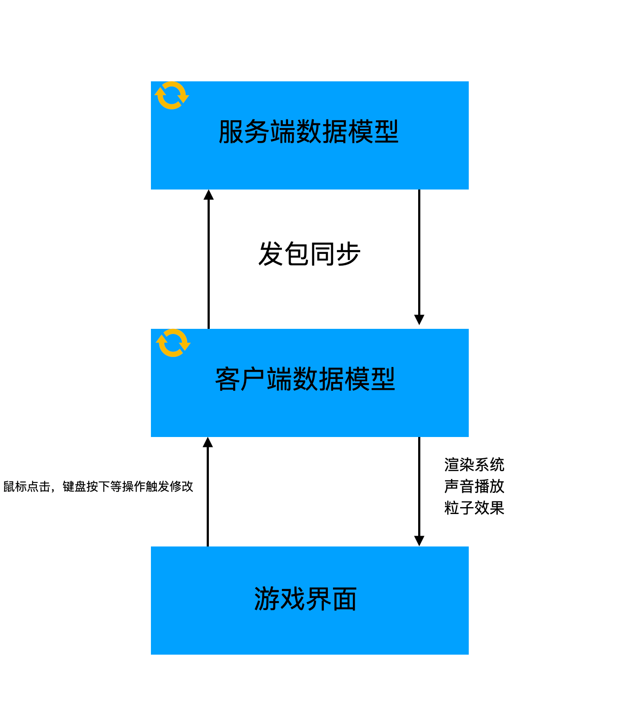
看到这张图，你可能觉得奇怪，说好的是服务端负责游戏逻辑的呢，为什么客户端也有数据模型？其实这里的「客户端数据模型」只是「服务端数据模型」一个副本，虽然它们都有独立的游戏Tick，也共享很多相同的代码，但是最终逻辑还是以服务端为准。
之前我们提到，客户端和服务端是独立运行的，但是它们不可避免地需要同步数据，而在Minecraft里，所有客户端和服务端的数据同步都是通过网络数据包实现的。在大部分时候原版已经实现好了数据同步的方法，我们只需要调用已经实现好的方法就行，但是在某些情况下，原版没有实现对应的功能，或者不适合使用原版提供的功能，我们就得自己创建和发送网络数据包来完成数据的同步。
那么接下去的问题是，我们怎么在代码中区分我们是处于客户端还是服务端呢？
Minecraft的World中有一个isRemote字段，当处于客户端时这个变量值为true，当处于服务端时这个变量值为false。
线程是程序调度的单位之一，处于不同的线程意味着这两个的逻辑和数据是互相独立的，只能通过特定的方法同步数据。具体来说，服务端处于「Server thread」，客户端处于「Render thread」，如果你有观察过Minecraft启动时的输出日志，应该会看到这两个词。
开发模型
在这节中，我们将会粗略的讲一讲Minecraft mod的开发模型是什么样子的，理解这个模型将有助于你理解mod开发中的很多操作是为了什么。
在我看来，Minecraft mod 开发基本上遵循了「事件驱动模式」，这里我们不会详细的讨论纠结什么是「事件驱动模式」，你只需要有一个感性的了解即可。
那么Minecraft「事件驱动模式」是怎么样子的呢？要回答这个问题，我们得先理清三个概念：「事件」「总线」和「事件处理器」。
首先什么是「事件」呢？就跟这个词表示的那样，「事件」就是「发生了某件事」。举例来说「当方块被破环」这个就是一个事件，「当玩家死亡」这个也是一个事件，当然我们前面举的都是非常具体的例子，事件也可以很抽象，比如「当渲染模型时」这个也是一个事件。
接下来什么是「事件处理器」呢？事件处理器就是用来处理「事件」的函数。我们可以创建一个事件处理器来处理「方块破坏事件」，里面的内容是「重新创建一个方块」，可以注册一个事件处理器来处理「玩家死亡事件」，里面的内容是「放置一个墓碑」。
最后是「总线」，总线是连接「事件」和「事件处理器」的工具，当「事件」发生的时候，「事件」的信息将会被发送到总线上，然后总线会选择监听了这个「事件」的「事件处理器」，执行这个事件处理器。

注意这张图里的事件和事件处理器是没有先后顺序的。
在Minecraft中，所写的逻辑基本上都是事件处理。
在Forge开发里有两条总线，Mod总线和Forge总线，所有和初始化相关的事件都是在Mod总线内，其他所有事件都在Forge总线内。
一些核心概念
在这一小节中，我会讲几个不难理解但是非常重要的概念。
注册
如果你想往Minecraft里添加一些内容，那么你必须做的一件事就是注册。注册是一种机制，告诉游戏本身，有哪东西可以使用。你注册时需要的东西基本上可以分成两个部分：一个注册名和一个实例。
ResourceLocation
你可以把ResourceLocation想成一种特殊格式的字符串，它大概长成这样:minecraft:textures/block/stone.png，一个ResouceLocation指定了资源包下的一个特定的文件。举例来说，前面这个这个ResourceLocation代表了原版资源包下的石头的材质图片。ResouceLocation分成两部分，冒号前面的叫做「域（domain）」，在原版中只有一个域，即minecraft域，但是如果你开始开发mod，那么每个mod都会有一个或者多个域。冒号的后半部分是和assets文件夹内的目录结构一一对应的。从某种程度上来说，ResourceLocation就是一个特殊的URL。
模型和材质
在游戏中3d的对象基本上都有它的模型，模型和材质组合在一起规定了一个对象具体的样子。模型相当于是骨头，材质相当于是皮肤。在大部分时候，你的材质都是png图片，请注意保证你的材质背景是不透明的，其次不要在材质中使用半透明像素，会有不可预知的问题。
环境配置
在这一节中，我们会讲解如何配置Forge的开发环境。（在这一节会劝退大部分人）
Forge开发环境的配置
需要的工具
-
AdoptOpenJDK8-HotSpot，出于兼容性的考虑，请确保你安装的是JDK8。
-
IntelliJ IDEA 2020.1.1 社区版，下载完成后请自行安装，介于目标读者的水平，这里有个如何给2020.1之后的版本安装官方中文的教程。
-
Forge MDK 1.15.2 - 31.2.0，下载后请解压到你喜欢的文件夹，请注意这里的解压文件夹不要包括任何的中文、空格以及一些特殊符号（比如「！」）。
注意，介于预想读者的水平，配置过程十有八九是会失败的，建议直接使用ForgeGradleCN(推荐)或者离线包，配置完ForgeGradleCN后继续进行之后的步骤
总体的介绍
Minecraft Forge是一个Gradle项目，Gradle是一个项目构建工具，其主要作用是负责项目的依赖管理、构建等功能。依赖管理指的是帮你自动地下载和配置你开发中使用的库，也就是别人写好的方便你自己开发的代码。构建指的是将你写的mod打包成别人可以安装的jar文件。
Forge官方写了一个叫做ForgeGradle（以后简称FG）的插件来负责整个mod开发环境的配置（为什么要说这个呢，让你知道当环境配置失败时该骂谁)。
开始配置
首先选择启动页面的打开或导入。
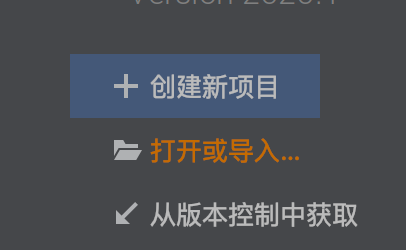
选择你MDK解压目录下的build.gradle打开。

选择作为项目打开

打开之后，根据你网络和自身电脑的情况，会有或长或短的导入时间，这个过程需要下载很多的依赖包,而这些依赖包都存放在海外，介于中国大陆网络封锁，导致海外网络访问不稳定，这个时间将会持续几分钟至几天不等，而且很有可能失败，对于有代理的同学可以自行搜索「Gradle配置代理」来给Gradle加上代理。
当导入结束，点击下方的build面板，左侧显示绿勾时说明导入成功。
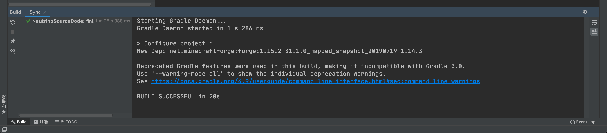
当导入完成后，点击运行右侧的Gradle面板，选择其中的Tasks下fg_runs下的genIntelliJRuns。
在这一步中，会自动下载剩余的一些依赖，以及Minecraft的资源文件。出于和上面相同的理由，这个过程耗时会很长，并且非常容易失败。
同样的当左侧显示「绿勾」时说明配置成功。
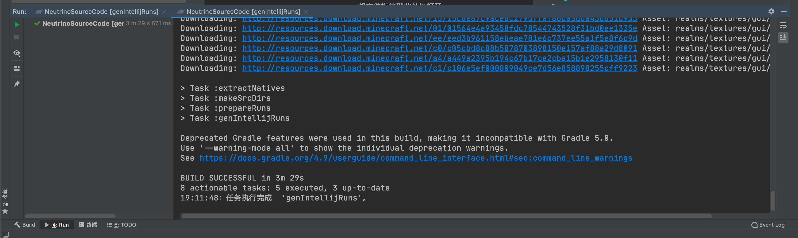
点击上方的运行=>编辑配置。
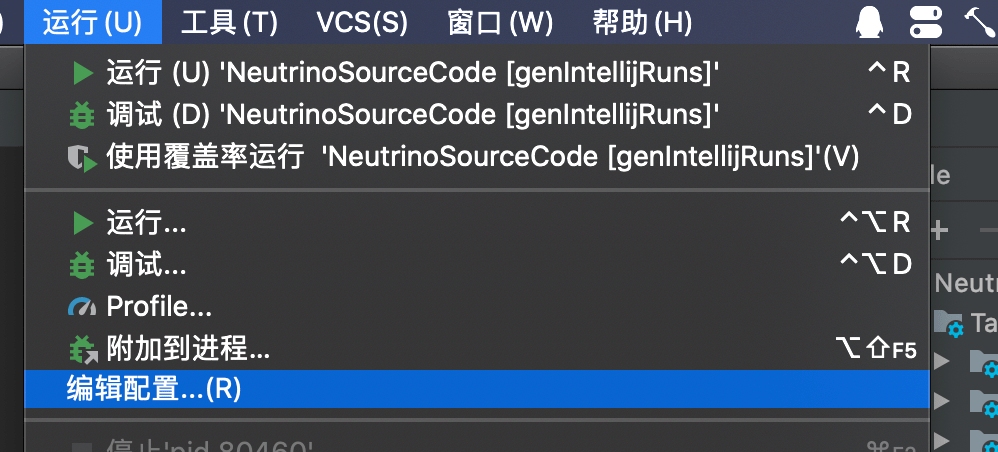
选择应用程序下的三项，将其使用模块的类路径改成你文件夹名.main，点击确定保存。

配置完成之后，选择调试。

然后选择runClient即可启动游戏。
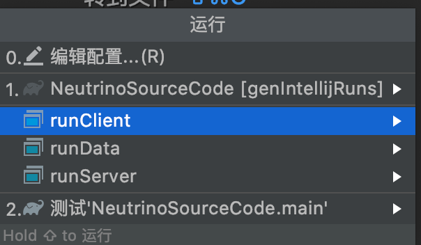
在没有为Gradle配置代理的情况下，runClient有时候会耗费非常多的时间，推荐大家购买并配置代理，如果没有代理可以按照这个教程解决。
可以看见我们的游戏成功启动了。

如果大家嫌控制台输出太多，可以在虚拟机选项中将-Dforge.logging.console.level=的值改成info。

为了之后创建目录和子包的方便，按照下图将「拼合包」和「压缩空的中间包」取消选择。
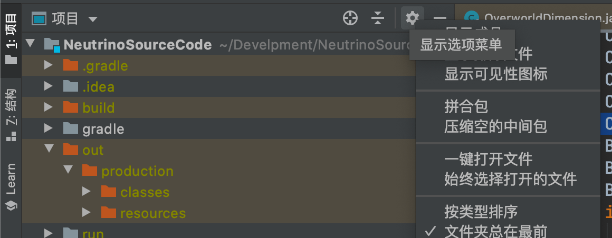
IDEA的编码配置（Windows用户专用）
选择Configure下的设置/首选项。

选择编辑器=>文件编码，将右侧所有涉及到编码全部改成UTF-8，并把创建UTF-8文件改成With NO BOM。
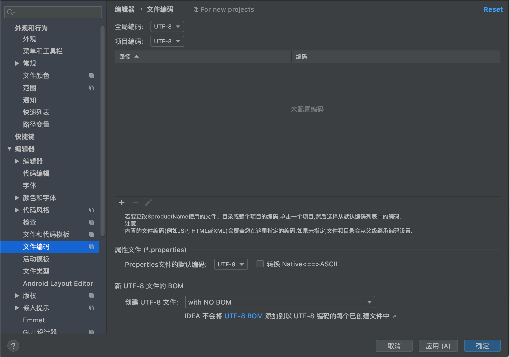
JDK常见错误
如果你的电脑里有多个JDK，有可能IntelliJ自动选择的JDK是错误的，导致无法导入，你需要手动修改项目的JDK和Gradle运行所需要的JDK。
选择文件下的项目结构。
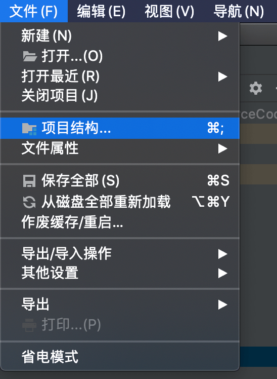
将项目JDK改成1.8版本

接下去修改gradle的版本，出于一些奇怪的原因，在装了中文插件之后，就无法修改gradle的JDK了，所以首先你得先在设置面板停用中文插件。
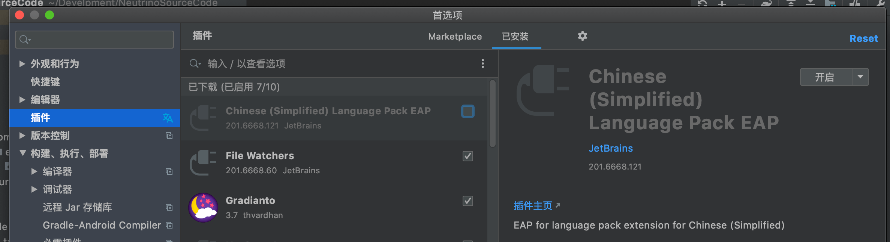
然后按照下图，到设置面板，将Gradle VM改成Project JDK

之后再到Plugin下的Installed重新启动中文插件即可。

开发环境的介绍
在这一节中，我会介绍一下Mod开发产生的一系列文件和文件夹，以及它们的作用。
首先最为重要的一个文件便是：build.gradle，这个文件是Gradle的配置文件，它规定了Mod的项目是如何构建，有哪些依赖，如何配置等。
其中的minecraft 闭包下的内容就是关于Forge Gradle的配置。
其中mappings channel: 'snapshot', version: '20190719-1.14.3’配置项规定了本项目使用的mapping文件版本，这里我强烈建议你经常更新mapping文件，你可以在这里找到所有的mapping文件。那么什么是mapping文件呢？还记得我们之间提及的srg名和mcp名吗？mapping文件的作用就是提供srg名和mcp名之间的翻译。
channel的意思是mapping文件的分类，在大部分情况下，你都应该使用snapshot（快照版本）来确保你的mcp名字是最新的。而之后的version就是具体的版本了，大部分情况下是高版本游戏兼容低版本mapping的，当然游戏版本号不能相差太远。其中还有两个被注释起来的参数，这里我们暂且不提。
另外一个你可能会用的就是dependencies配置，如果你的mod需要依赖别的java库或者别的mod，你需要在这里添加内容，具体添加的方式，注释已经给出了详细的例子，这里就不多说了。其中minecraft 'net.minecraftforge:forge:1.15.2-31.1.0'规定了你需要用到的Forge版本，如果你想升级Forge版本可以修改这一行的内容，版本的格式是net.minecraftforge:forge:游戏版本号-Forge版本号。
这个文件剩余的部分就和一个普通的build.gradle没什么差别了，如果想知道更详细的知识建议去学习Gradle。
接下去的就是src文件夹，这里是放我们代码和资源文件的地方，其中main文件夹是具体运行代码和文件的地方，test文件夹是放测试代码的地方。main文件夹下的java就是放我们写的java代码的地方，而resources文件夹里放的则是我们的材质模型等一些除了代码之外的属于mod的内容。
接下去是run文件夹，这个基本上就是一个标准的.minecraft文件夹，值得注意的是，因为开发环境是同时有Minecraft客户端和服务器代码的，它们两个是共用run目录的。
剩下值得一提的就是build目录，当你在Gradle面板里运行build任务，你的mod就会被打包好放在build=>libs下。
剩下所有带gradle相关的文件夹和文件都是Gradle所需要的运行和配置文件，请不要随便删除。
自定义mod信息
从这节起我们就会开始正式的写我们mod了！
更新Mappings
在开始之前我们需要更新一下Mapping文件，如果不知道Mapping文件的作用，请向前翻阅。再提醒一次，你可以在这里找到最新的mapping文件。
请确保你的mappings文件版本新于20200512-1.15.1。

于是我们需要将build.gradle下的mappings channel: 'snapshot', version: '20190719-1.14.3’修改为mappings channel: 'snapshot', version: '20200512-1.15.1’。

然后点击右侧Gradle面板的重新导入按钮，重新导入项目，因为build.gradle文件非常的重要，请注意不要改错。

这个过程可能会涉及下载文件（但不会很多），有出现错误的可能性，出错了请检查你的build.gradle内容有没有填错，然后多试几次。
配置
首先我们选中java文件夹下所有的目录和文件，然后右键删除Java包下的默认类。

然后再右键新建立一个包

在默认情况下你的包名应该是你的域名的倒写，因为我不想用自己的域名举例子，所以这里我填入的内容是com.tutorial.neutrino。
创建完成以后右击创建一个Java类，名字叫做Neutrino，请注意大小写，在默认情况下Java的类名遵循「帕斯卡命名法」1。


创建完成后目录树如下：
java
└── com
└── tutorial
└── neutrino
└── Neutrino.java
然后进入Neutrino在类名的上方添加一个@Mod()注解，其中填入的参数是你的modId，那么什么是你的modId呢？modId就是你mod名字的唯一标识符，请注意modId和你的mod名字不是同一个东西，它不允许大写字母，也不允许空格等内容。在这里我们选用的modId是neutrino。添加完成后内容如下:
@Mod("neutrino")
public class Neutrino {
}
接下来我们需要去修改处于resources=>META-INF下的mods.toml。在默认情况下IntelliJ是没有对Toml文件语法高亮的，如果你需要像我一样的语法高亮可以去安装一个Toml插件，安装方式和你安装语言包是一样的。
mods.toml是我们mod信息的配置文件，在这里我们可以修改我们mod的名字，介绍等内容。其中有许多配置项，如果一个配置项的注释里含有#mandatory说明这个配置项是必须的，如果注射里写的的是#optional，说明这个配置项是可选的，你可以在配置项前面加上#来注释掉这个配置项。
| 配置项 | 作用 |
|---|---|
| modLoader | 规定mod的Loader，大部分情况下不需要修改 |
| loaderVersion | 规定了mod运行的Forge版本，大部分情况下不需要修改 |
| issueTrackerURL | 可选，你的Mod Bug提交地址，按需修改 |
| modId | 必填，这里需要填入你的modId，和代码中的要保持一致 |
| version | 必填，一般情况下保持默认即可 |
| displayName | 必填，显示名称，你的mod在Mod界面的显示名称 |
| updateJSONURL | 可选，你的mod的更新链接 |
| displayURL | 可选，你的mod介绍网页的链接 |
| logoFile | 可选，你的Mod的Logo |
| credits | 可选，你的Mod的致谢名单 |
| authors | 可选，你的mod的作者名单 |
| description | 必填，你的mod在mod界面的介绍 |
接下剩下的都是依赖，Forge官方的例子已经写的很清楚了，这里我们不多加说明
我修改完的mods.toml如下:
modLoader="javafml"
loaderVersion="[31,)"
[[mods]] #mandatory
modId="neutrino"
version="${file.jarVersion}"
displayName="Neutrino"
authors="FledgeShiu"
description='''
这是我们的教学mod！
'''
现在我们已经修改完我们的mod信息了，现在让我打开游戏。
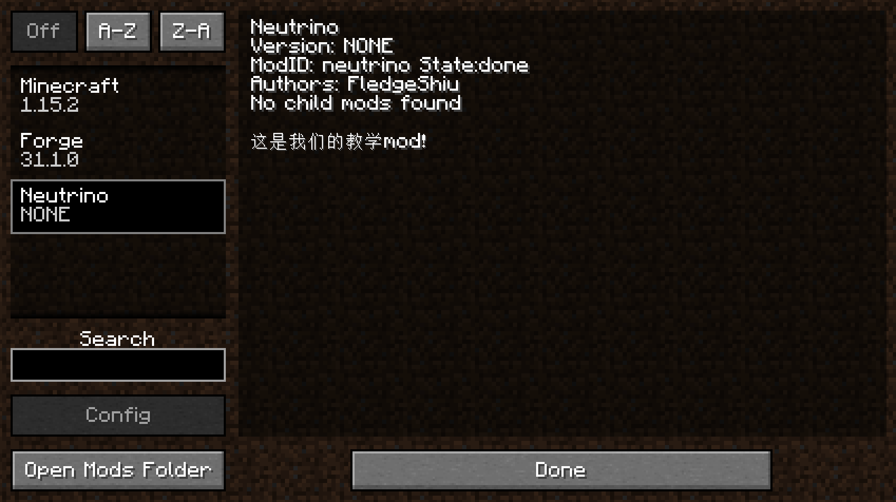
可以看见我们的Mod已经出现了！
开发小课堂
介于目标读者的水平，在这里特增「开发小课堂」环节。
在这次开发小课堂中，我们来讲一讲「日志」，日志你在开发过程中最重要的Debug工具之一，在向别人提问时，你需要提供的三样东西中的其中一项，另外两项是完整的代码和问题清晰到位的问题描述。
如果代码出了问题，你首先需要做的事就是阅读日志，什么你说全英文的看不懂怎么办？现在这么多翻译网站随便找一个把日志粘贴上去翻译啊。
如果你问文件形式的日志在哪里，是你开发目录下的run/logs/latest.log。
「帕斯卡命名法」的意思是：名字中所有的单词首字母都是大写，比如「HelloWorld」
物品
物品是Minecraft中的基本元素之一，在这一节中，我将介绍如何创建物品。
第一个物品
从现在开始我们就要正式开始写代码了。首先有几件事要说明，本项目的代码都会开源，每节的代码链接我都会放在文章的后面，而为了之后修正和查看方便，我的代码中可能会有大量重复的类，项目的组织也和正常项目大相径庭，大家请不要照抄，请大家务必手打代码，你复制粘贴代码是学不会的。
首先我们得明确，创建一个物品需要哪几个步骤。答案是三步：创建自己的物品并继承原版的物品的类，实例化这个物品，最后把这个物品注册进游戏。
注意上面这些步骤是通用的，很多自定义内容的添加都是遵循着上面的步骤。
知道了上述步骤之后，我们就开始添加我们的第一个物品吧，在这里我们将添加一个黑曜石碇。
首先我们需要创建一个物品的类，并且让这个类继承原版的Item类（介于目标读者的水平，Item就是物品的英文）。
public class ObsidianIngot extends Item {
public ObsidianIngot() {
super(new Properties().group(ItemGroup.MATERIALS));
}
}
这个类的代码非常简单，只有一个构造函数。
这里唯一值得一说的就是new Properties().group(ItemGroup.MATERIALS)，这个Properties规定了物品的一些属性，比如：是不是食物，或者这个物品在创造模式的哪一个物品栏。
在这里我们创建了一个Properties并且调用了group方法然后传入了ItemGroup.MATERIALS，这样做是将物品添加进，原版「杂项」创造模式物品栏里。当然你也可以不调用 group方法，如果这样就只能通过/give命令才能获取到物品了。
接下去我们需要实例化和注册这个物品，在以前这个是分开的两步，但是Forge加入了一个叫做DeferredRegister的机制，使得注册一个物品变得非常的简单。
public class ItemRegistry {
public static final DeferredRegister<Item> ITEMS = new DeferredRegister<>(ForgeRegistries.ITEMS, "neutrino");
public static RegistryObject<Item> obsidianIngot = ITEMS.register("obsidian_ingot", () -> {
return new ObsidianIngot();
});
}
这就是注册的全部内容，首先我们创建了一个类型为DeferredRegister<Item>名字叫做ITEMS的变量，这个泛型表明我们需要注册的东西是物品，然后通过new DeferredRegister<>(ForgeRegistries.ITEMS, "neutrino”);实例化了这个类，这个类里有两个参数ForgeRegistries.ITEMS代表了我们要注册的是物品，第二个参数填入的应该是你的modId。这样我们就创建好了注册器，接下去就是注册我们的物品。
还记得我之前说过的吗？注册需要两个东西，一个是「注册名」，还有一个就是你要注册对象的实例，ITEMS.register里的两个参数就是分别对应了这两个东西。
public static RegistryObject<Item> obsidianIngot = ITEMS.register("obsidian_ingot", () -> {
return new ObsidianIngot();
});
第一个参数很好理解，”obsidian_ingot”就对应着注册名，请注意这里的注册名也不要用大写字母，第二个参数看上去非常复杂，但是实际上也挺简单的。
首先我们先来看一下ITEMS的register的函数签名。
public <I extends T> RegistryObject<I> register(final String name, final Supplier<? extends I> sup)
从这个函数签名里可以看见，第二个参数的类型是Supplier<? extends I>，这意味着你要传入的是一个没有参数的「匿名函数」，而且这个「匿名函数」是得有返回值的。
那么什么是「匿名函数」呢？
() -> {
return new ObsidianIngot();
}
这个就是一个匿名函数，当然这是一个没有传入参数而且有返回值的匿名函数，匿名函数也可以有参数，也可不需要返回值。
(T) ->{
System.out.println(T);
}
//这只是演示代码
上面这个「匿名函数」就是传入一个参数，没有返回值的「匿名函数」。
回到我们的mod开发。
() -> {
return new ObsidianIngot();
}
这个匿名函数的意思就是返回一个我们之前创建的黑曜石类的实例。
你看，虽然我们没有显式声明变量，但是我们还是在注册时实例化了我们物品的类。
还差最后一步，我们就可以成功添加物品了。
@Mod("neutrino")
public class Neutrino {
public Neutrino() {
ItemRegistry.ITEMS.register(FMLJavaModLoadingContext.get().getModEventBus());
}
}
我们在Mod主类的构建方法里添加了一行代码，FMLJavaModLoadingContext.get().getModEventBus()这句话的意思是获取Mod总线，如果你不知什么是Mod总线请向前翻阅。而ITEMS.register(FMLJavaModLoadingContext.get().getModEventBus());的意思就是将ITEMS注册进Mod总线里。为什么要注册进Mod总线里呢？原因是，DeferredRegister是基于事件系统实现的。
到这里，我们要添加的物品所需的代码已经写完了，打开游戏看看吧。


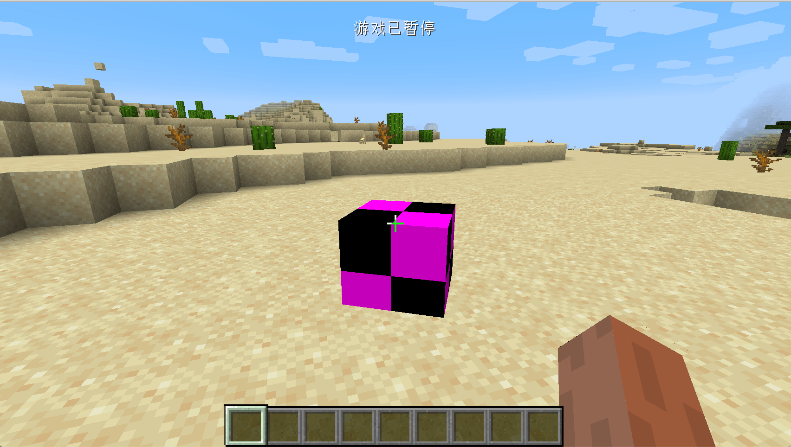
虽然这个物品还是很丑，但这就是我们第一个物品了。
开发小课堂
在开发大型项目的过程中，通过看函数名猜函数功能，这是一个非常重要的能力。当你不清楚一个函数的功能是什么，就翻译翻译它的名字，猜猜看它的功能吧。
另外一个就是要学会看函数签名，理解一个函数最重要一点就是要理解它的输入是什么（参数），它的输出是什么（返回值）。
物品材质与模型
在上一节中我们已经成功添加了第一个物品，当然那个物品还很丑，在这一节中我们将会为它添加模型和材质。
首先按照如下目录在resources下创建文件夹。
resources
├── META-INF
│ └── mods.toml
├── assets
│ └── neutrino
│ ├── models
│ │ └── item
│ └── textures
│ └── item
└── pack.mcmeta
其实assets下就是一个属于Mod的材质包，具体的目录结构等，读者可以自行寻找当前游戏版本的材质包制作教程学习。
接下来我们来添加模型文件，首先在在models下的item里，创建一个和你添加的物品，有着相同注册名的json文件，在我们的例子里就是obsidian_ingot.json。
内容如下:
{
"parent": "item/generated",
"textures": {
"layer0": "neutrino:item/obsidian_ingot"
}
}
这里的内容非常简单："parent": "item/generated”指定了这个模型的「父模型」是什么，而"layer0": "neutrino:item/obsidian_ingot”指定了具体的材质。neutrino:代表这个是在我们自己的assets文件下，item/obsidian_ingot代表了是textures/item/obsidian_ingot.png这张图片。
模型文件的详细格式大家可以自行阅读Wiki。
接下来我们在textures/item/obsidian_ingot.png下放入我们制作好的材质文件，请注意材质文件的比例是1:1，并且最好不要大于32x32像素。

这里的加载流程是：游戏先根据的你注册名获取相对应的模型文件，然后通过模型文件中的textures加载对应的材质文件。
创建完成的目录树如下：
resources
├── META-INF
│ └── mods.toml
├── assets
│ └── neutrino
│ ├── models
│ │ └── item
│ │ └── obsidian_ingot.json
│ └── textures
│ └── item
│ └── obsidian_ingot.png
└── pack.mcmeta
启动游戏之后你就可以看见我们有了模型和材质的物品了。

开发小课堂
一个方便的工具用来制作方块和物品等模型：BlockBench。
Item和ItemStack
在这里，我想讲一下Item和ItemStack的区分。我们先从ItemStack开始一步一步思考为什么它们需要区分开。
ItemStack顾名思义就是「物品堆」。实际上在游戏中，所有物品槽里放着的物品都是单独的ItemStack。
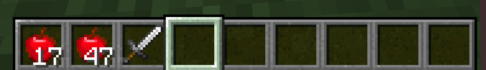
比如在这种情况下，就有三个ItemStack。
但是这就引出了一个问题，虽然一组苹果和第二组苹果数量不同，但是这个数量其实并不影响他们的实际表现。它们同样可以被吃，吃了以后回复的效果也是相同的。
这些相当于「属性」或者「默认行为」是相同的，这些相同的逻辑就应该被抽出来，这就是Item。
还是以上图举例，这里就只有两种Item：苹果和铁剑。
你可以想象ItemStack就是Item的一个包装，它比起Item额外提供了数量，NBT标签等属性。
这里值得注意的是，ItemStack的数量为0，虽然代表是空了，这不代表它就变成null了，所以在你必须得用ItemStack下的isEmpty()方法来判断是否为空。
ItemStack中所包含的Item其实是同一个实例，原因非常简单，如果不是同一个实例，会无意义地产生非常多相同的实例，出于优化的考虑，当然是共用一个实例合适，这同时意味着你可通过result.getItem() == Items.AIR来判断ItemStack存放了哪一个Item。
至于更加详细的解释，harbinger已经写的很清楚了。
食物
在这一节中我们将会在Minecraft世界中添加一个新的食物：黑曜石苹果，吃了这个苹果以后你可以回复饥饿，但是会中毒。和很多人想象的不一样，食物并不是单独的一个东西，对于Minecraft来说，食物只是一种特殊的物品而已。
同样的我们先来创建一个类，让这个类继承Item
public class ObsidianApple extends Item {
private static EffectInstance effectInstance = new EffectInstance(Effects.POISON, 3 * 20, 1);
private static Food food = (new Food.Builder())
.saturation(10)
.hunger(20)
.effect(effectInstance, 1)
.build();
public ObsidianApple() {
super(new Properties().food(food).group(ItemGroup.FOOD));
}
}
我们一行一行的解释。
首先我们创建了一个EffectInstance，什么是EffectInstance？EffectInstance正如他名字暗示的那样是一个药水效果的实例。我们先来思考一下，原版的在玩家身上的药水效果都有哪些属性：效果的种类、时间以及药水等级。而EffectInstance就是这三种属性的一个集合。从new EffectInstance(Effects.POISON, 3 * 20, 1)之中可以看到我们填入的三种属性分别是：原版的中毒药水效果（原版所有的药水效果都在Effects类内）、持续时间是3*20tick，药水等级为1。
接下来我们创建了一个Food类型的变量，这个变量规定了这个这个食物的一些属性，比如：saturation方法设置了饱食度，hunger设置了回复的饥饿度，effect方法设置了吃食物时可能会有的药水效果，其中第二个参数代表触发效果的可能性（想想原版的生鸡肉），这里我们设置成1代表100%触发。这里其实用到称为「建造者模式」的设计模式，有兴趣的同学可以自己查阅。
接下去就是构造方法，想必大家已经很熟悉了，唯一新的一点就是.food(food)，这个方法表明了物品是一个食物，最后我们把这个物品放在了「食物」创造模式物品栏里。
然后我们注册我们的食物，注册名是obsidian_apple:
public static RegistryObject<Item> obsidianApple = ITEMS.register("obsidian_apple", () -> {
return new ObsidianApple();
});
然后添加模型obsdian_ingot.json:
{
"parent": "item/generated",
"textures": {
"layer0": "neutrino:item/obsidian_apple"
}
}
然后是材质obsidian_apple.png

拿出你的苹果试着吃吃看吧。

近战武器
在这一节中，我们将讲解如何创建一个新的剑，这里我们以黑曜石剑举例。
同样的，我们先创建一个ObsidianSword，但是这次的继承的类有些不一样，这次我们直接继承原版的SwordItem类，如果你查看继承关系图，你就可以发现，SwordItem是Item的子类。
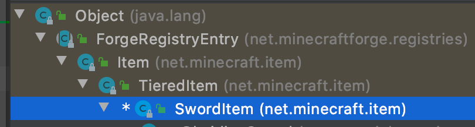
内容如下:
public class ObsidianSword extends SwordItem {
private static IItemTier iItemTier = new IItemTier() {
@Override
public int getMaxUses() {
return 2000;
}
@Override
public float getEfficiency() {
return 10.0F;
}
@Override
public float getAttackDamage() {
return 4.0F;
}
@Override
public int getHarvestLevel() {
return 3;
}
@Override
public int getEnchantability() {
return 30;
}
@Override
public Ingredient getRepairMaterial() {
return Ingredient.fromItems(ItemRegistry.obsidianIngot.get());
}
};
public ObsidianSword() {
super(iItemTier, 3, -2.4F, new Item.Properties().group(ItemGroup.COMBAT));
}
}
同样的，这个内容看上去非常地多，但其实并没有你想象得那么复杂。
首先我们实现一个IItemTier接口的匿名内部类。首先什么是IItemTier呢？Tier的英文意思是「层、等级」，你可以把IItemTier理解成一种材质，比如钻石剑、钻石镐都是钻石做的，同样的，铁剑、铁镐都是铁做的。
那么为什么要自己实现这个匿名内部类呢？原因是原版的net.minecraft.item.IItemTier是用enum实现的，我们没法自己向里面添加内容，所以只能自己实现了，原版的所有属性也都在这个类里，大家可以参考。至于这个匿名内部类里的各种方法，我在这里就不多加解释了，有了之前几个物品的经验，相信读者阅读到这里时已经有了通过函数名猜测函数功能的能力了。关于构造函数里的3和-2.4F的作用也请读者参考原版物品的实现（原版所有物品的实例都写在net.minecraft.item.Items类中）猜测功能。
接下去注册物品
public static RegistryObject<Item> obsidianSword = ITEMS.register("obsidian_sword", () -> {
return new ObsidianSword();
});
添加模型文件：
{
"parent": "item/generated",
"textures": {
"layer0": "neutrino:item/obsidian_sword"
}
}
以及材质

创建完成之后打开游戏看看吧。
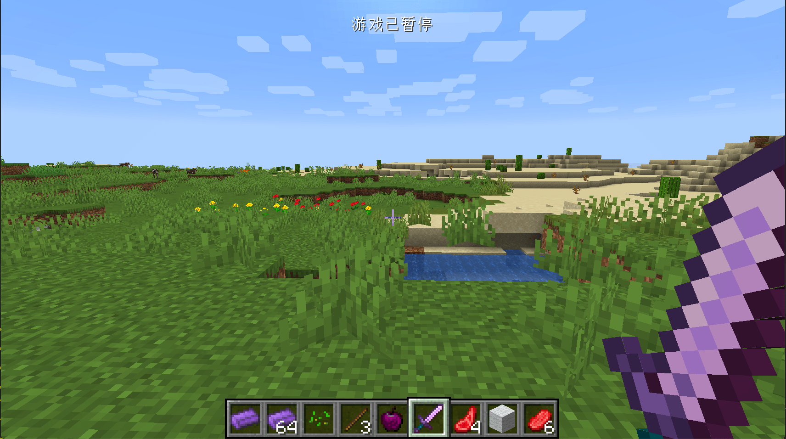
开发小课堂
在开发的过程中你得熟练使用开发工具，在这里我们的工具是IntelliJ IDEA。有两个快捷键对于理解代码有非常大的帮助。第一个快捷键是Ctrl+N(Windows)，这个快捷键可以让你搜索指定的类，这样你就可寻找原版类里在哪里，有什么内容了。另一个快捷键就是Ctrl+H当你把鼠标指针放在一个类上时，按下这个快捷键，会在右侧显示这个类的继承关系，也可查看某个接口的具体实现，大家可以自己上网搜索IDEA常用快捷键学习使用。
另外一个技巧是，当你看到某个方法，想要知道这个方法在哪里调用时，可以右键然后点击Find Usages（查找使用），你就可以看见所有调用这个方法的代码了。
还有如果你想查看某个类的源代码，只需要按住Ctrl键，点击那个类就可以进入到那个类内部查看它的源代码。
自定义创造模式物品栏
在这一节中，我们将研究如何创建一个属于自己的创造模式物品栏，非常简单。
首先创建一个类，让它继承ItemGroup，ItemGroup代表的就是创造模式物品栏，因为我们需要创建一个属于自己的创造模式物品栏，自然需要继承它。
内容如下:
public class ObsidianGroup extends ItemGroup {
public ObsidianGroup() {
super("obsidian_group");
}
@Override
public ItemStack createIcon() {
return new ItemStack(ItemRegistry.obsidianIngot.get());
}
}
第一个方法用于设置创造模式物品栏的标题名，第二个提供了创造模式物品栏的图标，这里我们用了黑曜石碇作为图标，请注意这个函数的返回值类型是ItemStack，而不是Item。
然后我们需要在实例化这个类，创建ModGroup
public class ModGroup {
public static ItemGroup itemGroup = new ObsidianGroup();
}
在这里我们用来存放ItemGroup以及它的子类（比如我们之前创建好ObsidianGroup）的实例，这里的每一个实例都代表了游戏中的一个标签栏。
创建完成以后想要调用这个物品栏也非常简单，我们以黑曜石碇举例。
public class ObsidianIngot extends Item {
public ObsidianIngot() {
super(new Properties().group(ModGroup.itemGroup));
}
}
此时打开游戏我们的黑曜石碇应该就在指定的物品栏里了。
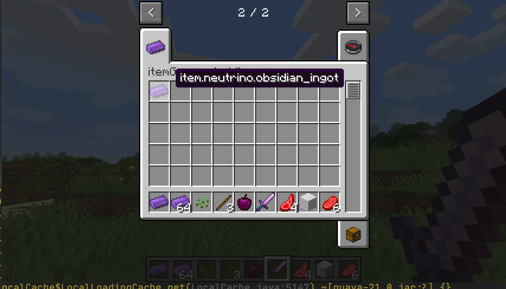
编程小课堂
如果在编程中遇见了自己不会的事情，第一件事不应该是想着问别人，而是上网搜索，你遇见的绝大部问题别人都已经遇见过了，如果你没有搜索就问别人，是在同时浪费你自己和别人的时间。
语言文件与本地化
在这一节中，我们将学习如何给我的物品添加名称。
在前面的章节，我们创建的物品的名字看上去是一串没有意义的字符，在这一节中我们将给他们加上一个有意义的名字。
在Minecraft中，文件的名字是以语言文件的形式提供的，在1.15的版本，语言文件是个json文件，它大概内容如下:
{
"language.name": "English",
"language.region": "United States",
"language.code": "en_us",
"narrator.button.accessibility": "Accessibility",
"narrator.button.language": "Language"
}
可以看见一个语言文件其实就是一个「键值对」，其中的「键」是一个游戏中的编号，其中的「值」就是具体的翻译。这么做的原因是Minecraft要支持非常多国家和地区的语言，各个语言如果直接硬编码进游戏里显然是不具备可维护性的。在默认情况下，如果你没有给在游戏中给需要翻译的对象添加相对应的翻译，那么它默认显示的就是这个翻译的「键」。
以我们的黑曜石碇举例:

目前我们还没有为它添加名字，它所显示的item.neutrino.obsidian_ingot就是默认的键值。当然大家也可以自定义键值，Item类里有相对应的方法可以实现这点，正如我之前所说的，在Minecraft源代码里和通过函数名猜测功能是Mod开发必备的能力，所以这里相当于一个小测试，请大家自己寻找可以修改这个键的办法。
但是在有些时候，游戏无法默认地给我的内容自动添加键，这时我们就得自己创建一个键，Minecraft提供了一个叫做I18n.format的方法让我自己创建，具体的使用方式，我们之后会讲到。
接下来让我创建语言文件吧。
首先在neutrino文件夹下创建一个叫做lang的文件夹，创建成功后目录树如下:
resources
├── META-INF
│ └── mods.toml
├── assets
│ └── neutrino
│ ├── lang
│ ├── models
│ │ └── item
│ │ ├── obsidian_apple.json
│ │ ├── obsidian_ingot.json
│ │ └── obsidian_sword.json
│ └── textures
│ └── item
│ ├── obsidian_apple.png
│ ├── obsidian_ingot.png
│ └── obsidian_sword.png
└── pack.mcmeta
这里我们以简体中文举例举例。
首先创建一个叫做zh_cn.json的文件，内容如下。
{
"item.neutrino.obsidian_ingot": "黑曜石锭",
"item.neutrino.obsidian_apple":"黑曜石苹果",
"item.neutrino.obsidian_sword":"黑曜石剑",
"itemGroup.obsidian_group": "黑曜石物品栏"
}
然后启动游戏，调成简体中文，你应该就可以看见我们的物品有了翻译。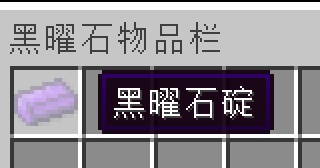
作为一个简体中文的使用者，你的mod里至少应该有zh_cn.json，en_us.json和zh_tw.json这三个语言文件，所有可用的语言文件列表请在Wiki的语言#可用语言内查看。
方块
我们在这节中终于要进入Minecraft中最为迷人的其中一部分：方块。当然我们会从最为简单的方块开始学起。
第一个方块
在这一节中，我们将会创建一个最简单的方块，一个什么功能也没有的方块，甚至连模型和材质也没有。在开始之前我必须做一个概念上的区分，关于物品和方块概念上的区分。任何你可在拿在手中的东西都是「物品」，只有放置在世界中才成为了「方块」。
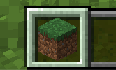
这个是一个物品
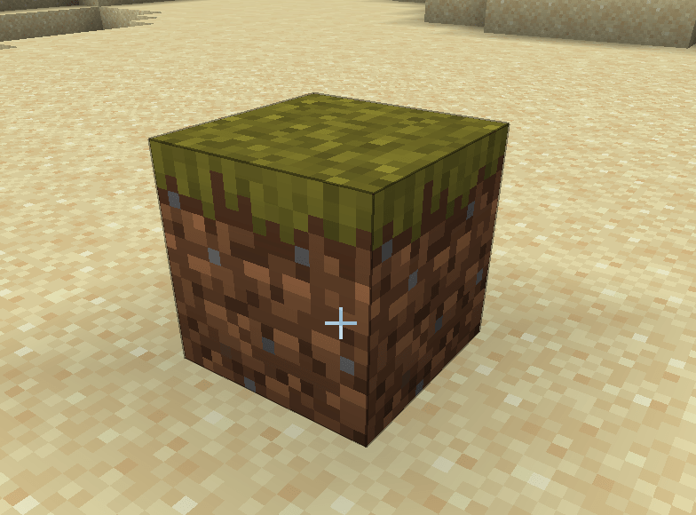
这个才是一个方块。
好的，我们已经把物品和方块之间的区别说清楚了。接下来就开始创建第一个方块吧，这里我们以黑曜石块为例。
首先创建一个类，叫做ObsidianBlock，就和所有的自定义物品需要继承Item类一样，所有的自定义方法都需要继承Block类，请确保你的Block类是net.minecraft.block.Block这个类。
具体内容如下:
public class ObsidianBlock extends Block {
public ObsidianBlock() {
super(Properties.create(Material.ROCK).hardnessAndResistance(5));
}
}
内容非常简单，就和Item有Properties一样，方块也需要一个Properties，和物品的Properties不太一样的是，方块的Propeteis需要调用create方法创建。请注意虽然这两个Properties名字相同，但是它们不在同一个包内，这其实是两个不同的类，create方法需要一个参数，这个参数是一个Material（材料），Material帮你预设了一些方块的特质，比如是否是实心的，是否是流体等，你可以通过调用Properties的方法来覆盖Material带来的特征，这里我们用的是原版的Material.ROCK，如果你想自己创建一个Material也非常简单，请参考原版的实现。最后我们调用hardnessAndResistance方法来为我的方块设置硬度。
至此我们的黑曜石方块类已经创建完毕。就如物品需要注册一样，我的方块也需要注册。
创建一个新的注册类BlockRegistry，内容如下:
public class BlockRegistry {
public static final DeferredRegister<Block> BLOCKS = new DeferredRegister<>(ForgeRegistries.BLOCKS, "neutrino");
public static RegistryObject<Block> obsidianBlock = BLOCKS.register("obsidian_block", () -> {
return new ObsidianBlock();
});
}
相信之前已经写过注册类的你对这些内容应该相对熟悉了。我们把DeferredRegister<Item> 换成了DeferredRegister<Block>（当然后面的实例化参数也需要修改），这样我们就创建了一个方块的注册器。注册方式也和物品注册如出一辙，这里就不多加阐述了。
你还需要在你的主类构造方法里，将这个注册器注册到mod总线中。
@Mod("neutrino")
public class Neutrino {
public Neutrino() {
ItemRegistry.ITEMS.register(FMLJavaModLoadingContext.get().getModEventBus());
BlockRegistry.BLOCKS.register(FMLJavaModLoadingContext.get().getModEventBus());
}
}
到此，我们就已经完成了我们的方块，现在启动游戏，输入如下命令，你就可以放置你自己的方块了。
/setblock ~ ~ ~ <你的modID>:<你的方块的注册名>
以我们的例子来说
/setblock ~ ~ ~ neutriono:obsidian_block

但是，只能通过命令放置的方块显然不符合我们的胃口，我们希望有一个物品可以和方块相对应，这样我们就不需要使用命令放置方块了，对于这个常见的需求，Minecraft 也提供了一个方便的类来满足，这个类就是BlockItem，我们只需要创建并实例化这个类就行了。
我们回到我们的ItemRegistry，添加如下一行
public static RegistryObject<Item> obsidianBlock = ITEMS.register("obsidian_block", () -> {
return new BlockItem(BlockRegistry.obsidianBlock.get(), new Item.Properties().group(ModGroup.itemGroup));
});
可以看见我们创建了一个BlockItem的实例，它的构造方法需要两个参数，第一个参数是你注册好的方块的实例，我们可以通过BlockRegistry.obsidianBlock.get()获取到之前注册好的方块实例，第二个参数是一个Item的Properties，这里的Properties非常简单，我们将其添加到我们之前创建的创造模式物品栏里。
此时打开游戏，你就可以在我们的创造模式物品栏里看见我们的方块了。
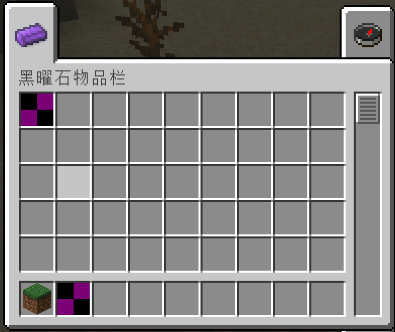

Block和BlockState
在开始我们接下来的讲解之前，我想先来讲一下BlockState这个概念，相信已经对ItemStack有所了解到你，应该也能很快理解这个概念。
就和在游戏中的所有物品其实是Itemstack一样，在游戏中的所有方块其实是BlockState，而BlockState相比起Block除了多出的XYZ位置信息之外，最为重要的就是state信息，也就是状态信息。状态信息乍一看很难以理解，但是其实非常好懂。我们以原版的栅栏举例，当你把原版的栅栏放在地上，栅栏会根据周围方块的不同自动地改变形状，这其实是栅栏自动地改变了状态，我们可以在F3调试模式下查看方块的状态。
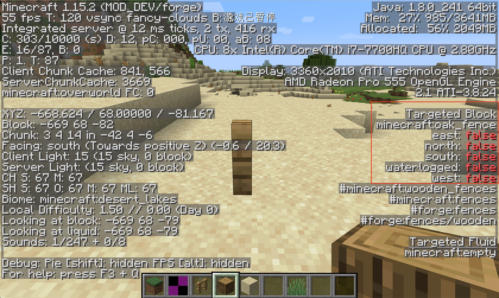
这是在默认方块状态下的栅栏模型。
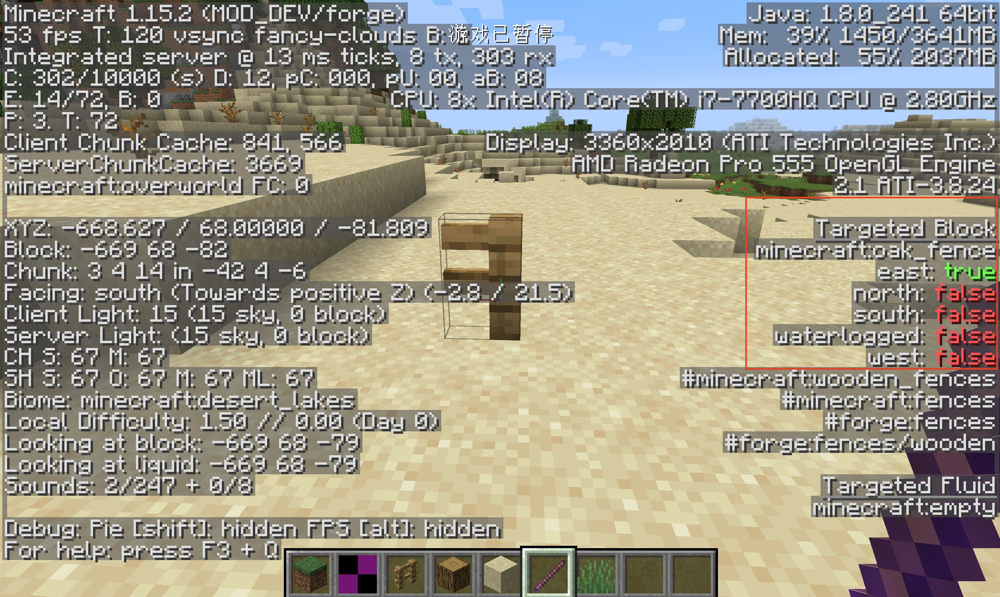
可以看到我们使用Debug Stick修改了栅栏的方块状态之后，方块的模型也相应地发生了改变。
当然，不是所有的方块都有状态属性的，比如石头就没有，但是位置属性是每个方块都有的。
方块模型和材质
我们已经成功地创建了一个方块，但是这个方块还很丑，就是一个紫黑块而已。在这一节中，我们就要来为这个方块添加模型和材质。
首先我们创建一些文件夹，创建成功后的目录如下显示:
resources
├── META-INF
│ └── mods.toml
├── assets
│ └── neutrino
│ ├── blockstates
│ ├── lang
│ ├── models
│ │ ├── block
│ │ └── item
│ └── textures
│ ├── block
│ └── item
└── pack.mcmeta
然后我们在blockstates文件夹下，创建一个和你物品注册名同名的json文件，这里我们要创建obsidian_block.json
内容如下:
{
"variants": {
"": { "model": "neutrino:block/obsidian_block_model" }
}
}
这个文件其实就是方块状态和具体要使用的模型的映射表，如果你还不清楚什么是方块状态，请向前翻阅。
这里我们没有方块状态，所以写了"": { "model": "neutrino:block/obsidian_block_model” }，将默认模型设置成了obsidian_block_model.json。
接下来我们在models/block下创建obsidian_block_model.json，内容如下:
{
"parent": "block/cube_all",
"textures": {
"all": "neutrino:block/obsidian_block_texture"
}
}
可以看到，和物品模型相比，只是继承的东西不太一样，至于具体模型文件的格式请参考Wiki。在模型里，我们调用了obsidian_block_texture.png作为我们的材质。
接下来让我们在textures/block下添加我们的材质，同样地请注意材质文件的比例是1:1，并且最好不要大于32x32像素。

这时启动游戏，你应该就可看见我们的方块有对应的材质和模型了。

整个加载过程为：获取游戏中方块的状态，在Blockstates相对应的映射表里获取模型，根据模型加载材质。
但这时你会发现我们方块相对应的物品还没有材质，接下来我们就要解决这个问题。
在models/item下创建和我们BlockItem注册名同名的json文件，这里是obsidian_block.json
{
"parent": "neutrino:block/obsidian_block_model"
}
对，你没看错，就一句话，我们直接继承相对应的方块模型就行了。
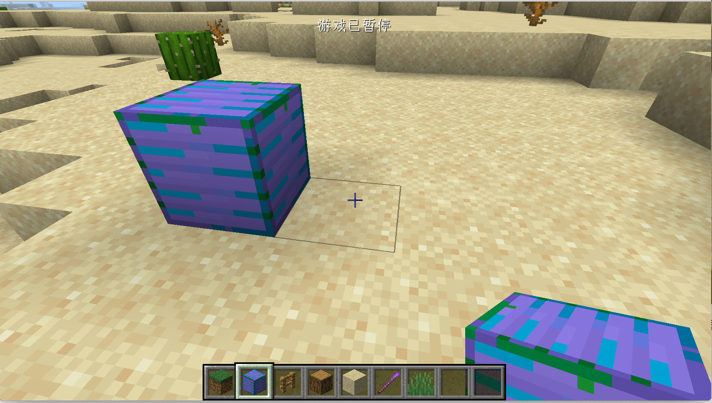
开发小课堂
在调试模型材质或者是某个函数的过程中，你可能需要多次重启，其实是有办法规避这个问题的。首先你需要在「Debug（调试模式」下启动游戏，然后选择上方的「build->Build(构建项目=>构建项目)」，只要是函数内部的修改，都可以热更新。对于模型和材质还得多一个步骤，在构建项目结束后按F3+T重新载入材质包。当然这个方法也不是万能的，当你发现没法热更新或者热更新不起效时，你还是得重启游戏。
方块状态
在之前我们已经稍微地提及了BlockState，但是我们的第一个方块显然是没有状态的，这一节我们将以黑曜石魔方举例来创建一个带有状态的方块。
首先创建一个叫做ObsidianRubikCube的类，内容如下:
public class ObsidianRubikCube extends Block {
private static IntegerProperty STATE = IntegerProperty.create("face", 0, 1);
public ObsidianRubikCube() {
super(Properties.create(Material.ROCK).hardnessAndResistance(5));
this.setDefaultState(this.stateContainer.getBaseState().with(STATE, 1));
}
@Override
protected void fillStateContainer(StateContainer.Builder<Block, BlockState> builder) {
builder.add(STATE);
super.fillStateContainer(builder);
}
}
这里有三个和之前我创建方块不一样的地方，首先就是：
private static IntegerProperty STATE = IntegerProperty.create("face", 0, 1);
在这句话里，我们创建了一个新的方块状态，正如IntegerProperty这个名字暗示的那样，这个是一个整数类型的方块状态，除了IntegerProperty原版还实现了BooleanProperty和EnumProperty，并且原版还在BlockStateProperties类下实现了很多预设的方块状态，可以按需使用。如果这些类型都不满足你的需求，你还可以继承Property自己创建一个新的种类的方块状态。
IntegerProperty.create("face", 0, 1)
的意思是，这个方块状态的名字叫做face，最小值是0，最大值是1。
@Override
protected void fillStateContainer(StateContainer.Builder<Block, BlockState> builder) {
builder.add(STATE);
super.fillStateContainer(builder);
}
然后我们在fillStateContainer里调用传入的builder变量中的add方法给我的方块添加了一个状态。
最后，我们在构造方法里设置了默认状态（可以不用设置）。
this.setDefaultState(this.stateContainer.getBaseState().with(STATE, 1));
注册方块
public static RegistryObject<Block> obsidianRubikCube = BLOCKS.register("obsidian_rubik_cube", () -> {
return new ObsidianRubikCube();
});
注册物品
public static RegistryObject<Item> obsidianRubikCube = ITEMS.register("obsidian_rubik_cube", () -> {
return new BlockItem(BlockRegistry.obsidianRubikCube.get(), new Item.Properties().group(ModGroup.itemGroup));
});
接下来在blockstates文件夹下创建你和方块注册名相同的json文件，我们创建obsidian_rubik_cube.json，内容如下:
{
"variants": {
"face=0": { "model": "neutrino:block/obsidian_rubik_cube_model_0" },
"face=1": { "model": "neutrino:block/obsidian_rubik_cube_model_1" }
}
}
可以看到，我们在这里为不同的face值指定了不同的模型，分别是obsidian_rubik_cube_model_0和obsidian_rubik_cube_model_1。请注意，如果你要定义多个blockstate的值，请用半角逗号隔开，中间不要有空格。具体的要求也请参考Wiki中关于模型的章节。
然后我们在models/block下创建obsidian_rubik_cube_model_0.json和obsidian_rubik_cube_model_1.json这两个模型文件。
obsidian_rubik_cube_model_0.json:
{
"parent": "block/cube_all",
"textures": {
"all": "neutrino:block/obsidian_rubik_cube_texture_0"
}
}
obsidian_rubik_cube_model_1.json:
{
"parent": "block/cube_all",
"textures": {
"all": "neutrino:block/obsidian_rubik_cube_texture_1"
}
}
可以看见它分别加载了两个不同的材质。
然后添加材质。
obsidian_rubik_cube_texture_0.png

obsidian_rubik_cube_texture_1.png

最后给我们的物品模型obsidian_rubik_cube添加内容：
{
"parent": "neutrino:block/obsidian_rubik_cube_model_1"
}


可以看到，随着我们用debug stick改变了方块的状态，方块的模型和材质也发生了改变。
非实心方块与自定义模型
在这一节中，我们将创建一个有着特殊外形且是透明的方块，这里我们以黑曜石框架举例。
首先我们创建一个叫做ObsidianFrame的类，内容如下：
public class ObsidianFrame extends Block {
private static VoxelShape shape;
static {
VoxelShape base = Block.makeCuboidShape(0, 0, 0, 16, 1, 16);
VoxelShape column1 = Block.makeCuboidShape(0, 1, 0, 1, 15, 1);
VoxelShape column2 = Block.makeCuboidShape(15, 1, 0, 16, 15, 1);
VoxelShape column3 = Block.makeCuboidShape(0, 1, 15, 1, 15, 16);
VoxelShape column4 = Block.makeCuboidShape(15, 1, 15, 16, 15, 16);
VoxelShape top = Block.makeCuboidShape(0, 15, 0, 16, 16, 16);
shape = VoxelShapes.or(base, column1, column2, column3, column4, top);
}
public ObsidianFrame() {
super(Properties.create(Material.ROCK).hardnessAndResistance(5).notSolid());
}
@Override
public VoxelShape getShape(BlockState state, IBlockReader worldIn, BlockPos pos, ISelectionContext context) {
return shape;
}
}
在最上方我们创建了一个VoxelShape，我们将在getShape方法中返回这个形状，这个VoxelShape就是我们方块的碰撞箱，很不幸的是Minecraft的碰撞箱子只能由方块组成，这个方块的大小是16*16*16，所以我们在静态代码块中自己创建了一系列的长方体和立方体，拼成了我们方块的碰撞箱，其中Block.makeCuboidShape的6个参数分别是起始点的XYZ和结束点的XYZ。最后我们用VoxelShapes的or方法将这些东西拼在了一起。VoxelShapes 下还有很多好用的空间操作方法，请自行选用。如果你不给你的方块设置合适的的碰撞箱的话，你的方块内部空间会显得非常的暗。
可以看见这里最为特别的是调用了notSoild方法，这个方法是告知Minecraft我们的方块不是一个「实心」方块，需要进行特殊的对待。之所以这么做，是因为Minecraft的世界里有非常多的方块，如果方块的每一个面都要渲染，包括那些被遮挡的面和遮挡起来的方块，那么会非常地耗费性能，所以出于优化的考虑，Minecraft只会渲染那些没有被遮挡起来的面。而noSoild的作用就是告诉Minecraft，要渲染这个方块遮挡的那些面。
如果不开启这个就会出现这样效果。
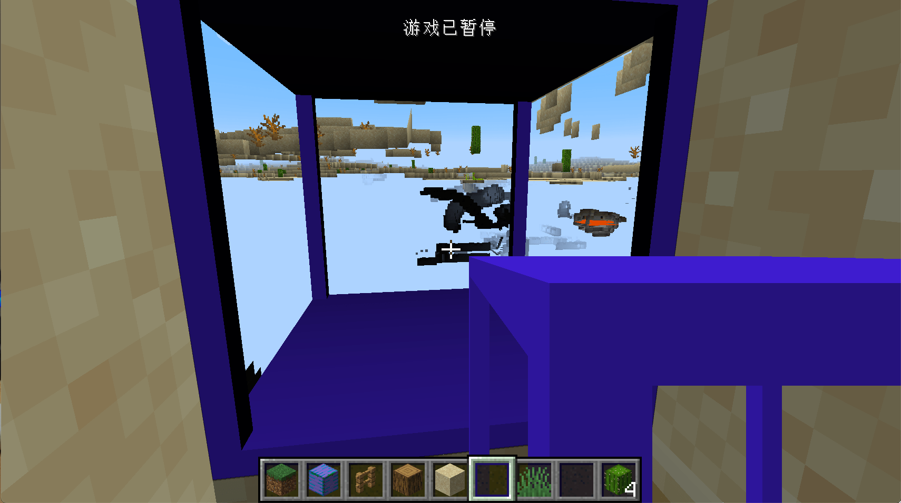
如果对Minecraft方块渲染相关的内容感兴趣，可以阅读这篇博客文章，以及这个博客下其他文章（如果你打不开这个页面，说明你所在的国家或地区封锁了这个网站）。
注册方块:
public static RegistryObject<Block> obsidianFrame = BLOCKS.register("obsidian_frame", () -> {
return new ObsidianFrame();
});
注册物品:
public static RegistryObject<Item> obssidianFrame = ITEMS.register("obsidian_frame", () -> {
return new BlockItem(BlockRegistry.obsidianFrame.get(), new Item.Properties().group(ModGroup.itemGroup));
});
然后是方块状态文件obsidian_frame.json:
{
"variants": {
"": { "model": "neutrino:block/obsidian_frame" }
}
}
模型文件obsidian_frame.json:
{
"credit": "Made with Blockbench",
"texture_size": [64, 64],
"textures": {
"0": "neutrino:block/obsidian_frame",
"particle": "neutrino:block/obsidian_frame"
},
"elements": [
{
"from": [0, 0, 0],
"to": [16, 1, 16],
"faces": {
"north": {"uv": [4, 8.25, 8, 8.5], "texture": "#0"},
"east": {"uv": [0, 8.25, 4, 8.5], "texture": "#0"},
"south": {"uv": [12, 8.25, 16, 8.5], "texture": "#0"},
"west": {"uv": [8, 8.25, 12, 8.5], "texture": "#0"},
"up": {"uv": [8, 8.25, 4, 4.25], "texture": "#0"},
"down": {"uv": [12, 4.25, 8, 8.25], "texture": "#0"}
}
},
{
"from": [0, 15, 0],
"to": [16, 16, 16],
"faces": {
"north": {"uv": [4, 4, 8, 4.25], "texture": "#0"},
"east": {"uv": [0, 4, 4, 4.25], "texture": "#0"},
"south": {"uv": [12, 4, 16, 4.25], "texture": "#0"},
"west": {"uv": [8, 4, 12, 4.25], "texture": "#0"},
"up": {"uv": [8, 4, 4, 0], "texture": "#0"},
"down": {"uv": [12, 0, 8, 4], "texture": "#0"}
}
},
{
"from": [0, 1, 0],
"to": [1, 15, 1],
"faces": {
"north": {"uv": [2.25, 0.25, 2.5, 3.75], "texture": "#0"},
"east": {"uv": [2, 0.25, 2.25, 3.75], "texture": "#0"},
"south": {"uv": [2.75, 0.25, 3, 3.75], "texture": "#0"},
"west": {"uv": [2.5, 0.25, 2.75, 3.75], "texture": "#0"},
"up": {"uv": [2.5, 0.25, 2.25, 0], "texture": "#0"},
"down": {"uv": [2.75, 0, 2.5, 0.25], "texture": "#0"}
}
},
{
"from": [15, 1, 0],
"to": [16, 15, 1],
"faces": {
"north": {"uv": [1.25, 0.25, 1.5, 3.75], "texture": "#0"},
"east": {"uv": [1, 0.25, 1.25, 3.75], "texture": "#0"},
"south": {"uv": [1.75, 0.25, 2, 3.75], "texture": "#0"},
"west": {"uv": [1.5, 0.25, 1.75, 3.75], "texture": "#0"},
"up": {"uv": [1.5, 0.25, 1.25, 0], "texture": "#0"},
"down": {"uv": [1.75, 0, 1.5, 0.25], "texture": "#0"}
}
},
{
"from": [0, 1, 15],
"to": [1, 15, 16],
"faces": {
"north": {"uv": [0.25, 0.25, 0.5, 3.75], "texture": "#0"},
"east": {"uv": [0, 0.25, 0.25, 3.75], "texture": "#0"},
"south": {"uv": [0.75, 0.25, 1, 3.75], "texture": "#0"},
"west": {"uv": [0.5, 0.25, 0.75, 3.75], "texture": "#0"},
"up": {"uv": [0.5, 0.25, 0.25, 0], "texture": "#0"},
"down": {"uv": [0.75, 0, 0.5, 0.25], "texture": "#0"}
}
},
{
"from": [15, 1, 15],
"to": [16, 15, 16],
"faces": {
"north": {"uv": [3.25, 0.25, 3.5, 3.75], "texture": "#0"},
"east": {"uv": [3, 0.25, 3.25, 3.75], "texture": "#0"},
"south": {"uv": [3.75, 0.25, 4, 3.75], "texture": "#0"},
"west": {"uv": [3.5, 0.25, 3.75, 3.75], "texture": "#0"},
"up": {"uv": [3.5, 0.25, 3.25, 0], "texture": "#0"},
"down": {"uv": [3.75, 0, 3.5, 0.25], "texture": "#0"}
}
}
]
}
材质文件obsidian_frame.png：

这里我的模型和材质都是用BlockBench制作的。
物品模型obsidian_frame.json:
{
"parent": "neutrino:block/obsidian_frame"
}
打开游戏，你应该就能看见我们的黑曜石框架了。
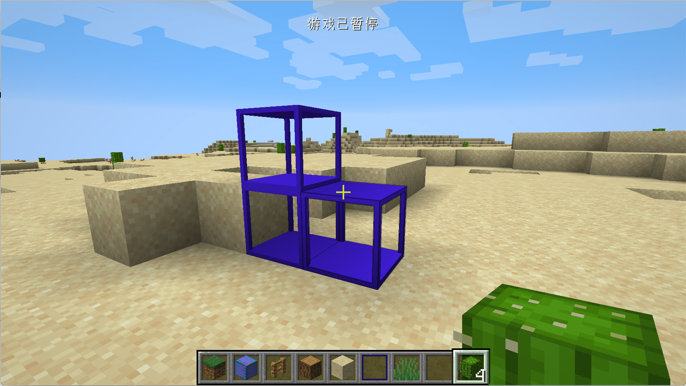
方块的渲染类型
在这一节中，我们将会聊一下渲染类型（RenderType)。
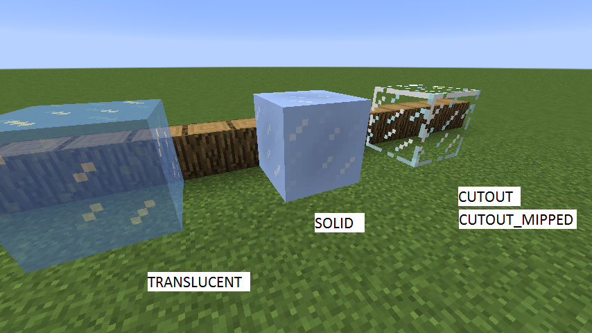
图片出自TheGreyGhost博客
在Minecraft中，方块的渲染模型有四种，分别是translucent、solid、cutout和cutout_mipped。
大概的区别大家一样就能看出来。这里我们要详细讲一下translucent和cutout*之间的区别。它们的区别其实很简单，translucent是半透明，而cutout*是要不全透明，要不不透明。大家可以注意看这玻璃上的白色部分和冰块上白色部分的区别。
而cutout和cutout_mipped直接的区别涉及到游戏优化的地方，cutout_mipped是开启了Mipmapping的cutout。
在三维计算机图形的贴图渲染中有一个常用的技术被称为Mipmapping。为了加快渲染速度和减少图像锯齿，贴图被处理成由一系列被预先计算和优化过的图片组成的文件,这样的贴图被称为 MIP map 或者 mipmap。这个技术在三维游戏中被非常广泛的使用。“MIP”来自于拉丁语 multum in parvo 的首字母，意思是“放置很多东西的小空间”。Mipmap 需要占用一定的内存空间，同时也遵循小波压缩规则 （wavelet compression）。
我们将以玻璃罐为例，来教大家如何设置方块的RenderType。
首先我们来创建方块，GlassJar.java:
public class GlassJar extends Block {
public GlassJar() {
super(Properties.create(Material.ROCK).hardnessAndResistance(5).notSolid());
}
}
当然别忘了注册。
public class BlockRegistry {
public static final DeferredRegister<Block> BLOCKS = new DeferredRegister<>(ForgeRegistries.BLOCKS, "neutrino");
public static final RegistryObject<GlassJar> glassJar = BLOCKS.register("glass_jar", () -> {
return new GlassJar();
});
}
接下来就是设置我们方块的RenderType的地方，RenderTypeRegistry：
@Mod.EventBusSubscriber(bus = Mod.EventBusSubscriber.Bus.MOD,value = Dist.CLIENT)
public class RenderTypeRegistry {
@SubscribeEvent
public static void onRenderTypeSetup(FMLClientSetupEvent event) {
RenderTypeLookup.setRenderLayer(BlockRegistry.glassJar.get(), RenderType.getTranslucent());
}
}
因为渲染相关的内容都是在客户端发生，所以我们在FMLClientSetupEvent事件下注册我们的RenderType。
物理服务器是没发设置RenderType的，为了物理服务器的兼容性，在这里我们添加了value = Dist.CLIENT使它只会在物理客户端上监听事件。Forge提供了很多和物理端打交道的东西，除了我们看到的value = Dist.CLIENT，还有@OnlyIn注释，这个加了这个注释之后你就可以指定一个类只存在于物理客户端，或者物理服务端。当然还有DistExecutor，这里类下面有很多方法用来在在不同的物理端来执行不同的代码。
一个非常常见的问题就是，在物理服务端调用了只有在物理客户端存在的类，比如加了@OnlyIn(Dist.CLIENT)的类或者方法，当你在物理服务端调用它时，它相当于是不存在的，这时就是出现错误。
你在注意你调用的代码究竟是处于哪一个「逻辑端」的同时，你也得注意你的代码就行执行在哪一个「物理端」。
这一切的努力都是为了在服务器上和在本地游戏中能共用一个jar文件。
这里我们调用了RenderTypeLookup.setRenderLayer来设置我们方块的RenderType，RenderType.getTranslucent()指定了我们的RenderType是translucent，在RenderType类下有着原版所有的RenderType，你也可以自定义RenderType从而使用自定义shader等高级功能。
具体的模型和材质请看Github。
打开游戏你就能看见我们的玻璃罐了。

特殊模型
在这一节中，我们将学习如何在Minecraft中使用特殊的物品模型，Forge为Minecraft添加了额外两种物品模型的支持：OBJ和B3D。
OBJ 模型
在这一节我我们将学习如何给方块添加OBJ物品模型，在开始添加OBJ模型之前强烈建议读者先阅读关于OBJ和MTL文件格式的定义以及相关名词的意义，这里有个简短的说明
首先创建我们的方块ObsidianOBJ.java：
public class ObsidianOBJ extends Block {
public ObsidianOBJ() {
super(Properties.create(Material.ROCK).hardnessAndResistance(5).notSolid());
}
}
和之前创建的方法一致，因为我们创建的模型并不是实心的，所以加上了notSolid方法。
方块注册:
public static RegistryObject<Block> obsidanObj = BLOCKS.register("obsidian_obj", () -> {
return new ObsidianOBJ();
});
物品注册：
public static RegistryObject<Item> obsidianObj = ITEMS.register("obsidian_obj", () -> {
return new BlockItem(BlockRegistry.obsidanObj.get(), new Item.Properties().group(ModGroup.itemGroup));
});
方块状态文件obsidian_obj.json
{
"variants": {
"": { "model": "neutrino:block/obsidian_obj" }
}
}
模型的Json模型文件obsidian_obj.json
{
"loader": "forge:obj",
"model": "neutrino:models/block/obsidian_obj.obj",
"flip-v": true
}
可以看到，从这里开始就有些特殊了，首先我们用loader指定了我们要加载的模型是obj格式的，然后在model里具体指定了我们的OBJ模型，最后将flip-v设置成为true，这么做的原因是minecraft里的材质和你在blender等工具里的材质是上下颠倒的，所以你得手动翻转你的材质。
接下来是OBJ模型obsidian_obj.obj，这里只标注需要修改的地方：
mtllib obsidian_obj.mtl
你必须在这里指明你要使用的mtl文件的名字。
接下来是mtl文件``obsidian_obj.mtl`，同样的我在这里只标注需要修改的地方。
map_Kd neutrino:block/obsidian_obj
你必须这样的方式来指定你模型文件的材质。
最后是我们的材质obsidian_obj.png:


可以看到我们我们的OBJ模型已经成功加载出来了。当然我们在这里还没有设置正确的碰撞箱，这就交给读者自己实现了。
物品同样也是可以使用OBJ模型的，请读者自行探索。
常见坑的处理方法
环境光遮蔽
在默认情况下，你可能会发现你的模型有着像下图一样不自然的黑色阴影，这是因为环境光遮蔽导致的，你可以通过复写Block类下的getAmbientOcclusionLightValue方法来修改方块的环境光遮蔽，其中默认是0.2，最大值为1，数值越大环境光遮蔽越小。

夜晚不自然的高光
有时候你会发现你的模型在夜晚也会发出类似这样不自然的高光，这是由于mtl文件中多余的属性导致的，对于Mod开发建议只保留map_Kd属性，具体可以看IE的mtl文件。

开发小课堂
如果你在使用Blender制作OBJ模型，请将你的模型中心点设置为X:0.5m,Y-0.5m,Z:0.5，这样你就不需要在json文件中进行额外的偏移计算了。Minecraft一个满方块在Blender里刚好是1m*1m*1m。
B3D 模型
动画
方块实体
欢迎来到方块实体这一章，方块实体（BlockEntity或者TilEntity）是Minecraft中最为迷人的主题之一，原版的熔炉，工业模组里的机器，这些都是通过方块实体实现的，在这节中，我们将要学习如何创建我们自己的方块实体。
第一个方块实体和其数据保存
在这节中，我们将学习如何创建一个属于自己的方块实体，我们以计数器为例，它唯一的作用就是当你右击方块时它会加一，然后向你的聊天框里发送相对应的值。
首先我们来创建我们的方块，ObsidianCounter.java：
public class ObsidianCounter extends Block {
public ObsidianCounter() {
super(Properties.create(Material.ROCK).hardnessAndResistance(5));
}
@Override
public boolean hasTileEntity(BlockState state) {
return true;
}
@Nullable
@Override
public TileEntity createTileEntity(BlockState state, IBlockReader world) {
return new ObsidianCounterTileEntity();
}
@Override
public ActionResultType onBlockActivated(BlockState state, World worldIn, BlockPos pos, PlayerEntity player, Hand handIn, BlockRayTraceResult hit) {
if (!worldIn.isRemote && handIn == Hand.MAIN_HAND) {
ObsidianCounterTileEntity obsidianCounterTileEntity = (ObsidianCounterTileEntity) worldIn.getTileEntity(pos);
int counter = obsidianCounterTileEntity.increase();
TranslationTextComponent translationTextComponent = new TranslationTextComponent("message.neutrino.counter", counter);
player.sendStatusMessage(translationTextComponent, false);
}
return ActionResultType.SUCCESS;
}
}
注册部分我们就不详细说了，这里我们来讲一讲几个函数。首先要讲的是hasTileEntity和createTileEntity这一组函数（请注意，这里的两个方法没有被@Deprecated，，也就是在你重写之后它没有被「划横线」。我们需要重写的是IForgeBlock接口下的方法，请注意不要重写错了方法），这组函数让你的方块可以绑定一个方块实体，hasTileEntity返回值设置为true，说明我们这个方块拥有一个方块实体，createTileEntity这个函数决定了我们方块的方块实体具体是哪一个，在我们的例子里是ObsidianCounterTileEntity。
我们先略过onBlockActivated方法，来看我们的方块实体里具体是什么内容。
ObsidianCounterTileEntity:
public class ObsidianCounterTileEntity extends TileEntity {
private int counter = 0;
public ObsidianCounterTileEntity() {
super(TileEntityTypeRegistry.obsidianCounterTileEntity.get());
}
public int increase() {
counter++;
return counter;
}
}
可以看到，这个方块实体里的内容非常的简单，只有一个构造方法和一个increase方法。increase方法和我们要实现的具体内容有关，这里先按下不表，我们先来看构造方法。
super(TileEntityTypeRegistry.obsidianCounterTileEntity.get());
这里的构造方法，我们向我们的父类传入了一个TilEnttityType，那么这个TilEntityType又是什么东西呢？这个TileEntityType故名思义是方块实体的「类型」，这个「类型」规定了我们的方块实体要怎么创建出来，以及它和哪些方块绑定，接下来我们就来看看我们的TilEntityType是怎么被创建出来和被注册的吧。
接着我们创建了一个新的类叫做TileEntityTypeRegistry:
public class TileEntityTypeRegistry {
public static final DeferredRegister<TileEntityType<?>> TILE_ENTITY_TYPE_DEFERRED_REGISTER = new DeferredRegister<>(ForgeRegistries.TILE_ENTITIES, "neutrino");
public static RegistryObject<TileEntityType<ObsidianCounterTileEntity>> obsidianCounterTileEntity = TILE_ENTITY_TYPE_DEFERRED_REGISTER.register("obsidian_counter_tileentity", () -> {
return TileEntityType.Builder.create(() -> {
return new ObsidianCounterTileEntity();
}, BlockRegistry.obsidianCounterBlock.get()).build(null);
});
}
首先是类型，因为TileEntityType是一个含有泛型的类，它的泛型里可以装各种各样的TileEntity，所以我们在定义TILE_ENTITY_TYPE_DEFERRED_REGISTER时，DeferredRegister内的类型是TileEntityType<?>，这里的问号代表TILE_ENTITY_TYPE_DEFERRED_REGISTER里可以注册例如TileEntityType<AEntity>、 TileEntityType<BEntity>等各种TileEntityType。
然后是我们变量的类型，因为我们是要给ObsidianCounterTileEntity注册TileEntityType，所以我们需要的类型自然是TileEntityType<ObsidianCounterTileEntity>。
这里面最为复杂的应该就是具体的注册过程了，但是其实并不难理解，和之前一样就是注册名和一个注册物，我们可以把这个复杂的语句拆拆分开来。
TILE_ENTITY_TYPE_DEFERRED_REGISTER.register("obsidian_counter_tileentity",()->{return ...});
如果我们省略里面的一系列复杂的内容，这个代码的核心就是这么一句话，这个相信大家都能理解，这里的重点就是就是我们省略的「…」。
之前省略的内容如下:
TileEntityType.Builder.create(() -> {
return new ObsidianCounterTileEntity();},
BlockRegistry.obsidianCounterBlock.get()
).build(null);
可以看见，这里我们先是调用了TileEntityType.Builder.create方法，这是Minecraft提供的一个创建TileEntityType的方法，然后调用了build方法。我们先来看build方法里的参数，在build里我们传入了一个null，其实这个地方可以填入一个叫做datafix的实例，这个实例是用来做不同版本之前存档转换的。这里我们没有这个需求（大部分mod估计也不会实现），所以就填入了一个null。
然后我们回过头来看TileEntityType.Builder.create中的两个参数，第一个参数是一个supplier，这个supplier的返回值就是我们写到的TileEntity实例，第二个类型是与之相关联的方块，这里我们填入我们注册好的ObsidianCounterBlock的实例，至于方块的注册，相信看到这里的读者已经有能力自己解决了。
当然之前的写法看上去非常复杂，我们可以写得简略一些，如下所示:
public static RegistryObject<TileEntityType<ObsidianCounterTileEntity>> obsidianCounterTileEntity = TILE_ENTITY_TYPE_DEFERRED_REGISTER.register("obsidian_counter_tileentity", () -> TileEntityType.Builder.create(() -> new ObsidianCounterTileEntity(), BlockRegistry.obsidianCounterBlock.get()).build(null));
这样内容一下子就少了很多，但是为了读者的理解方便，我还是使用了上面的写法，当然别忘了在你的Mod主类中，把TILE_ENTITY_TYPE_DEFERRED_REGISTER注册到Mod总线中。
然后我们就可以来看看我们的逻辑了
@Override
public ActionResultType onBlockActivated(BlockState state, World worldIn, BlockPos pos, PlayerEntity player, Hand handIn, BlockRayTraceResult hit) {
if (!worldIn.isRemote && handIn == Hand.MAIN_HAND) {
ObsidianCounterTileEntity obsidianCounterTileEntity = (ObsidianCounterTileEntity) worldIn.getTileEntity(pos);
int counter = obsidianCounterTileEntity.increase();
TranslationTextComponent translationTextComponent = new TranslationTextComponent("message.neutrino.counter", counter);
player.sendStatusMessage(translationTextComponent, false);
}
return ActionResultType.SUCCESS;
}
首先是方块的onBlockActivated方法，请注意这里有两个同名但是不同返回值的onBlockActivated方法，在重写方法时不要重写错了。
if (!worldIn.isRemote && handIn == Hand.MAIN_HAND)
首先我们判断了我们的方法是否在服务端调用，记住任何涉及到数据处理的逻辑都应该在服务端执行，此外我们还判断了传入的handIn是不是「主手」，之所以要进行这个判断，是因为这个方法两个手都会执行一次。
ObsidianCounterTileEntity obsidianCounterTileEntity = (ObsidianCounterTileEntity) worldIn.getTileEntity(pos);
我们在这里通过调用worldIn.getTileEntity方法，获取到我们方块所对应的TileEntity，一定要通过这个方法调用的原因是，一个方块哪怕绑定了TileEntity，你也不能保证，这个TileEntity是一定存在的。
int counter = obsidianCounterTileEntity.increase();
然后我们在这里通过调用我们obsidianCounterTileEntity的increase方法，增加并获取了值。
public int increase() {
counter++;
return counter;
}
increase方法内容非常简单，相信大家都能看懂。
TranslationTextComponent translationTextComponent = new TranslationTextComponent("message.neutrino.counter", counter);
然后是这条语句，首先我们创建了一个TranslationTextComponent，这里就是我们要发送到玩家聊天框里的内容。正如它的名字暗示的那样，这个是一个翻译文本，所以它应该是一个「键」而不是具体的内容，"message.tour14.counter"就是「键」值，后面我们还传入了我们获取到的计数值，这样做的原因，我们先按下不表。
首先我们在语言文件里添加如下内容（以简体中文举例）。
"message.neutrino.counter": "计数: %d"
可以看到这里有一个%d，这时候为什么要传入我们的值的理由就很清楚了，其实就是通过%d，把我们的counter变量的值格式化之后显示了出来。
player.sendStatusMessage(translationTextComponent, false);
最后我们调用这条语句，向玩家发送了消息，请注意因为我们之前判断过!worldIn.isRemote，所以虽然这段代码是在服务端执行的，但是因为具体的消息是在客户端显示的，所以我们要通过发包的方式给客户端发送消息，幸好Minecraft给我们提供了这个方法可以发送数据，所以我们不用自己实现。

可以看到我们的方块已经可以成功的计数了。
但是这个方块还有一个bug，当你退出当前的存档重新进入时，你会发现我们的计数器又从0开始计数了，接下来我们来修复这个问题。
之所以出现这个bug，是因为当存档运行时，计数器的值在内存中存在并且可以正常运作，但是当游戏关闭时，因为这些内存中重要的数据没有保存到你的硬盘上，所以下次打开游戏时，无法重新加载和恢复这些数据。之前我们的TileEntity并没有实现这个保存和恢复功能，接下来我们就要为其添加这个功能。
添加完成后的ObsidianCounterTileEntity内容如下:
public class ObsidianCounterTileEntity extends TileEntity {
private int counter = 0;
public ObsidianCounterTileEntity() {
super(TileEntityTypeRegistry.obsidianCounterTileEntity.get());
}
public int increase() {
counter++;
markDirty();
return counter;
}
@Override
public void read(CompoundNBT compound) {
counter = compound.getInt("counter");
super.read(compound);
}
@Override
public CompoundNBT write(CompoundNBT compound) {
compound.putInt("counter", counter);
return super.write(compound);
}
}
可以看见，相比起之前的代码，我们覆写了write和read方法，这两个方法就是用来实现数据的保存和恢复的。在Minecraft里，所有的数据最终都应该以NBT格式保存（除非你自己实现保存方法），在代码里NBT标签就是以CompoundNBT体现的。NBT标签也是一个「键值对」结构，每一个值都有一个对应的名字。其中的put开头的方法都是向NBT标签里写入值，get开头的方法就是获取值。除去CompoudNBT以外，还有ListNBT类来代表数组类型的NBT标签。
这里的write就是数据保存的方法，它的传入值就是之前别的类已经保存好的NBT标签，它的返回值就是最终要保存到硬盘上的NBT标签（还有别的类要写入），在一般情况下，以都应该调用return super.write(compound);来做最终的返回。
read方法正好相反，我们在这里调用了counter = compound.getInt("counter”);方法，恢复我们计数器的数据。同样的你应该调用super.read(compound);来做最终的返回。
还有一个非常重要的是
public int increase() {
counter++;
markDirty();
return counter;
}
我们在这里加入了markDirty()方法，这个方法的意思是标记了我们数据被修改，让游戏知道在关闭的时候要保存调用保存方法。这样做是因为相对于CPU的执行速度，硬盘的保存和读写速度是非常慢的，所以如果频繁的进行保存和读写操作会严重拖慢游戏的速度，一个合理的方法就是标记我们需要保存的数据，然后在一个统一的时间点一起保存，markDirty()的作用正是如此。
编程小课堂
对于CPU来说每个指令大概需要 0.38ns，以此作为基本单位 1s的话，从从磁盘读取 1MB 的连续数据需要 20ms，对比 CPU 的时间是 20 个月，所以磁盘读写速度是非常慢的。
ITickableTileEntity
在这一节中，我们来学习TileEntity中最为重要的一个接口：ITickableTileEntity。
这一节我们将以制作一个会自动打招呼的方块为例，来体现这个接口的功能。
ObsidianHelloBlock:
public class ObsidianHelloBlock extends Block {
public ObsidianHelloBlock() {
super(Properties.create(Material.ROCK).hardnessAndResistance(5));
}
@Override
public boolean hasTileEntity(BlockState state) {
return true;
}
@Nullable
@Override
public TileEntity createTileEntity(BlockState state, IBlockReader world) {
return new ObsidianHelloTileEntity();
}
}
ObsidianHelloTileEntity:
public class ObsidianHelloTileEntity extends TileEntity implements ITickableTileEntity {
private static final int MAX_TIME = 5 * 20;
private int timer = 0;
public ObsidianHelloTileEntity() {
super(TileEntityTypeRegistry.obsidianHelloTileentity.get());
}
@Override
public void tick() {
if (!world.isRemote) {
if (timer == MAX_TIME) {
PlayerEntity player = world.getClosestPlayer(pos.getX(), pos.getY(), pos.getZ(), 10, false);
StringTextComponent stringTextComponent = new StringTextComponent("Hello");
if(player!=null){
player.sendMessage(stringTextComponent);
}
timer = 0;
}
timer++;
}
}
}
实际上这个方块实体的代码要比我们做的第一个方块实体的代码简单许多。可以看到我们在这里实现了ITickableTileEntity接口，这个接口只有一个方法需要实现，就是tick方法，故名思义，这个会在每个游戏tick执行一次，我们这里做了一计数器，然后通过world.getClosestPlayer方法获取到了这个方块位置周围10格内最近的玩家，然后创建了StringTextComponent消息（之所以用这个消息的原因是因为我懒得写lang文件），最后调用了player.sendMessage将消息发送给了玩家，sendMessage 接受的是ITextComponent接口，minecraft已经有很多实现这个接口的常用的类。
注册TileEntityType：
public static RegistryObject<TileEntityType<ObsidianHelloTileEntity>> obsidianHelloTileentity = TILE_ENTITY_TYPE_DEFERRED_REGISTER.register("obsidian_hello_tileentity", () -> {
return TileEntityType.Builder.create(() -> {
return new ObsidianHelloTileEntity();},
BlockRegistry.obsidianHelloBlock.get()).build(null);
});
其他的注册和模型文件的创建这里就省略了，相信读者已经有能力自主完成。
打开游戏，靠近方块:
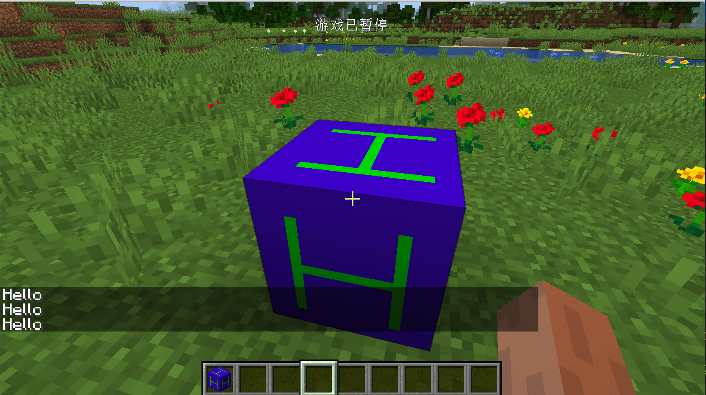
可以看见我们的方块在和我们打招呼呢。
开发小课堂
在很多时候，当函数要求传入的变量的类型是接口时，基本都已经有实现好的类可以使用，大家可以尝试查看这个接口的继承树来寻找可以使用的类。
方块实体内置的数据同步
在这节中，我们将学习方块实体中内置的数据同步功能。
还记得我们之前讲过的服务端和客户端自己的数据同步吗？幸运的是，TileEntity给我们内置了两组数据同步的方法，不幸的是这个两组方法只能实现从服务端到客户端的数据同步，而且只能同步少量的数据。
在这节中，我们讲学习制作一个每隔几秒中就会播放僵尸吼叫声的方块，我们先从方块开始;
ObsidianZombieBlock
public class ObsidianZombieBlock extends Block {
public ObsidianZombieBlock() {
super(Properties.create(Material.ROCK).hardnessAndResistance(5));
}
@Override
public boolean hasTileEntity(BlockState state) {
return true;
}
@Nullable
@Override
public TileEntity createTileEntity(BlockState state, IBlockReader world) {
return new ObsidianZombieTileEntity();
}
}
然后是ObsidianZombieTileEntity。
public class ObsidianZombieTileEntity extends TileEntity implements ITickableTileEntity {
private boolean flag = false;
private int MAX_TIME = 5 * 20;
private int timer = 0;
public ObsidianZombieTileEntity() {
super(TileEntityTypeRegistry.obsidianZombieTileentity.get());
}
@Override
public void tick() {
if (world.isRemote && flag) {
PlayerEntity player = world.getClosestPlayer(pos.getX(), pos.getY(), pos.getZ(), 10, false);
this.world.playSound(player, pos, SoundEvents.ENTITY_ZOMBIE_AMBIENT, SoundCategory.AMBIENT, 1.0f, 1.0f);
flag = false;
}
if (!world.isRemote) {
if (timer == MAX_TIME) {
flag = true;
world.notifyBlockUpdate(pos, getBlockState(), getBlockState(), Constants.BlockFlags.BLOCK_UPDATE);
flag = true;
timer = 0;
}
timer++;
}
}
@Nullable
@Override
public SUpdateTileEntityPacket getUpdatePacket() {
return new SUpdateTileEntityPacket(pos, 1, getUpdateTag());
}
@Override
public void onDataPacket(NetworkManager net, SUpdateTileEntityPacket pkt) {
handleUpdateTag(pkt.getNbtCompound());
}
@Override
public CompoundNBT getUpdateTag() {
CompoundNBT compoundNBT = super.getUpdateTag();
compoundNBT.putBoolean("flag", flag);
return compoundNBT;
}
@Override
public void handleUpdateTag(CompoundNBT tag) {
flag = tag.getBoolean("flag");
}
}
首先我们来讲解两组同步数据用的方法。
getUpdatePacketonDataPacket
这两个方法是在正常游戏过程中会被使用的数据同步方法，它们的名字可能会有些迷惑性，因为getUpdatePacket是服务端发送数据包用的方法，而onDataPacket才是客户端接受数据包的方法。
接下来是:
getUpdateTaghandleUpdateTag
这两个方法是在区块刚被载入时被调用的方法，之所以有这两个方法存在，是因为有些装饰性的方块实体并不需要经常性地同步数据，比如告示牌，只需要在区块被载入时同步一次就行。
为了让你的方块实体能在游戏被载入的时候能自动同步数据，你需要先实现getUpdateTag和handleUpdateTag，然后在getUpdatePacket和onDataPacket中调用它们即可。
如你你需要触发数据同步，你需要在服务端调用world.notifyBlockUpdate方法。
当然就和数据保存一样，这些方法默认的序列化和反序列化方式是NBT标签。
@Override
public CompoundNBT getUpdateTag() {
CompoundNBT compoundNBT = super.getUpdateTag();
compoundNBT.putBoolean("flag", flag);
return compoundNBT;
}
@Override
public void handleUpdateTag(CompoundNBT tag) {
flag = tag.getBoolean("flag");
}
可以看到，用NBT标签传输了数据。
@Override
public SUpdateTileEntityPacket getUpdatePacket() {
return new SUpdateTileEntityPacket(pos, 1, getUpdateTag());
}
@Override
public void onDataPacket(NetworkManager net, SUpdateTileEntityPacket pkt) {
handleUpdateTag(pkt.getNbtCompound());
}
在这里我们只是简单的调用了之前的两个方法而已，SUpdateTileEntityPacket的第二个参数的序列号值，大家可以随便填写。
然后就是我们的主要逻辑tick方法:
@Override
public void tick() {
if (world.isRemote && flag) {
PlayerEntity player = world.getClosestPlayer(pos.getX(), pos.getY(), pos.getZ(), 10, false);
this.world.playSound(player, pos, SoundEvents.ENTITY_ZOMBIE_AMBIENT, SoundCategory.AMBIENT, 1.0f, 1.0f);
flag = false;
}
if (!world.isRemote) {
if (timer == MAX_TIME) {
flag = true;
world.notifyBlockUpdate(pos, getBlockState(), getBlockState(), Constants.BlockFlags.BLOCK_UPDATE);
flag = true;
timer = 0;
}
timer++;
}
}
为了大家方便理解，我这里用了两个if语句将客户端和服务端的逻辑区分开来
首先是是客户端:
if (world.isRemote && flag) {
PlayerEntity player = world.getClosestPlayer(pos.getX(), pos.getY(), pos.getZ(), 10, false);
this.world.playSound(player, pos, SoundEvents.ENTITY_ZOMBIE_AMBIENT, SoundCategory.AMBIENT, 1.0f, 1.0f);
flag = false;
}
首先我们判断是否在客户端，并且flag的值是否为真（为真代表要播放声音），然后获取了最近的玩家，使用了this.world.playSound方法播放了声音，请注意，播放声音可以同时在客户端和服务端执行，如果你在服务端执行会自动发一个数据包到客户端，让客户端播放声音。
playSound的第一个和第二个变量很好懂，第三个变量是需要播放的声音，第三个变量是决定这个声音大小是受到哪一个声音控制分类控制的。
接下来是服务端:
if (!world.isRemote) {
if (timer == MAX_TIME) {
flag = true;
world.notifyBlockUpdate(pos, getBlockState(), getBlockState(), Constants.BlockFlags.BLOCK_UPDATE);
flag = true;
timer = 0;
}
timer++;
}
服务端和之前一样基本上就是一个计数器，唯一特殊的地方就是我们调用了 world.notifyBlockUpdate方法，因为我们不需要更新blockstate，所以第二和第三个参数保持相同就行，最后一个参数是需要什么等级的更新，Forge提供给我们了Constants类，里面有详细的说明。
然后就是添加材质和模型之类的事了，有兴趣的读者可以自己看源代码。
打开游戏放置完方块，等待一会你应该就能听见僵尸的吼叫声了。

特殊渲染
在这一节中，我们将来学习一些常见的特殊渲染。
IBakedModel(烘焙模型)
首先我们从IBakedModel开始讲起。在开始正式写代码之前，我们先要了解如何一个方块是如何渲染出来的
Minecraft本身会读取json和材质文件将其转换成IModel接口的实例，然后IModel进行了「Bake（烘焙）」处理，变成了IBakedModel，这个IBakedModel会被放入BlockRendererDispatcher中，当游戏需要时会直接从BlockRendererDispatcher取出IBakedModel进行渲染。至于什么是「Bake」，Bake基本上是对模型的材质进行光照计算等操作，让它变成可以直接被GPU渲染的东西。
在这节中我们将来研究如何为我们的方块自定义IBakedModel。这节我们将要制作一个「隐藏方块」，这个方块会自动的显示它下方方块的模型的材质（虽然有些Bug，但是为了演示这已经足够了）。
首先是方块ObsidianHiddenBlock：
public class ObsidianHiddenBlock extends Block {
public ObsidianHiddenBlock() {
super(Properties.create(Material.ROCK).hardnessAndResistance(5).notSolid());
}
}
内容非常的简单，相信大家都看得懂。
然后就是关键所在:ObsidianHiddenBlockModel:
public class ObsidianHiddenBlockModel implements IBakedModel {
IBakedModel defaultModel;
public static ModelProperty<BlockState> COPIED_BLOCK = new ModelProperty<>();
public ObsidianHiddenBlockModel(IBakedModel existingModel) {
defaultModel = existingModel;
}
@Nonnull
@Override
public List<BakedQuad> getQuads(@Nullable BlockState state, @Nullable Direction side, @Nonnull Random rand, @Nonnull IModelData extraData) {
IBakedModel renderModel = defaultModel;
if (extraData.hasProperty(COPIED_BLOCK)) {
BlockState copiedBlock = extraData.getData(COPIED_BLOCK);
if (copiedBlock != null) {
Minecraft mc = Minecraft.getInstance();
BlockRendererDispatcher blockRendererDispatcher = mc.getBlockRendererDispatcher();
renderModel = blockRendererDispatcher.getModelForState(copiedBlock);
}
}
return renderModel.getQuads(state, side, rand, extraData);
}
@Nonnull
@Override
public IModelData getModelData(@Nonnull ILightReader world, @Nonnull BlockPos pos, @Nonnull BlockState state, @Nonnull IModelData tileData) {
BlockState downBlockState = world.getBlockState(pos.down());
ModelDataMap modelDataMap = new ModelDataMap.Builder().withInitial(COPIED_BLOCK, null).build();
if (downBlockState.getBlock() == Blocks.AIR || downBlockState.getBlock() == BlockRegistry.obsidianHidden.get()) {
return modelDataMap;
}
modelDataMap.setData(COPIED_BLOCK, downBlockState);
return modelDataMap;
}
@Override
public List<BakedQuad> getQuads(@Nullable BlockState state, @Nullable Direction side, Random rand) {
throw new AssertionError("IBakedModel::getQuads should never be called, only IForgeBakedModel::getQuads");
}
@Override
public boolean isAmbientOcclusion() {
return defaultModel.isAmbientOcclusion();
}
@Override
public boolean isGui3d() {
return defaultModel.isGui3d();
}
@Override
public boolean func_230044_c_() {
return defaultModel.func_230044_c_();
}
@Override
public boolean isBuiltInRenderer() {
return defaultModel.isBuiltInRenderer();
}
@Override
public TextureAtlasSprite getParticleTexture() {
return defaultModel.getParticleTexture();
}
@Override
public ItemOverrideList getOverrides() {
return defaultModel.getOverrides();
}
}
首先是构造函数:
public ObsidianHiddenBlockModel(IBakedModel existingModel) {
defaultModel = existingModel;
}
可以看到，这部分的代码非常的长，但是其实没有你想象的那么复杂，我们一一来讲解。
可以看到这个构造函数传入了一个IBakedModel，这个传入的IBakedModel就是我们方块默认的模型，因为我们希望我们的方法当放置在半空中时，可以显示默认的模型，所以我们需要保留一份默认的模型。
然后就是最后面的六个方法，作用如下。
| 函数名 | 作用 |
|---|---|
isAmbientOcclusion | 控制是否开启环境光遮蔽 |
isGui3d | 控制掉落物是否是3D的 |
func_230044_c_() | 暂不明，应该和物品的渲染光有关 |
isBuiltInRenderer | 是否使用内置的渲染，返回Ture会使用ISTR渲染 |
isBuiltInRenderer | 粒子效果材质 |
getOverrides | 获取模型的复写列表 |
在这里我们直接调用了默认模型的相关方法，就不需要自己设置了。
接下了我们来讲解最为重要的两个方法getQuads和getModelData，请注意这里面有两个同名的getQuads方法，但是参数值不同，其中有3个参数的getQuads，是必须要实现的，但是我们不会调用它，因为它没法传入来提供渲染，所以我们直接写了一个异常，来告知我们这个方法被错误的调用。
其中getQuads和getModelData的关系和作用是，getQuads是IBakedModel的核心方法，它将返回一堆Quads，正如Quad这个词就如同它的字面意义那样，一个由四条边组成的形状。如果你对建模有所了解，你应该知道，任何和3D图形其实都是可以用三角形拼成的，在Minecraft里，任何的模型都是用Quad拼成的。对于一个普通的方块来说，它需要6个Quads，对于一些有着特殊模型的方块，需要的Quad数会更多。
当Minecraft开始渲染IBakedModel里，它就会调用这个方法获取Quads，然后渲染这些Quads。
接下来是getModelData方法，它的作用是给getQuads方法传入额外的数据，getQuads方法有一个IModelData extraData参数，这里的extraData就是通过getModelData传入的。IModelData的数值也是以「键值对」对信息储存的。
public static ModelProperty<BlockState> COPIED_BLOCK = new ModelProperty<>();
COPIED_BLOCK就是我们声明的一个「键」，可以看到他的类型是ModelProperty<BlockState>，这意味着，相对应「键值对」里「值」对类型是BlockState。
然后我们来看getModelData方法的具体内容:
@Nonnull
@Override
public IModelData getModelData(@Nonnull ILightReader world, @Nonnull BlockPos pos, @Nonnull BlockState state, @Nonnull IModelData tileData) {
BlockState downBlockState = world.getBlockState(pos.down());
ModelDataMap modelDataMap = new ModelDataMap.Builder().withInitial(COPIED_BLOCK, null).build();
if (downBlockState.getBlock() == Blocks.AIR || downBlockState.getBlock() == BlockRegistry.obsidianHidden.get()) {
return modelDataMap;
}
modelDataMap.setData(COPIED_BLOCK, downBlockState);
return modelDataMap;
}
BlockState downBlockState = world.getBlockState(pos.down());
首先我们获取了「隐藏方块」下方方块的BlockState。
ModelDataMap modelDataMap = new ModelDataMap.Builder().withInitial(COPIED_BLOCK, null).build()
ModelDataMap是IModelData接口的唯二两个实现类中的一个，我们这里创建了一个键值对，并且通过withInitial设置了初始值：「键：COPIED_BLOCK，值：null」。
if (downBlockState.getBlock() == Blocks.AIR || downBlockState.getBlock() == BlockRegistry.obsidianHidden.get()) {
return modelDataMap;
}
然后我们判断这个BlockState是不是空气，以及是不是又是一个相同的「隐藏方块」，如是就直接返回ModelDataMap。
如果不是
modelDataMap.setData(COPIED_BLOCK, downBlockState);
通过调用setData方法设置了具体的「值」，然后返回。
怎么样这个逻辑不是很难理解吧。
接下去就是核心方法getQuads:
@Nonnull
@Override
public List<BakedQuad> getQuads(@Nullable BlockState state, @Nullable Direction side, @Nonnull Random rand, @Nonnull IModelData extraData) {
IBakedModel renderModel = defaultModel;
if (extraData.hasProperty(COPIED_BLOCK)) {
BlockState copiedBlock = extraData.getData(COPIED_BLOCK);
if (copiedBlock != null) {
Minecraft mc = Minecraft.getInstance();
BlockRendererDispatcher blockRendererDispatcher = mc.getBlockRendererDispatcher();
renderModel = blockRendererDispatcher.getModelForState(copiedBlock);
}
}
return renderModel.getQuads(state, side, rand, extraData);
}
这里的逻辑其实也非常简单。
IBakedModel renderModel = defaultModel;
首先设置了默认的渲染模型。
if (extraData.hasProperty(COPIED_BLOCK))
然后判断传入的数据有没有COPIED_BLOCK这个键。
BlockState copiedBlock = extraData.getData(COPIED_BLOCK);
获取COPIED_BLOCK这个键，相对应的值。
if (copiedBlock != null)
如果值不为null。
Minecraft mc = Minecraft.getInstance();
BlockRendererDispatcher blockRendererDispatcher = mc.getBlockRendererDispatcher();
renderModel = blockRendererDispatcher.getModelForState(copiedBlock);
就从Minecraft的getBlockRendererDispatcher，取出对应BlockState的模型，放入renderModel中。
return renderModel.getQuads(state, side, rand, extraData);
最后向下调用renderModel进行渲染，因为调用的IBakedModel是Minecraft实现的，所以我们不必去思考到底是怎么渲染的，有兴趣的同学可以自行研究。
以上如此，我们自定义的IBakedMode已经创建完毕。
Minecraft 在默认情况下会给方块自动创建一个IBakeModel，我们需要替换自动创建的IBakeModel，幸运的是Forge提供给我们了一个事件来实现这个功能。
ModBusEventHandler.java:
@Mod.EventBusSubscriber(bus = Mod.EventBusSubscriber.Bus.MOD,value = Dist.CLIENT)
public class ModBusEventHandler {
@SubscribeEvent
public static void onModelBaked(ModelBakeEvent event) {
for (BlockState blockstate : BlockRegistry.obsidianHidden.get().getStateContainer().getValidStates()) {
ModelResourceLocation modelResourceLocation = BlockModelShapes.getModelLocation(blockstate);
IBakedModel existingModel = event.getModelRegistry().get(modelResourceLocation);
if (existingModel == null) {
throw new RuntimeException("Did not find Obsidian Hidden in registry");
} else if (existingModel instanceof ObsidianHiddenBlockModel) {
throw new RuntimeException("Tried to replaceObsidian Hidden twice");
} else {
ObsidianHiddenBlockModel obsidianHiddenBlockModel = new ObsidianHiddenBlockModel(existingModel);
event.getModelRegistry().put(modelResourceLocation, obsidianHiddenBlockModel);
}
}
}
}
请注意替换IBakedModel是在游戏启动过程替换的，所以我们这里使用的是Mod.EventBusSubscriber.Bus.MOD，还有请注意，我们同样不希望它在物理服务器上加载，所以加上了value = Dist.CLIENT来确保他只在物理客户端上加载。
@SubscribeEvent
public static void onModelBaked(ModelBakeEvent event)
我们监听了ModelBakeEvent事件。
接下去的逻辑基本上就是获取我们方块对应的所有State，因为每一个不同的方块状态都可能对应着一个不同的模型（虽然我们的方块没有方块状态，但是这个还是要做的）。然后通过event.getModelRegistry().get方法从方块状态中获取默认的IBakedModel，创建了一个我们自己的ObsidianHiddenBlockModel，然后用event.getModelRegistry().put替换了进去。
接下了就是常规的注册方块和物品了。
另外我们的方块的状态文件如下:
{
"variants": {
"": { "model": "neutrino:block/obsidian_hidden" }
}
}
可以看到并没有额外的方块状态，所以上面的循环只会运行一次。
打开游戏，你就可以看到我们创建的「隐藏方块」了。

在这张图片里上面的方块都是同一种方块。
编程小课堂
在Forge里，所以的事件都是Event类的子类，所以你可通过查看Event类继承树的方式查看到Forge提供的所有事件。
TileEntityRenderer(方块实体渲染器)
在这节中，我们将来学习一个非常重要的渲染方式TileEntityRenderer简称TER。在开始之前我们首先需要知道TER的作用是什么。让我回想一下原版中的箱子、附魔台。它们都有特殊的动画，而TER的作用就是让你也可以实现这些动画。
首先我们从方块开始
public class ObsidianTERBlock extends Block {
private static VoxelShape shape;
static {
VoxelShape base = Block.makeCuboidShape(0, 0, 0, 16, 1, 16);
VoxelShape column1 = Block.makeCuboidShape(0, 1, 0, 1, 15, 1);
VoxelShape column2 = Block.makeCuboidShape(15, 1, 0, 16, 15, 1);
VoxelShape column3 = Block.makeCuboidShape(0, 1, 15, 1, 15, 16);
VoxelShape column4 = Block.makeCuboidShape(15, 1, 15, 16, 15, 16);
VoxelShape top = Block.makeCuboidShape(0, 15, 0, 16, 16, 16);
shape = VoxelShapes.or(base, column1, column2, column3, column4, top);
}
public ObsidianTERBlock() {
super(Properties.create(Material.ROCK).notSolid().hardnessAndResistance(5));
}
@Override
public VoxelShape getShape(BlockState state, IBlockReader worldIn, BlockPos pos, ISelectionContext context) {
return shape;
}
@Override
public boolean hasTileEntity(BlockState state) {
return true;
}
@Nullable
@Override
public TileEntity createTileEntity(BlockState state, IBlockReader world) {
return new ObsidianTERTileEntity();
}
}
方块的内容非常简单，基本上就是抄了我们之前写好的黑曜石框架，然后给它添加了一个方块实体。
接下来我们来看方块实体的具体内容。
public class ObsidianTERTileEntity extends TileEntity {
public ObsidianTERTileEntity() {
super(TileEntityTypeRegistry.obsidianTERTileEntity.get());
}
}
因为我们用不到任何东西，所以这个方块实体是空的，仅仅用来和我们之后创建的TileEntityRenderer作关联。
接下来就是最为关键的TER部分了
public class ObsidianTER extends TileEntityRenderer<ObsidianTERTileEntity> {
public ObsidianTER(TileEntityRendererDispatcher rendererDispatcherIn) {
super(rendererDispatcherIn);
}
@Override
public void render(ObsidianTERTileEntity tileEntityIn, float partialTicks, MatrixStack matrixStackIn, IRenderTypeBuffer bufferIn, int combinedLightIn, int combinedOverlayIn) {
matrixStackIn.push();
matrixStackIn.translate(1, 0, 0);
BlockRendererDispatcher blockRenderer = Minecraft.getInstance().getBlockRendererDispatcher();
BlockState state = Blocks.CHEST.getDefaultState();
blockRenderer.renderBlock(state, matrixStackIn, bufferIn, combinedLightIn, combinedOverlayIn, EmptyModelData.INSTANCE);
matrixStackIn.pop();
matrixStackIn.push();
matrixStackIn.translate(0, 1, 0);
ItemRenderer itemRenderer = Minecraft.getInstance().getItemRenderer();
ItemStack stack = new ItemStack(Items.DIAMOND);
IBakedModel ibakedmodel = itemRenderer.getItemModelWithOverrides(stack, tileEntityIn.getWorld(), null);
itemRenderer.renderItem(stack, ItemCameraTransforms.TransformType.FIXED, true, matrixStackIn, bufferIn, combinedLightIn, combinedOverlayIn, ibakedmodel);
matrixStackIn.pop();
}
}
可以看到我们的ObsidianTER直接继承了TileEntityRenderer，其中泛型填的是你之前创建好的方块实体，
而其中的render方法，就是你的渲染方法。
因为这一块涉及到很多的计算机图形学相关的知识，这里我就不演示如何自定义渲染了，有兴趣的读者可以查看Mcjty做的相关的教程和代码。
这里我们只演示如何额外的渲染出物品和方块。
首先你应该用 matrixStackIn.push()和matrixStackIn.pop()包裹起你的渲染代码。因为你对渲染做的所有移动、旋转和放大操作都会储存在matrixStackIn中，而push和pop的作用就是保存和恢复之前渲染的状态。如果你不进行这些操作有可能会污染其他的渲染器。
matrixStackIn.translate(1, 0, 0);
这个设置了你要渲染对象的移动
与此相对应的还有
matrixStackIn.rotate();
matrixStackIn.scale();
分别用于旋转和缩放。
BlockRendererDispatcher blockRenderer = Minecraft.getInstance().getBlockRendererDispatcher();
ItemRenderer itemRenderer = Minecraft.getInstance().getItemRenderer();
这两句都是用来获取物品和方块的渲染器。
BlockState state = Blocks.CHEST.getDefaultState();
ItemStack stack = new ItemStack(Items.DIAMOND);
这两个变量的作用是用来指定你要渲染的方块和物品，我们这里将要渲染箱子的方块模型和钻石的物品模型。
IBakedModel ibakedmodel = itemRenderer.getItemModelWithOverrides(stack, tileEntityIn.getWorld(), null);
这句的作用是获取能物品的IBakedModel，之后用于渲染。
blockRenderer.renderBlock(state, matrixStackIn, bufferIn, combinedLightIn, combinedOverlayIn, EmptyModelData.INSTANCE);
itemRenderer.renderItem(stack, ItemCameraTransforms.TransformType.FIXED, true, matrixStackIn, bufferIn, combinedLightIn, combinedOverlayIn, ibakedmodel);
在这里就是渲染指令，我们可以通过这两句话调用物品和方块默认的渲染方法。具体怎么渲染我们不用关心。
然后我们需要绑定我们的TER
@Mod.EventBusSubscriber(bus = Mod.EventBusSubscriber.Bus.MOD)
public class ClientEventHandler {
@SubscribeEvent
public static void onClientEvent(FMLClientSetupEvent event) {
ClientRegistry.bindTileEntityRenderer(TileEntityTypeRegistry.obsidianTERTileEntity.get(), (tileEntityRendererDispatcher -> {
return new ObsidianTER(tileEntityRendererDispatcher);
}));
}
}
可以看见我们在Mod总线中的FMLClientSetupEvent（客户端配置）事件中，调用ClientRegistry.bindTileEntityRenderer方法把我们的TER绑定到我们的方块实体上。
当然别忘了注册你的方块实体
public static RegistryObject<TileEntityType<ObsidianTERTileEntity>> obsidianTERTileEntity = TILE_ENTITY_TYPE_DEFERRED_REGISTER.register("obsidian_ter_tileentity", () -> {
return TileEntityType.Builder.create(() -> {
return new ObsidianTERTileEntity();
}, BlockRegistry.obsidianTERBlock.get()).build(null);
});
打开游戏放下方块，你应该就能看见一个特殊的方块了。

ItemStackTileEntityRenderer(物品特殊渲染)
这一节中，我们将要来学习Item的特殊渲染：ItemStackTileEntityRenderer简称ISTER，它的作用和TileEntityRenderer非常类似，在以前ItemStackTileEntityRenderer甚至就是靠TileEntityRenderer实现的。
利用ISTER你可以实现一些非常酷的渲染效果，举例来说Create（机械动力）中的扳手，它会自动旋转的齿轮就是利用ISTER实现的。
首先我们先来看物品的代码
public class ObsidianWrench extends Item {
public ObsidianWrench() {
super(new Properties().group(ModGroup.itemGroup).setISTER(() -> {
return () -> {
return new ObsidianWrenchItemStackTileEntityRenderer();
};
}));
}
}
可以看到物品的代码其实很简单，这里唯一特别的地方就是我们调用了setISTER方法，为我们的物品绑定了一个setISTER。但是这样绑定还不能直接用，我还得替换物品原本的IBakedModel，并在其中启用ISTER。
接下来我们来看替换物品IBakedModel的代码
@Mod.EventBusSubscriber(bus = Mod.EventBusSubscriber.Bus.MOD, value = Dist.CLIENT)
public class ModBusEventHandler {
@SubscribeEvent
public static void onModelBaked(ModelBakeEvent event) {
Map<ResourceLocation, IBakedModel> modelRegistry = event.getModelRegistry();
ModelResourceLocation location = new ModelResourceLocation(ItemRegistry.obsidianWrench.get().getRegistryName(), "inventory");
IBakedModel existingModel = modelRegistry.get(location);
if (existingModel == null) {
throw new RuntimeException("Did not find Obsidian Hidden in registry");
} else if (existingModel instanceof ObsidianWrenchBakedModel) {
throw new RuntimeException("Tried to replaceObsidian Hidden twice");
} else {
ObsidianWrenchBakedModel obsidianWrenchBakedModel = new ObsidianWrenchBakedModel(existingModel);
event.getModelRegistry().put(location, obsidianWrenchBakedModel);
}
}
}
可以看到，我们同样监听了ModelBakeEvent，然后通过modelRegistry.get获取了默认的IBakedModel并将它传入我们新的IBakedModel中，然后调用event.getModelRegistry().put替换了原版的IBakedModel，这里也别忘了value = Dist.CLIENT。
接下来看我们的IBakedModel：
public class ObsidianWrenchBakedModel implements IBakedModel {
private IBakedModel existingModel;
public ObsidianWrenchBakedModel(IBakedModel existingModel) {
this.existingModel = existingModel;
}
@Nonnull
@Override
public List<BakedQuad> getQuads(@Nullable BlockState state, @Nullable Direction side, @Nonnull Random rand, @Nonnull IModelData extraData) {
throw new AssertionError("IForgeBakedModel::getQuads should never be called, only IForgeBakedModel::getQuads");
}
@Override
public List<BakedQuad> getQuads(@Nullable BlockState state, @Nullable Direction side, Random rand) {
return this.existingModel.getQuads(state, side, rand);
}
@Override
public boolean isAmbientOcclusion() {
return this.existingModel.isAmbientOcclusion();
}
@Override
public boolean isGui3d() {
return this.existingModel.isGui3d();
}
@Override
public boolean func_230044_c_() {
return this.existingModel.func_230044_c_();
}
@Override
public boolean isBuiltInRenderer() {
return true;
}
@Override
public TextureAtlasSprite getParticleTexture() {
return this.existingModel.getParticleTexture();
}
@Override
public ItemOverrideList getOverrides() {
return this.existingModel.getOverrides();
}
@Override
public IBakedModel handlePerspective(ItemCameraTransforms.TransformType cameraTransformType, MatrixStack mat) {
if (cameraTransformType == ItemCameraTransforms.TransformType.FIRST_PERSON_RIGHT_HAND || cameraTransformType == ItemCameraTransforms.TransformType.FIRST_PERSON_LEFT_HAND) {
return this;
}
return this.existingModel.handlePerspective(cameraTransformType, mat);
}
}
可以看到，这里和之前创建的IBakedModel并无太大差别。同样是保存了一个原本的IBakedModel。
这里我们来说说他们区别：
第一，对于物品的IBakedModel来说，只会调用IBakedModel#getQuads而不会调用IForgeBakedModel::getQuads，你可以和之前方块的IBakedModel做对比，可以发现刚好是相反的。
第二，对于物品，你可以通过 handlePerspective这个方块来选择不同TransformType下的IBakedModel，具体的TransformType请自行翻阅模型相关的Wiki，这里我们希望在第一人称的视角下用ISTER渲染我们的模型，所以在if语句中返回了this，注意只有当你这里返回了this的TransformType，才会启用ISTER渲染。
第三，你可以在getOverrides处理物品json文件中的Override，什么是Overrides请执行翻阅wiki。
第四，也是最重要的，如果你希望你的IBakedModel被ISTER渲染，你必须在isBuiltInRenderer返回true，如果你没有给你的物品中调用setISTER指定自定义的ISTER，默认会使用ItemStackTileEntityRenderer.instance渲染。
接下就是最为关键的部分，我们的ISTER
public class ObsidianWrenchItemStackTileEntityRenderer extends ItemStackTileEntityRenderer {
private int degree = 0;
@Override
public void render(ItemStack itemStackIn, MatrixStack matrixStackIn, IRenderTypeBuffer bufferIn, int combinedLightIn, int combinedOverlayIn) {
if (degree == 360) {
degree = 0;
}
degree++;
ItemRenderer itemRenderer = Minecraft.getInstance().getItemRenderer();
IBakedModel ibakedmodel = itemRenderer.getItemModelWithOverrides(itemStackIn, null, null);
matrixStackIn.push();
matrixStackIn.translate(0.5F, 0.5F, 0.5F);
float xOffset = -1 / 32f;
float zOffset = 0;
matrixStackIn.translate(-xOffset, 0, -zOffset);
matrixStackIn.rotate(Vector3f.YP.rotationDegrees(degree));
matrixStackIn.translate(xOffset, 0, zOffset);
itemRenderer.renderItem(itemStackIn, ItemCameraTransforms.TransformType.NONE, false, matrixStackIn, bufferIn, combinedLightIn, combinedOverlayIn, ibakedmodel.getBakedModel());
matrixStackIn.pop();
}
}
可以看到我们的ISTER类直接继承了ItemStackTileEntityRenderer，ItemStackTileEntityRenderer只有一个方法，即render方法，这里的render方法和之前我们学习过的TER里的render方法作用类似。你可以在这里渲染，你想要渲染的东西。
我只在这里渲染了，我们的物品模型然后在调整完位置之后。让模型旋转起来。
float xOffset = -1 / 32f;
float zOffset = 0;
matrixStackIn.translate(-xOffset, 0, -zOffset);
matrixStackIn.rotate(Vector3f.YP.rotationDegrees(degree));
matrixStackIn.translate(xOffset, 0, zOffset);
这段就是让模型能按其中轴线旋转的代码，来源是Create Mod 的WrenchItemRenderer。
因为render每一帧都会被调用一次。
if (degree == 360) {
degree = 0;
}
degree++;
所以你可以利用这样写出平滑的旋转动画。
到此，我们的物品特殊渲染就完成了。
打开游戏看看，你应该就能看到一个会自动旋转的物品了。
事件系统
在开始我们接下来的教程之前，我们得先讲讲事件系统。在之前的章节中，我一直用DeferredRegister系统掩盖了直接的事件系统，可惜的是这已经无法再隐藏下去了，在这一节中，我们将学习事件系统，为了读者方便理解，如果你已经忘了总线，事件和事件处理器是什么的话，请先翻阅之前的内容。
首先要说明的是这个事件系统并不是Minecraft自带的，这个事件系统是Forge实现的。
你可以用两种方式来使用事件系统，一种是实例方式，一种是静态的方式。
public class MyForgeEventHandler {
@SubscribeEvent
public void pickupItem(EntityItemPickupEvent event) {
System.out.println("Item picked up!");
}
}
我们先从实例的方法开始说起。可以看到这里最为特殊的就是@SubscribeEvent注解，这个注解的作用就是标记下方的pickupItem 方法是一个事件处理器，至于它具体监听的事件是由它的参数类型决定的，在这里它的参数类型是EntityItemPickupEvent，说明它监听的是实体捡起物品这个事件。
当然，对于实例方式的事件处理这样还不够，我们还得手动在某个地方实例化它并把它注入到事件总线里，我们之前说过Minecraft里有两条事件总线「Forge总线」和「Mod总线」，Mod总线主要负责游戏的生命周期事件，也就是初始化过程的事件，而Forge总线负责的就是除了生命周期事件外的所有事件。你可以用MinecraftForge.EVENT_BUS.register()方法将你的事件实例注册到Forge总线中，也可用FMLJavaModLoadingContext.get().getModEventBus().register()方法将其注册到Mod总线中，一般情况下你应该在你的Mod主类的初始化方法里注册这些事件。
在我们的例子里就是如下:
MinecraftForge.EVENT_BUS.register(new MyForgeEventHandler());
当然所有的事件处理器都要手动注册非常的麻烦，Forge同样提供了一个静态的注册事件的方法。内容如下:
@Mod.EventBusSubscriber()
public class MyStaticClientOnlyEventHandler {
@SubscribeEvent
public static void drawLast(RenderWorldLastEvent event) {
System.out.println("Drawing!");
}
}
可以看到相比之前的代码这里有两点不同，首先多了一个@Mod.EventBusSubscriber()注解，这个注解就是用来标注这个类里面的所有打了 @SubscribeEvent静态方法都是事件处理器，这个注解里有好几个参数，其中最为常用的就是用来指定你所用注入的总线是什么，在默认情况下下面的事件处理注入是Forge总线，你可以用@Mod.EventBusSubscriber(bus = Mod.EventBusSubscriber.Bus.MOD)来指定你要注入到Mod总线中。当然这里的参数不止一个，大家可以自行查看@Mod.EventBusSubscriber的具体内容，关于可以使用的变量都要详细的注释。
这里第二点不同就是我们的事件处理函数也变成了静态的，这是在你还不熟悉事件系统使用时非常容易出错的地方，请务必注意。
作为我个人的偏好，我更喜欢后一种静态的事件处理方式，之后的教程也会使用这个方式。
当然事件系统还有很多功能，比如取消，设置结果以及设置优先级，限于篇幅大家可以自行阅读Forge的文档
自定义网络包
在这节中我们将要来学习如何自定义数据包。在之前的内容中我们已经讲过了如何利用Minecraft原版内置的功能来实现数据的同步，但是这些功能或多或少都有限制。在某些时候我们不得不自己来解决数据同步的问题，在这时我们就得使用自定义数据包了。幸运的是Forge已经提供了一个类，让我们能够简单而且方便地自定义数据包，这个类就是SimpleChannel，我们将学习如何使用它。
这一节的内容可能有些无聊，因为我们做出的物品并不能在游戏中产生实际的效果，但是这不代表的这节的内容不重要，让我们开始吧。
首先我们讲一下发包的过程，具体过程如下:
构建数据包=>序列化成字节流 ====通过本地、局域网传输或者因特网传输===> 反序列化成实例 => 实现操作
在这个过程中，前两项是在你要发送包的端执行的，后两项是在你要接受包的端执行的。
无论你是想从客户端往服务端发包，还是从服务端往客户端发包，你要做的第一件事就是——构建数据包，这个数据包就是你要发送的具体消息。接下来是序列化成字节流，因为在网络中所有的数据都是以字节流的形式传输的，你的数据包也不例外，而又因为数据包的内容是你自己定义的，你得自己实现序列化操作。
接下来数据流已经传输到了接受包的一端，你在接受时，接收的同样也是字节流，你需要从字节流中获取数据并恢复数据，重建你的数据包。让你的数据包恢复成功，接下来你就可以利用这些数据来执行操作了。
在Mod开发里，所有的数据包都是通过SimpleChannel管理的，正如这个名字暗示的那样，我们构建的数据包将通过一个个自定义的「Channle（频道）」传输。
接下来我们来创建数据包Networking:
package com.tutorial.neutrino.network;
import net.minecraft.util.ResourceLocation;
import net.minecraftforge.fml.network.NetworkRegistry;
import net.minecraftforge.fml.network.simple.SimpleChannel;
public class Networking {
public static SimpleChannel INSTANCE;
public static final String VERSION = "1.0";
private static int ID = 0;
public static int nextID() {
return ID++;
}
public static void registerMessage() {
INSTANCE = NetworkRegistry.newSimpleChannel(
new ResourceLocation("neutrino", "first_networking"),
() -> {
return VERSION;
},
(version) -> {
return version.equals(VERSION);
},
(version) -> {
return version.equals(VERSION);
});
INSTANCE.registerMessage(
nextID(),
SendPack.class,
(pack, buffer) -> {
pack.toBytes(buffer);
},
(buffer) -> {
return new SendPack(buffer);
},
(pack, ctx) -> {
pack.handler(ctx);
}
);
}
}
INSTANCE = NetworkRegistry.newSimpleChannel(
new ResourceLocation("neutrino", "first_networking"),
() -> {
return VERSION;
},
(version) -> {
return version.equals(VERSION);
},
(version) -> {
return version.equals(VERSION);
});
首先我们创建了一个SimpleChannel的实例，这个实例就是我们之后发包时需要操作的对象。
他有如下几个参数，第一个参数ResourceLocation是这个SimpleChannle的唯一标识符，因为一个mod里可以有许多个传送数据用的SimplieChannle，所以需要这个标识符。第二个参数是个匿名函数，返回值是数据包的版本，第三、四个参数是用来控制客户端和服务端可以接收的版本号的，这里的version就是具体的版本号，我们在这里判断是否和当前的版本号相同。如上我们的频道就已经构建完成了。
接下来我们来注册数据包。
INSTANCE.registerMessage(
nextID(),
SendPack.class,
(pack, buffer) -> {
pack.toBytes(buffer);
},
(buffer) -> {
return new SendPack(buffer);
},
(pack,ctx) ->{
pack.handler(ctx);
}
);
这个注册方法有5个参数，我们一一来说明，第一个参数是数据包的序号，这个数据包序号不能重复，所以我们写了一个自增的函数来提供序号。第二个是一个类，这个类就是我们要自定义数据包的类，第三个参数是用来让我们序列化（把数据包实例转换成字节流）我们的数据包，这里我们不需要返回任何值，其中的pack参数就是我们第二个参数中提供的类的一个实例。第四个参数是用来反序列化数据包的（从字节流构建数据包实例），这里我们直接调用了一个特殊的构造方法，然后返回了实例。最后一个参数是用来当接受到数据之后进行一系列操作的，这里的ctx是用来进行线程安全操作用的，至于是什么我们之后再讲。
当然像上面那样写实在过于麻烦，其实你可以省略成下面的形式。
public class Networking {
public static SimpleChannel INSTANCE;
private static int ID = 0;
public static int nextID() {
return ID++;
}
public static void registerMessage() {
INSTANCE = NetworkRegistry.newSimpleChannel(
new ResourceLocation("neutrino" + ":first_networking"),
() -> "1.0",
(s) -> true,
(s) -> true
);
INSTANCE.registerMessage(
nextID(),
SendPack.class,
SendPack::toBytes,
SendPack::new,
SendPack::handler
);
}
}
但是为了读者的理解方便，我还是保留上面的形式。
接下来就是我们自定义的数据包了SendPack.java:
public class Networking {
public static SimpleChannel INSTANCE;
public static final String VERSION = "1.0";
private static int ID = 0;
public static int nextID() {
return ID++;
}
public static void registerMessage() {
INSTANCE = NetworkRegistry.newSimpleChannel(
new ResourceLocation("neutrino", "first_networking"),
() -> VERSION,
(version) -> version.equals(VERSION),
(version) -> version.equals(VERSION));
INSTANCE.registerMessage(
nextID(),
SendPack.class,
SendPack::toBytes,
SendPack::new,
SendPack::handler
);
}
}
首先toBytes方法和SendPack(PacketBuffer buffer)构造方法刚好是一对相反的方法，它们的作用我们之前已经提及，这里就不加赘述了。值得一说的是PacketBuffer下面提供了很多非常方便的方法来序列化基本类型，以及在有多个变量序列化时，你得保证这两个方法中调用这些变量的顺序是相同的。请注意查看一下你调用的方法是不是物理客户端独有的（也就是有没有加@OnlyIn(Dist.CLIENT)注释)。
然后就是handler方法，这个方法的作用就是在接收端接收到数据以后，如何使用这些数据。请注意，你必须把这里的执行操作放在ctx.get().enqueueWork这个方法内，以闭包的形式呈现。并且在执行完成后需要加上ctx.get().setPacketHandled(true);表示执行成功。之所以这么做，是因为接受网络数据处在一个独立的线程中，所以网络包的执行需要等待时机，在线程安全的情况下执行。在这里我们只是简单的创建了一个Logger然后调用这个Logger输出了内容。
最后还剩下的构造方法是是用来构建发送数据用的。
当然光创建了Channel和网络数据包还不够，我们在游戏启动时创建它。
CommonEventHandler.java:
@Mod.EventBusSubscriber(bus = Mod.EventBusSubscriber.Bus.MOD)
public class CommonEventHandler {
@SubscribeEvent
public static void onCommonSetup(FMLCommonSetupEvent event) {
Networking.registerMessage();
}
}
你需要在Mod总线中的FMLCommonSetupEvent这个生命周期方法中创建你的Channel。
接下来看一个实例，如何从客户端向服务端发送数据，以及从服务端向客户端发送数据。
ObsidianMessage:
public class ObsidianMessage extends Item {
public ObsidianMessage() {
super(new Properties().group(ModGroup.itemGroup));
}
@Override
public ActionResult<ItemStack> onItemRightClick(World worldIn, PlayerEntity playerIn, Hand handIn) {
if (worldIn.isRemote) {
Networking.INSTANCE.sendToServer(new SendPack("From the Client"));
}
if (!worldIn.isRemote) {
Networking.INSTANCE.send(
PacketDistributor.PLAYER.with(
() -> {
return (ServerPlayerEntity) playerIn;
}
),
new SendPack("From Server"));
}
return super.onItemRightClick(worldIn, playerIn, handIn);
}
}
可以看到这里重要的是onItemRightClick方法。
在这个方法里，主要分成了服务端和客户端两个逻辑。
在服务端逻辑里非常简单我们通过Networking.INSTANCE.sendToServer方法向服务端发送了数据，其中new SendPack("From the Client”)就是数据包的具体内容。
在服务端里稍微有些复杂，因为一个服务端有可能有多个客户端链接，所以你必须要明确你需要向哪一个客户端发送消息。
PacketDistributor.PLAYER.with(
() -> {
return (ServerPlayerEntity) playerIn;
}
)
作用正是这个，我们确定了要向右击了这个物品的玩家发送消息。PacketDistributor类下除了有PLAYER这个类型还有很多其他的发送数据的方式，大家可自行探索。
打开游戏，右击物品，你应该就能看见客户端和服务端接收到对方的消息了。

注：「Server Thread」是服务端，「Render Thread」是客户端。
编程小课堂
在任何开始接触一个你不熟悉的编程项目，你要做的第一件事永远是通读这个项目的文档（如果有的话），对于我们来说就是Forge的文档，介于读者可能看不懂英文文档，Forge文档也有中文翻译的，请自行搜索。
实体
从零构建一个实体和数据同步
在这节中，我们将从零构建出一个实体，并将学习实体是如何进行数据同步的。我们将以「飞剑」作为例子。首先我们得要知道构建出一个实体需要那些东西。
构建一个实体我们需要以下这些东西:
- 实体类，直接或者间接的继承
Entity类，这个类决定了实体的是如何工作的 - 渲染类，直接或者间接的继承
EntityRenderer<T extends Entity>，这个类决定了实体是如何渲染的。 - 模型类，直接或者间接的继承
EntityModel<T extends Entity>，这个类规定的实体的模型是什么。
因为我们要从零开始，所以自然也需要实现从零实现这些类。
我们先从最核心的实体类开始，创建名叫FlyingSwordEntity并继承Entity:
public class FlyingSwordEntity extends Entity {
private Logger logger = LogManager.getLogger();
private static final DataParameter<Integer> COUNTER = EntityDataManager.createKey(FlyingSwordEntity.class, DataSerializers.VARINT);
public FlyingSwordEntity(EntityType<?> entityTypeIn, World worldIn) {
super(entityTypeIn, worldIn);
}
@Override
protected void registerData() {
this.dataManager.register(COUNTER, 0);
}
@Override
protected void readAdditional(CompoundNBT compound) {
this.dataManager.set(COUNTER, compound.getInt("counter"));
}
@Override
protected void writeAdditional(CompoundNBT compound) {
compound.putInt("counter", this.dataManager.get(COUNTER));
}
@Override
public void tick() {
if (world.isRemote) {
logger.info(this.dataManager.get(COUNTER));
}
if (!world.isRemote) {
logger.info(this.dataManager.get(COUNTER));
this.dataManager.set(COUNTER, this.dataManager.get(COUNTER) + 1);
}
super.tick();
}
@Override
public IPacket<?> createSpawnPacket() {
return NetworkHooks.getEntitySpawningPacket(this);
}
}
可以看到这里并没有非常艰深的内容。首先我们从一个非常值得注意的地方说起。
@Override
public IPacket<?> createSpawnPacket() {
return NetworkHooks.getEntitySpawningPacket(this);
}
因为实体是在服务端创建以后再通知客户端创建，所以这里涉及到了发包操作，我们不能再这里复用Minecraft原版提供的方法，这里必须使用Forge提供的NetworkHooks.getEntitySpawningPacket(this);来在客户端创建实体。
接下去，就是和数据同步相关的内容。
private static final DataParameter<Integer> COUNTER = EntityDataManager.createKey(FlyingSwordEntity.class, DataSerializers.VARINT);
所有你想要同步的数据，都得像上面一样先声明好，请注意这里的变量类型必须是static的，你可以通过改变泛型的方式来修改你需要同步值的类型。然后调用EntityDataManager.createKey来创建这个需要同步的数据。这里有两个参数，第一个参数一般是填入你实体的类，第二个参数是控制了你的变量是如何序列化成字节流，对于Integer类型来说用DataSerializers.VARINT就行了，但是对于Float类型就需要特殊的序列化方式（这和浮点数的表示有关，这属于计算机科学基础知识），DataSerializers 下面已经帮我们写好了许多方便的实例，大家可以拿来用。
创建完成还不够，你还得注册它。
@Override
protected void registerData() {
this.dataManager.register(COUNTER, 0);
}
在这里我们将数据注册进了this.dataManager中，并且设置了初始值0。你所有需要同步的数据都需要注册进this.dataManager中。
@Override
public void tick() {
if (world.isRemote) {
logger.info(this.dataManager.get(COUNTER));
}
if (!world.isRemote) {
logger.info(this.dataManager.get(COUNTER));
this.dataManager.set(COUNTER, this.dataManager.get(COUNTER) + 1);
}
super.tick();
}
同样的，在实体的tick方法中我们在服务端更新了值，然后同时在客户端和服务端打印。注意实体是肯定实现了tick方法的。tick是实体最为重要的方法，没有之一。
接下来就是保持和恢复数据。
@Override
protected void readAdditional(CompoundNBT compound) {
this.dataManager.set(COUNTER, compound.getInt("counter"));
}
@Override
protected void writeAdditional(CompoundNBT compound) {
compound.putInt("counter", this.dataManager.get(COUNTER));
}
这就没什么好说的了，相信大家可以一眼看懂。
因为实体可能是Minecraft中最为复杂的对象了，与实体相关的内容非常多，希望读者能养成查看原版实体实现逻辑的习惯。
接下来我们来创建模型FlyingSwordModel，继承EntityModel:
public class FlyingSwordModel extends EntityModel<FlyingSwordEntity> {
private final ModelRenderer body;
public FlyingSwordModel() {
textureWidth = 128;
textureHeight = 128;
body = new ModelRenderer(this);
body.setRotationPoint(13.0F, 24.0F, -13.0F);
body.setTextureOffset(0, 50);
body.addBox(-1.1053F, -16.0F, -2.7368F, 4, 2, 6, 0.0F, false);
body.setTextureOffset(60, 40);
body.addBox(-3.1053F, -16.0F, -2.7368F, 2, 2, 8, 0.0F, false);
body.setTextureOffset(52, 50);
body.addBox(-5.1053F, -16.0F, 1.2632F, 2, 2, 6, 0.0F, false);
body.setTextureOffset(60, 0);
body.addBox(-7.1053F, -16.0F, 3.2632F, 2, 2, 12, 0.0F, false);
body.setTextureOffset(40, 40);
body.addBox(-5.1053F, -16.0F, 9.2632F, 2, 2, 8, 0.0F, false);
body.setTextureOffset(12, 58);
body.addBox(-3.1053F, -16.0F, 13.2632F, 2, 2, 4, 0.0F, false);
body.setTextureOffset(20, 40);
body.addBox(-9.1053F, -16.0F, 5.2632F, 2, 2, 8, 0.0F, false);
body.setTextureOffset(32, 0);
body.addBox(-11.1053F, -16.0F, 3.2632F, 2, 2, 12, 0.0F, false);
body.setTextureOffset(0, 0);
body.addBox(-13.1053F, -16.0F, 3.2632F, 2, 2, 14, 0.0F, false);
body.setTextureOffset(36, 50);
body.addBox(-15.1053F, -16.0F, 1.2632F, 2, 2, 6, 0.0F, false);
body.setTextureOffset(0, 58);
body.addBox(-17.1053F, -16.0F, 1.2632F, 2, 2, 4, 0.0F, false);
body.setTextureOffset(48, 28);
body.addBox(-15.1053F, -16.0F, 9.2632F, 2, 2, 10, 0.0F, false);
body.setTextureOffset(24, 28);
body.addBox(-17.1053F, -16.0F, 11.2632F, 2, 2, 10, 0.0F, false);
body.setTextureOffset(0, 28);
body.addBox(-19.1053F, -16.0F, 13.2632F, 2, 2, 10, 0.0F, false);
body.setTextureOffset(48, 16);
body.addBox(-21.1053F, -16.0F, 15.2632F, 2, 2, 10, 0.0F, false);
body.setTextureOffset(24, 16);
body.addBox(-23.1053F, -16.0F, 17.2632F, 2, 2, 10, 0.0F, false);
body.setTextureOffset(0, 16);
body.addBox(-25.1053F, -16.0F, 19.2632F, 2, 2, 10, 0.0F, false);
body.setTextureOffset(0, 40);
body.addBox(-27.1053F, -16.0F, 21.2632F, 2, 2, 8, 0.0F, false);
body.setTextureOffset(20, 50);
body.addBox(-29.1053F, -16.0F, 23.2632F, 2, 2, 6, 0.0F, false);
}
@Override
public void setRotationAngles(FlyingSwordEntity entityIn, float limbSwing, float limbSwingAmount, float ageInTicks, float netHeadYaw, float headPitch) {
}
@Override
public void render(MatrixStack matrixStackIn, IVertexBuilder bufferIn, int packedLightIn, int packedOverlayIn, float red, float green, float blue, float alpha) {
body.render(matrixStackIn, bufferIn, packedLightIn, packedOverlayIn);
}
}
这就是实体模型，在Minecraft所有的实体模型都是通过方块构成的，每一个实体模型可分成很多的「组」，每一个「组」都有一个属于自己的旋转点。之所以有旋转点，是为了实现类似生物行走时类似腿部运动的动画。
请注意这里类的泛型，请填入你实体的类名。
在计算机科学的传统中，我一般把三个方向的旋转称为:Yaw、Roll和Pitch。
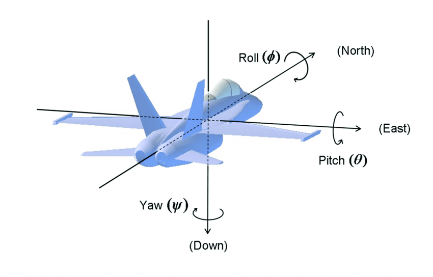
Minecraft中比较特别，Roll被叫做了替换成了limbSwing和limbSwingAmount两个变量（我不确定这是不是MCP翻译的问题）。
因为我们的模型不涉及到旋转问题，所以setRotationAngles留空。
接下来我们来正式来讲如何创建模型，因为内容过长，我们就节选一段。
textureWidth = 128;
textureHeight = 128;
body = new ModelRenderer(this);
body.setRotationPoint(13.0F, 24.0F, -13.0F);
body.setTextureOffset(0, 50);
body.addBox(-1.1053F, -16.0F, -2.7368F, 4, 2, 6, 0.0F, false);
首先我们线设定了材质的大小，然后创建了一个「组」，这里「组」的名字叫做body。接下来为组设置了旋转原点。
然后设置了模型中一个方块的UV位置（UV就是材质中的XY，之所以叫做UV也是计算机图形学的传统）。
接下来就是正式创建一个模型中的方块，前三个值是空间中的位置，然后三个值是方块的大小，最后两个，一个是用来控制透明度的，还有一个是用来控制是否镜像的。
最后我们来看看render方法，这个方法是用来控制模型的要怎么渲染的，一般情况下，你只需要在这里调用你创建的「组」自带的render方法就行。
这些就是模型文件的全部内容，我们接下来来看渲染文件，FlyingSwordRender，继承EntityRenderer:
public class FlyingSwordRender extends EntityRenderer<FlyingSwordEntity> {
private EntityModel<FlyingSwordEntity> flyingSwordModel;
public FlyingSwordRender(EntityRendererManager renderManager) {
super(renderManager);
flyingSwordModel = new FlyingSwordModel();
}
@Override
public ResourceLocation getEntityTexture(FlyingSwordEntity entity) {
return new ResourceLocation("neutrino", "textures/entity/flying_sword.png");
}
@Override
public void render(FlyingSwordEntity entityIn, float entityYaw, float partialTicks, MatrixStack matrixStackIn, IRenderTypeBuffer bufferIn, int packedLightIn) {
super.render(entityIn, entityYaw, partialTicks, matrixStackIn, bufferIn, packedLightIn);
matrixStackIn.push();
matrixStackIn.rotate(Vector3f.YN.rotationDegrees(45));
IVertexBuilder ivertexbuilder = bufferIn.getBuffer(this.flyingSwordModel.getRenderType(this.getEntityTexture(entityIn)));
this.flyingSwordModel.render(matrixStackIn, ivertexbuilder, packedLightIn, OverlayTexture.NO_OVERLAY, 1.0F, 1.0F, 1.0F, 1.0F);
matrixStackIn.pop();
}
}
这里有三个方法，首先是构建方法，我们在里面创建了我们模型的实例，这没什么好说的，非常简单。
接下来是,getEntityTexture方法。
@Override
public ResourceLocation getEntityTexture(FlyingSwordEntity entity) {
return new ResourceLocation("neutrino", "textures/entity/flying_sword.png");
}
我们在这里绑定了渲染模型需要的材质。
然后就是render方法:
@Override
public void render(FlyingSwordEntity entityIn, float entityYaw, float partialTicks, MatrixStack matrixStackIn, IRenderTypeBuffer bufferIn, int packedLightIn) {
super.render(entityIn, entityYaw, partialTicks, matrixStackIn, bufferIn, packedLightIn);
matrixStackIn.push();
matrixStackIn.rotate(Vector3f.YN.rotationDegrees(45));
IVertexBuilder ivertexbuilder = bufferIn.getBuffer(this.flyingSwordModel.getRenderType(this.getEntityTexture(entityIn)));
this.flyingSwordModel.render(matrixStackIn, ivertexbuilder, packedLightIn, OverlayTexture.NO_OVERLAY, 1.0F, 1.0F, 1.0F, 1.0F);
matrixStackIn.pop();
}
首先我们调用了父类的渲染方法，注意这里必须得调用。
然后你的具体渲染方法应该要包括在 matrixStackIn.push()和matrixStackIn.pop()之间，之所以要这么做的原因是，关于模型的移动，渲染和放大的信息都会存放在matrixStackIn中，你必须要保存上一层调用所使用的matrixStackIn，然后在你的渲染结束时恢复它，不然可能会出现不可预料的渲染错误。
matrixStackIn.rotate(Vector3f.YN.rotationDegrees(45));
我们在这里将我们的模型旋转来45度。
IVertexBuilder ivertexbuilder = bufferIn.getBuffer(this.flyingSwordModel.getRenderType(this.getEntityTexture(entityIn)));
这句话是用来构建顶点用的，模型在渲染的过程中会被分解成一个个的顶点，这节顶点会构成最终的模型，所有渲染需要的数据都需要存放在这些顶点中。
this.flyingSwordModel.render(matrixStackIn, ivertexbuilder, packedLightIn, OverlayTexture.NO_OVERLAY, 1.0F, 1.0F, 1.0F, 1.0F);
最后我们调用了模型的render方法来渲染模型，这里的OverlayTexture下面有很多的类型，大家可以按需选用。
接下来我们需要注册我们的实体:
public class EntityTypeRegistry {
public static final DeferredRegister<EntityType<?>> ENTITY_TYPES = new DeferredRegister<>(ForgeRegistries.ENTITIES, "neutrino");
public static RegistryObject<EntityType<FlyingSwordEntity>> flyingSwordEntity = ENTITY_TYPES.register("flying_sword", () -> {
return EntityType.Builder.create((EntityType<FlyingSwordEntity> entityType, World world) -> {
return new FlyingSwordEntity(entityType, world);
}, EntityClassification.MISC).size(3, 0.5F).build("flying_sword");
});
}
size(3, 0.5F)，这里我们设置了的实体的碰撞箱，请注意实体的碰撞箱的上下两面永远是一个正方形，这也就是为什么只有两个参数的原因。
同样的，这里的注册方式和方块实体基本相同。同样别忘了在构建函数里将实体的注册器添加进入Mod总线中。
然后是注册我们实体的渲染。
@Mod.EventBusSubscriber(bus = Mod.EventBusSubscriber.Bus.MOD, value = Dist.CLIENT)
public class ClientEventHandler {
@SubscribeEvent
public static void onClientSetUpEvent(FMLClientSetupEvent event) {
RenderingRegistry.registerEntityRenderingHandler(EntityTypeRegistry.flyingSwordEntity.get(), (EntityRendererManager manager) -> {
return new FlyingSwordRender(manager);
});
}
}
这里应该也挺好理解的。也就不多说什么了，同样的别忘了value = Dist.CLIENT。
打开游戏使用:
/summon neutrino:flying_sword
召唤我们的实体，可以看见钻石剑已经成功的出现了。

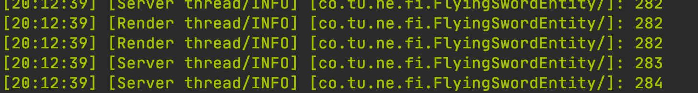
并且数据也已经同步了。
编程小课堂
MinecraftByExample项目的作者TheGreyGhost的博客里有非常多关于Minecraft渲染相关的内容，大家可以自行阅读。
如果你打不开这个博客，可能是由于你的国家封锁了这个网站，请自行寻找方法解决。
创建一个动物和AI
虽然上节中，我们从零创建了一个最简单的实体，但是其实你在写mod的大部分时候都不需要直继承Entity类，原版已经写好了非常多的类供你使用。在这节中我们将创建一个黑曜石动物，并且为这个动物添加一个AI。
这里就引出的第一个问题，什么是AI？AI代表着生物的特殊的行为，比如牛会被玩家用小麦吸引，怪物会攻击玩家，会在村庄里走来走去。这些都是通过AI实现的，请注意不是所有的实体都可以有AI，AI是MobEntity 的子类特有的行为。
首先我们来创建我们的实体类，ObsidianAnimal：
public class ObsidianAnimal extends AnimalEntity {
protected ObsidianAnimal(EntityType<? extends AnimalEntity> type, World worldIn) {
super(type, worldIn);
this.goalSelector.addGoal(0, new ObsidianGoal(this));
}
@Nullable
@Override
public AgeableEntity createChild(AgeableEntity ageable) {
return null;
}
}
可以看见内容非常简单，甚至比我们第一个实体的内容还要简单。我们先来看：
@Nullable
@Override
public AgeableEntity createChild(AgeableEntity ageable) {
return null;
}
这个方法是用来创建后代用的，因为我们的动物并并没有后代，所以这里就返回空即可。
然后我们来看构造方法。
protected ObsidianAnimal(EntityType<? extends AnimalEntity> type, World worldIn) {
super(type, worldIn);
this.goalSelector.addGoal(0, new ObsidianGoal(this));
}
在这里我们调用 this.goalSelector.addGoal方法为我们的实体添加了一个AI或者说Goal（目的）。
ObsidianGoal:
public class ObsidianGoal extends Goal {
private ObsidianAnimal obsidianAnimal;
public ObsidianGoal(ObsidianAnimal obsidianAnimal) {
this.obsidianAnimal = obsidianAnimal;
}
@Override
public boolean shouldExecute() {
World world = this.obsidianAnimal.getEntityWorld();
if (!world.isRemote) {
BlockPos blockPos = this.obsidianAnimal.getPosition();
PlayerEntity player = world.getClosestPlayer(blockPos.getX(), blockPos.getY(), blockPos.getZ(), 10, false);
if (player != null) {
player.addPotionEffect(new EffectInstance(Effects.HUNGER, 3 * 20, 3));
}
}
return true;
}
}
在默认情况下Goal的对构造方法是没有什么要求的，但是在大多数时候，你都应该在构造方法，将实体的实例传递进来并保存，这样会方便你实现实体的AI。shouldExecute是Goal最为重要的方法，这里就是调用你实体AI的地方，这里我们的AI非常简单，就是给靠近实体的玩家一个饥饿效果，实现原理和我们之前实现的会播放僵尸吼叫声的方块原理是一样的，这里就不加赘述了。
然后是模型ObsidianAnimalModel:
public class ObsidianAnimalModel extends EntityModel<ObsidianAnimal> {
private final ModelRenderer body;
public ObsidianAnimalModel() {
textureWidth = 64;
textureHeight = 64;
body = new ModelRenderer(this);
body.setRotationPoint(8.0F, 24.0F, -8.0F);
body.setTextureOffset(0, 0).addBox(-16.0F, -16.0F, 0.0F, 16.0F, 10.0F, 16.0F, 0.0F, false);
}
@Override
public void setRotationAngles(ObsidianAnimal entityIn, float limbSwing, float limbSwingAmount, float ageInTicks, float netHeadYaw, float headPitch) {
}
@Override
public void render(MatrixStack matrixStackIn, IVertexBuilder bufferIn, int packedLightIn, int packedOverlayIn, float red, float green, float blue, float alpha) {
body.render(matrixStackIn, bufferIn, packedLightIn, packedOverlayIn);
}
}
可以看到我们的模型也就是一个普通的方块而已。
然后是渲染
public class ObsidianAnimalRender extends MobRenderer<ObsidianAnimal, ObsidianAnimalModel> {
public ObsidianAnimalRender(EntityRendererManager renderManagerIn) {
super(renderManagerIn, new ObsidianAnimalModel(), 1F);
}
public ObsidianAnimalRender(EntityRendererManager renderManagerIn, ObsidianAnimalModel entityModelIn, float shadowSizeIn) {
super(renderManagerIn, entityModelIn, shadowSizeIn);
}
@Override
public ResourceLocation getEntityTexture(ObsidianAnimal entity) {
return new ResourceLocation("neutrino", "textures/entity/obsidian_animal.png");
}
}
这里我们直接继承了MobRenderer来自动的渲染一些类似于影子的东西。之所以这里有两个构造函数是因为，当我们注册Render的时候，Lambda表达式里只给了一个参数，虽然你也可以把预设的内容写在Lambda表达式里，但是如果你那样干了就没法简化代码了，所以我们这里就额外添加了一个构造函数。
这里构造函数的第二个参数是你的动物的模型，第三个参数是影子的大小。
别忘了注册你的实体和你的Render。
组成完成后，输入命令召唤实体。
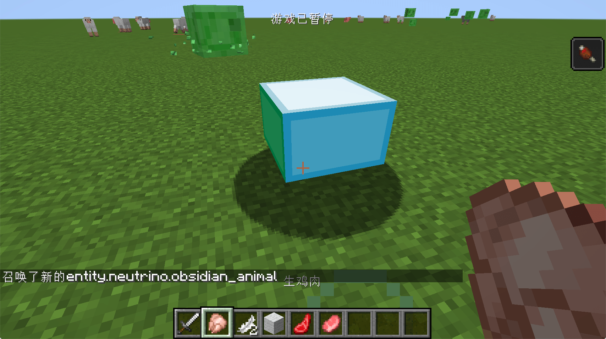
可以看到，当你靠近实体时，你就获得了一个饥饿效果，试试用剑杀死它吧。
能力系统
在这节中，我们将会介绍Forge Mod开发过程中可能最为抽象的一部分内容：Capability系统。
从零构建与使用能力
在这一节中，我们将会从0开始构建与使用Capability。在开始之前我们必须要解释一下，什么是Capability。
Capability 的诞生起源于在写程序时出现的一个问题。考虑如下一种情况，你正在写一个能量转换器，你的能量转换器需要可以转换不同mod中的不同能量：EU、RF，Forge Energy等等。每一个能量都提供了一个接口用来实现输入输出的方法，那么你很快就会发现你的类定义会变成下面这个样子:
class MyTileEntity extends TileEntity implements EnergyInterface1, EnergyInterface2, EnergyInterface3, FluidsInterface1, FluidsInterface2, FluidsInterface3, ItemsApi1, ItemsApi2, ItemsApi3, ComputerApi1, ComputerApi2, ...
这样的代码简直是地狱级别的可怕。而Capability（能力系统）出现解决了这个问题，再用了能力系统之后你的类定义就可以简化成类似下面的形式:
class MyTileEntity extends CapabilityProvider
这里是演示代码，但是你可以立马发现，你的代码简化了很多。请注意Capability系统并不是Minecraft原版提供的，而是Forge提供的。
在Capability系统主要由两部分构成，Capability（能力）本身以及CapabilityProvider（能力提供者）。请注意务必要区分清楚Capability和CapabilityProvider，在很多的教程中，这两者都被混为一谈。当然在实际使用的过程中还会牵涉到调用CapabilityProvider的一方。这里我讲一个简单比喻来帮助大家理解这三方的关系。
假设，你是一个投资商，想要投资建一栋商务楼。一般情况下，你就会去找一个建筑方案提供商。如果这个建筑方案提供商拿不出这个建筑方案，你可能就不建了，如果这个建筑方案提供商拿的出建筑方案，你就可以从这个方法中获取一些信息或者直接按照这个方案建筑商务楼。
在Capability系统中，调用CapabilityProvider的方相当于「投资商」，CapabilityProvider相当于是「建筑方案提供商」，而Capability本身就是「建筑方案」。
而在代码层面，首先调用方会调用CapabilityProvider的getCapability方法并传入一个具体的Capability。然后在实现了CapbilityProvider接口的类中，判断传入的能力是不是自己可以完成的，如果不能换成就会返回一个空值，如果可以完成就会返回传入的Capability所指定类或接口的一个实例。
接下来我们会创建两个特殊的方块，分为「上方块」和「下方块」。当你把「上方块」放在「下方块」的上方时，「上方块会输出下方块传来的信息」。
介于篇幅的原因，这里就直接从TilEntity开始了，相关的方块也没什么内容，就只是关联的方块实体而已。
ObsidianUpBlockTileEntity
public class ObsidianUpBlockTileEntity extends TileEntity implements ITickableTileEntity {
public ObsidianUpBlockTileEntity() {
super(TileEntityTypeRegistry.obsidianUpTileEntity.get());
}
private static Logger logger = LogManager.getLogger();
@Override
public void tick() {
if (!world.isRemote) {
BlockPos pos = this.pos.down();
TileEntity tileEntity = world.getTileEntity(pos);
if (tileEntity != null) {
LazyOptional<ISimpleCapability> simpleCapabilityLazyOptional = tileEntity.getCapability(ModCapability.SIMPLE_CAPABILITY);
simpleCapabilityLazyOptional.ifPresent((s) -> {
String context = s.getString(this.pos);
logger.info(context);
});
}
}
}
}
可以看见这里的内容并不艰深。我们先获取了下方方块的方块实体。
LazyOptional<ISimpleCapability> simpleCapabilityLazyOptional = tileEntity.getCapability(ModCapability.SIMPLE_CAPABILITY);
然后就是调用这里的getCapbility并传入了我们自定义的ModCapability.SIMPLE_CAPABILITY这个能力，来询问我们下方的方块是否可以完成这件事。
这里有个很奇怪的类型，叫做LazyOptional<ISimpleCapability>我们必须要稍微解释一下。简单来说你在读这个类的名字时可以忽视Lazy，它其实就是一个特殊的Optional类。那么什么是Optioanl类呢？Optinal 类其实是对null和有值这两个状态的封装。简单来说，当LazyOptional.isPresent为真时，代表这个变量里有值，如果为假，代表这个变量的值为null。
simpleCapabilityLazyOptional.ifPresent((s) -> {
String context = s.getString(this.pos);
logger.info(context);
});
这里的ifPresent的意思就是当返回值不是null时需要做什么。这里的lambda表达式参数s就是之前getCapbility调用的返回值。而且它的类型就是我们写在LazyOptional<T>这个泛型中的类型，在我们的例子里就是ISimpleCapability这个接口的实例。
然后我们就调用了ISimpleCapability规定的方法getString，并且把值输出了出来。
读完这里希望读者能稍微停一下，然后思考这个过程和之前比喻之间的关系。
接下来我们就要来看看我们的「方案提供商人 / CapabilityProvider 」了。
ObsidianDownBlockTileEntity.java
public class ObsidianDownBlockTileEntity extends TileEntity {
public ObsidianDownBlockTileEntity() {
super(TileEntityTypeRegistry.obsidianDownTileEntity.get());
}
@Nonnull
@Override
public <T> LazyOptional<T> getCapability(@Nonnull Capability<T> cap, @Nullable Direction side) {
if (cap == ModCapability.SIMPLE_CAPABILITY) {
return LazyOptional.of(() -> {
return new SimpleCapability("Hello");
}).cast();
}
return LazyOptional.empty();
}
}
可以看见我们这里就简单的复写了getCapability方法，你可能会好奇getCapability明明是CapabilityProvider规定的方法，我们却可以直接复写。
如果你查看TileEntity类的定义，你应该可以看到如下内容:
public abstract class TileEntity extends net.minecraftforge.common.capabilities.CapabilityProvider<TileEntity> implements net.minecraftforge.common.extensions.IForgeTileEntity
可以看见TileEntity类默认继承了CapabilityProvider（知道Capability对于方块实体多么重要了吧），这就是为什么我们可以直接复写getCapability的原因。
这里的内容，非常简单，我们就是判断传入的能力是不是我们可以完成的，如果不可以完成就返回一个LazyOptional.empty()（你可以当成返回了一个null)，如果可以完成就返回了一个相对应的实例。
return LazyOptional.of(() -> {
return new SimpleCapability("Hello");
}).cast();
这里的意思是将SimpleCapability的实例塞入LazyOptinal中。请注意，最后的这里的cast方法是必须要调用的，不然会出现类型错误。
这里的SimpleCapability就是实现了我们之前提到的ISimpleCapability接口的类。所以这里返回的实例也是ISimpleCapability的实例。
接下来我们来看SimpleCapability.java和ISimpleCapability.java
public class SimpleCapability implements ISimpleCapability {
private String context;
public SimpleCapability(String context) {
this.context = context;
}
@Override
public String getString(BlockPos pos) {
return pos.toString() + ":::" + this.context;
}
}
public interface ISimpleCapability {
String getString(BlockPos pos);
}
在你写自定义Capability（这里指的不是CapabilityProvider）时，你应该也要遵循这个形式，把规定的操作抽象成一个接口，这样你就可以你就可以在Mod的API中向别人提供这个接口，别人就可以在它们的Mod中使用你定义的Capability了。
接下来是注册，首先我们得声明一个实例。
ModCapability.java
public class ModCapability {
@CapabilityInject(ISimpleCapability.class)
public static Capability<ISimpleCapability> SIMPLE_CAPABILITY;
}
在这里我们使用了@CapabilityInject注解，来表示我们的定义的变量是Capability，并且会在正式注册完这个Capability后给下面的变量赋值。这里的参数和下方的泛型，都应该是你之前定义的Capability的接口。
最后我们来正式注册它。
@Mod.EventBusSubscriber(bus = Mod.EventBusSubscriber.Bus.MOD)
public class CommonSetupEventHandler {
@SubscribeEvent
public static void onSetupEvent(FMLCommonSetupEvent event) {
CapabilityManager.INSTANCE.register(
ISimpleCapability.class,
new Capability.IStorage<ISimpleCapability>() {
@Nullable
@Override
public INBT writeNBT(Capability<ISimpleCapability> capability, ISimpleCapability instance, Direction side) {
return null;
}
@Override
public void readNBT(Capability<ISimpleCapability> capability, ISimpleCapability instance, Direction side, INBT nbt) {
}
},
() -> null
);
}
}
你需要在Mod总线的FMLCommonSetupEvent（通用启动设置）这个生命周期事件发生时，调用 CapabilityManager.INSTANCE.register注册你的Capability，这里第一个参数就是你写好的Capability，后面两个参数你是用来规定默认情况下的储存和创建方法的，我们不需要这些功能，所以留空。你可直接像上面的代码一样写最后两个参数。
然后就是方块，方块实体等的注册，这里就不多加解释了。
打开游戏。
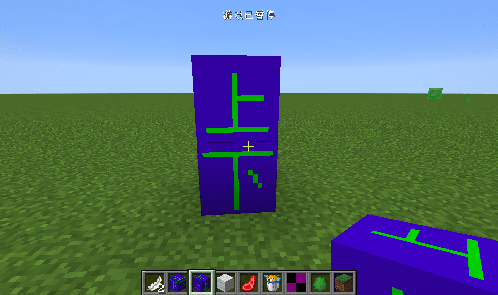
当像这样叠放时。

控制台里输出了相对应的内容了。
这部分的概念有些抽象，大家可以结合源代码自己思考整个调用过程。只要你理解了调用过程，Capability系统其实没有想象的那么难以理解。
开始使用预定义能力
在这一节中我们来学习如何使用Forge已经提供好的Capability。
Forge为我们已经预定义好了一下几种Capability，你可通过查看@CapabilityInject注释在原版内容中的使用来找到预定于好的Capability。
ANIMATION_CAPABILITY，接口IAnimationStateMachine，这个能力与动画有关ENERGY，接口IEnergyStorage，这个能力就是大家可能都听说过的Forge EnergyFLUID_HANDLER_CAPABILITY，接口IFluidHandler，这个能力和方块形式的流体有关FLUID_HANDLER_ITEM_CAPABILITY，接口IFluidHandlerItem，这个能力和物品形式的流体有关ITEM_HANDLER_CAPABILITY，接口IItemHandler，这个能力和物品的输入输出有关
在这节中，我们将会以ITEM_HANDLER_CAPABILITY，做一个简单的演示。如果想要更详细的例子，可以看看ustc-zzzz中关于Forge 能力系统介绍的博客。
在这里我们要实现一个只能从上方倒入并且可以帮我们自动删除圆石的垃圾桶。
public class ObsidianTrashTileEntity extends TileEntity {
public ObsidianTrashTileEntity() {
super(TileEntityTypeRegistry.obsidianTrash.get());
}
@Nonnull
@Override
public <T> LazyOptional<T> getCapability(@Nonnull Capability<T> cap, @Nullable Direction side) {
if (side == Direction.UP && cap == CapabilityItemHandler.ITEM_HANDLER_CAPABILITY) {
return LazyOptional.of(() -> {
return new ItemStackHandler() {
@Override
public boolean isItemValid(int slot, @Nonnull ItemStack stack) {
return stack.getItem() == Items.COBBLESTONE;
}
};
}).cast();
}
return super.getCapability(cap, side);
}
}
if (side == Direction.UP && cap == CapabilityItemHandler.ITEM_HANDLER_CAPABILITY)
在这里我们规定了我们的垃圾桶只有从上方导入时才有效，并且声明了有ITEM_HANDLER_CAPABILITY这个能力。
return LazyOptional.of(() -> {
return new ItemStackHandler() {
@Override
public boolean isItemValid(int slot, @Nonnull ItemStack stack) {
return stack.getItem() == Items.COBBLESTONE;
}
};
}).cast();
然后在这里创建了一个ItemStackHandler实例，这个是Forge内置的已经实现了IItemHandler接口的类，大家可以通过查看IItemHandler的基础树来找到这个类。
并且我们在创建这个实例的时候复写了isItemValid方法用来过滤物品，至于这些方法都有什么作用，请大家自行阅读IItemHandler接口的注释。
因为这里的能力是内置了，所以我们就不需要注册了。
至于方块，物品等注册，请读者自行完成。
打开游戏试试吧。
附加能力提供器
在之前的章节中，我们已经学习了如何使用能力系统，已经知道了如何从零创建一个能力。在这节中，我们将要来学习，如何为现有的实体、物品等附加能力提供器。
在这节中，我们会给玩家添加一个新的CapabilityProvider，让玩家可以拥有一套新的等级系统。
首先我们来创建一个能力，这个能力非常简单。
public interface ISpeedUpCapability extends INBTSerializable<CompoundNBT> {
int getLevel();
}
public class SpeedUpCapability implements ISpeedUpCapability {
private int level;
public SpeedUpCapability(int level) {
this.level = level;
}
@Override
public int getLevel() {
return level;
}
@Override
public CompoundNBT serializeNBT() {
CompoundNBT compoundNBT = new CompoundNBT();
compoundNBT.putInt("level", this.level);
return compoundNBT;
}
@Override
public void deserializeNBT(CompoundNBT nbt) {
this.level = nbt.getInt("level");
}
}
可以看见我们让我们的Capability实现了INBTSerializable<CompoundNBT>接口，之所以要这么做的原因是，我们之后需要保存和恢复数据。请注意，虽然这里的Capability实现了INBTSerializable<CompoundNBT>，但是实际保存数据的地方并不在Capability中，而是在CapabilityProvider中，请务必区分
上面的内容非常好懂，就不多加说明了。
不要忘了创建与注册能力。
@CapabilityInject(ISpeedUpCapability.class)
public static Capability<ISpeedUpCapability> SPEED_UP_CAPABILITY;
CapabilityManager.INSTANCE.register(
ISpeedUpCapability.class,
new Capability.IStorage<ISpeedUpCapability>() {
@Nullable
@Override
public INBT writeNBT(Capability<ISpeedUpCapability> capability, ISpeedUpCapability instance, Direction side) {
return null;
}
@Override
public void readNBT(Capability<ISpeedUpCapability> capability, ISpeedUpCapability instance, Direction side, INBT nbt) {
}
},
() -> null
)
接下来就是重头戏，我们来创建一个新的CapabilityProvider
public class SpeedUpCapabilityProvider implements ICapabilityProvider, INBTSerializable<CompoundNBT> {
private ISpeedUpCapability speedUpCapability;
@Nonnull
@Override
public <T> LazyOptional<T> getCapability(@Nonnull Capability<T> cap, @Nullable Direction side) {
return cap == ModCapability.SPEED_UP_CAPABILITY ? LazyOptional.of(() -> {
return this.getOrCreateCapability();
}).cast() : LazyOptional.empty();
}
@Nonnull
ISpeedUpCapability getOrCreateCapability() {
if (speedUpCapability == null) {
Random random = new Random();
this.speedUpCapability = new SpeedUpCapability(random.nextInt(99) + 1);
}
return this.speedUpCapability;
}
@Override
public CompoundNBT serializeNBT() {
return getOrCreateCapability().serializeNBT();
}
@Override
public void deserializeNBT(CompoundNBT nbt) {
getOrCreateCapability().deserializeNBT(nbt);
}
}
可以看到，这里我们实现了两个接口ICapabilityProvider和INBTSerializable<CompoundNBT>，其中ICapabilityProvider接口是必须实现的，而INBTSerializable<CompoundNBT>是可以不用实现的，如果你的CapabilityProvider不需要保存数据，你可以不实现这个接口，如果你实现了这个接口，当你附加完能力时，Forge在保存数据和读取数据时，会自动调用这两个接口。
我们在这里直接调用了，我们之前实现的Capability内相对应的方法。
getOrCreateCapability内容很简单，就是如果没有创建能力就创建一个新的能力，如果有就返回一个旧的能力，并且在创建新的能力时，随机给予一个等级。
接下来我们需要讲我们的能力附加到玩家身上。
@Mod.EventBusSubscriber()
public class CommonEventHandler {
@SubscribeEvent
public static void onAttachCapabilityEvent(AttachCapabilitiesEvent<Entity> event) {
Entity entity = event.getObject();
if (entity instanceof PlayerEntity) {
event.addCapability(new ResourceLocation("neutrino", "speedup"), new SpeedUpCapabilityProvider());
}
}
@SubscribeEvent
public static void onPlayerCloned(PlayerEvent.Clone event) {
if (!event.isWasDeath()) {
LazyOptional<ISpeedUpCapability> oldSpeedCap = event.getOriginal().getCapability(ModCapability.SPEED_UP_CAPABILITY);
LazyOptional<ISpeedUpCapability> newSpeedCap = event.getPlayer().getCapability(ModCapability.SPEED_UP_CAPABILITY);
if (oldSpeedCap.isPresent() && newSpeedCap.isPresent()) {
newSpeedCap.ifPresent((newCap) -> {
oldSpeedCap.ifPresent((oldCap) -> {
newCap.deserializeNBT(oldCap.serializeNBT());
});
});
}
}
}
}
我们先来看onAttachCapabilityEvent 这个事件处理器。
@SubscribeEvent
public static void onAttachCapabilityEvent(AttachCapabilitiesEvent<Entity> event) {
Entity entity = event.getObject();
if (entity instanceof PlayerEntity) {
event.addCapability(new ResourceLocation("neutrino", "speedup"), new SpeedUpCapabilityProvider());
}
}
这里我们监听了AttachCapabilitiesEvent<Entity>事件，我们可以通过这个事件来为特定的对象附加自定义的CapabilityProvider。这里我们就简单了判断了实体是不是玩家，如果是玩家，就附加能力。请注意：event.addCapability方法，看上去附加的好像不是CapabilityProvider而是Capability，但如果你观察过它的函数签名，你会发现第二个参数需要的类型是ICapabilityProvider，所以在一开始你可以把这个函数理解成成event.addCapabilityProvider。这里的第一个参数是一个标记符，每一个附加的CapabilityProvder都必须是唯一的，ResourceLocation第一个参数一般情况填入你的modId，后一个参数随你喜好填。
- Entity
- TileEntity
- ItemStack
- World
- Chunk
接下来我们来看
@SubscribeEvent
public static void onPlayerCloned(PlayerEvent.Clone event) {
if (!event.isWasDeath()) {
LazyOptional<ISpeedUpCapability> oldSpeedCap = event.getOriginal().getCapability(ModCapability.SPEED_UP_CAPABILITY);
LazyOptional<ISpeedUpCapability> newSpeedCap = event.getPlayer().getCapability(ModCapability.SPEED_UP_CAPABILITY);
if (oldSpeedCap.isPresent() && newSpeedCap.isPresent()) {
newSpeedCap.ifPresent((newCap) -> {
oldSpeedCap.ifPresent((oldCap) -> {
newCap.deserializeNBT(oldCap.serializeNBT());
});
});
}
}
}
当玩家死亡后重生或者从末地回到主世界，都会触发这个方法，理论上来说从末地回到主世界应该会自动同步数据，不知道处于什么样子的考虑，这个功能一直没有实现，所以我们需要在这里手动的恢复我们的能力。event.isWasDeath() 为真时代表玩家死亡后重生，而为假时代表从末地回到主世界。在这里event.getOriginal() 得到的是玩家之前的实体，event.getPlayer()代表的是玩家重生之后的实体。
newCap.deserializeNBT(oldCap.serializeNBT());我们在这里恢复了数据，这就是为什么我们需要让我们的Capability也实现INBTSerializable<CompoundNBT>的原因。
最后就是使用能力了
public class ObsidianSpeedUpShowItem extends Item {
public ObsidianSpeedUpShowItem() {
super(new Properties().group(ModGroup.itemGroup));
}
@Override
public ActionResult<ItemStack> onItemRightClick(World worldIn, PlayerEntity playerIn, Hand handIn) {
if (!worldIn.isRemote && handIn == Hand.MAIN_HAND) {
LazyOptional<ISpeedUpCapability> speedCap = playerIn.getCapability(ModCapability.SPEED_UP_CAPABILITY);
speedCap.ifPresent((l) -> {
int level = l.getLevel();
playerIn.sendMessage(new StringTextComponent("Level: " + level));
}
);
}
return super.onItemRightClick(worldIn, playerIn, handIn);
}
}
没什么好说的，我们只是从Capability从获取了等级并且输出到了聊天框而已。

打开游戏，右键相对应的物品，你就能看到等级被显示了。
编程小课堂
在写Mod的时候，你必须学会看源代码和Debug（比如下断点）等。这些是基本技能。
WorldSavedData(世界数据保存)
在这节中，我们将来学习另外一种可以保存数据的方法，这就是World Saved Data。World Saved Data 是Minecraft 提供的一种可以让你保存和共享数据的类。World Saved Data 是在维度级别的，你只能指定某个维度拥有一个WorldSavedData，里面保存的数据是所有玩家通用的，并且用World Saved Data保存的数据与存档数据是分开存放的。
在这节中，我们创建一个可以远程传输和储存物品的机器。
首先我们来看ObsidianWorldSavedData:
public class ObsidianWorldSavedData extends WorldSavedData {
private static final String NAME = "ObsidianWorldSavedData";
private Stack<ItemStack> itemStacks = new Stack<>();
public ObsidianWorldSavedData() {
super(NAME);
}
public boolean putItem(ItemStack item) {
itemStacks.push(item);
markDirty();
return true;
}
public ItemStack getItem() {
if (itemStacks.isEmpty()) {
return new ItemStack(Items.AIR);
}
markDirty();
return itemStacks.pop();
}
public ObsidianWorldSavedData(String name) {
super(name);
}
public static ObsidianWorldSavedData get(World worldIn) {
if (!(worldIn instanceof ServerWorld)) {
throw new RuntimeException("Attempted to get the data from a client world. This is wrong.");
}
ServerWorld world = worldIn.getServer().getWorld(DimensionType.OVERWORLD);
/***
* 如果你需要每个纬度都有一个自己的World Saved Data。
* 用 ServerWorld world = (ServerWorld)world; 代替上面那句。
*/
DimensionSavedDataManager storage = world.getSavedData();
return storage.getOrCreate(() -> {
return new ObsidianWorldSavedData();
}, NAME);
}
@Override
public void read(CompoundNBT nbt) {
ListNBT listNBT = (ListNBT) nbt.get("list");
if (listNBT != null) {
for (INBT value : listNBT) {
CompoundNBT tag = (CompoundNBT) value;
ItemStack itemStack = ItemStack.read(tag.getCompound("itemstack"));
itemStacks.push(itemStack);
}
}
}
@Override
public CompoundNBT write(CompoundNBT compound) {
ListNBT listNBT = new ListNBT();
itemStacks.stream().forEach((stack) -> {
CompoundNBT compoundNBT = new CompoundNBT();
compoundNBT.put("itemstack", stack.serializeNBT());
listNBT.add(compoundNBT);
});
compound.put("list", listNBT);
return compound;
}
}
首先你需要给你的WorldSavedData命名，请注意这个名字是必须是唯一的，然后在构建函数的Super方法里填入这个名字。
public ObsidianWorldSavedData() {
super(NAME);
}
public ObsidianWorldSavedData(String name) {
super(name);
}
类似如上。
接下来就是你要创建这个WorldSavedData，我们来看get方法
public static ObsidianWorldSavedData get(World worldIn) {
if (!(worldIn instanceof ServerWorld)) {
throw new RuntimeException("Attempted to get the data from a client world. This is wrong.");
}
ServerWorld world = worldIn.getServer().getWorld(DimensionType.OVERWORLD);
DimensionSavedDataManager storage = world.getSavedData();
return storage.getOrCreate(() -> {
return new ObsidianWorldSavedData();
}, NAME);
}
首先，所有的存档保存的操作都应该在服务端执行，所以我们要先判断我们执行get方法时，是不是在服务端。
ServerWorld world = worldIn.getServer().getWorld(DimensionType.OVERWORLD);
接下来，我们通过这句话获取了主世界维度相对应的ServerWorld类，之所以强制获取主世界相对应的ServerWorld原因是，我们得有要实现跨世界传送功能，所以我们把数据统一保存在主世界下的WorldSavedData里。
如果你希望每个维度都有自己的WorldSavedData，可以使用下面这条命令代替即可。
ServerWorld world = (ServerWorld)world;
然后就是调用从ServerWorld中获取DimensionSavedDataManager，并调用getOrCreate来获取或者创建我们的WorldSavedData.
getOrCreate第一个参数返回值是你的WorldSavedData实例，第二个参数就是你指定的名字。
这样写完以后，你可以在你需要的地方调用ObsidianWorldSavedData.get即可获或者自动创建取我们写好的WorldSavedData了。
接下来是，我们自己创建的用来读取和存放数据的接口
public boolean putItem(ItemStack item) {
itemStacks.push(item);
markDirty();
return true;
}
public ItemStack getItem() {
if (itemStacks.isEmpty()) {
return new ItemStack(Items.AIR);
}
markDirty();
return itemStacks.pop();
}
我们在这里用了 private Stack<ItemStack> itemStacks来保存我们的数据，当然当你修改完数据之后记得要markDirty()不然你修改后的数据不会被保存。
@Override
public void read(CompoundNBT nbt) {
ListNBT listNBT = (ListNBT) nbt.get("list");
if (listNBT != null) {
for (INBT value : listNBT) {
CompoundNBT tag = (CompoundNBT) value;
ItemStack itemStack = ItemStack.read(tag.getCompound("itemstack"));
itemStacks.push(itemStack);
}
}
}
@Override
public CompoundNBT write(CompoundNBT compound) {
ListNBT listNBT = new ListNBT();
itemStacks.stream().forEach((stack) -> {
CompoundNBT compoundNBT = new CompoundNBT();
compoundNBT.put("itemstack", stack.serializeNBT());
listNBT.add(compoundNBT);
});
compound.put("list", listNBT);
return compound;
}
然后就是数据的保存和恢复，这里没什么好说的，只是用的了ListNBT来保存我们的数据而已。
然后我们来看看如何使用这个WorldSavedData吧。
public class ObsidianItemSaveBlock extends Block {
public ObsidianItemSaveBlock() {
super(Properties.create(Material.ROCK).hardnessAndResistance(5));
}
@Override
public ActionResultType onBlockActivated(BlockState state, World worldIn, BlockPos pos, PlayerEntity player, Hand handIn, BlockRayTraceResult hit) {
if (!worldIn.isRemote && handIn == Hand.MAIN_HAND) {
ObsidianWorldSavedData worldSavedData = ObsidianWorldSavedData.get(worldIn);
ItemStack mainHandItemStack = player.getItemStackFromSlot(EquipmentSlotType.MAINHAND);
if (!mainHandItemStack.isEmpty()) {
worldSavedData.putItem(mainHandItemStack.copy());
mainHandItemStack.shrink(mainHandItemStack.getCount());
} else {
ItemStack stack = worldSavedData.getItem();
player.setItemStackToSlot(EquipmentSlotType.MAINHAND, stack);
}
}
return ActionResultType.SUCCESS;
}
}
这里最重要的就是onBlockActivated方法，同样的我们需要判断代码是不是在服务端执行并且传入的手是不是主手。
ObsidianWorldSavedData worldSavedData = ObsidianWorldSavedData.get(worldIn);
ItemStack mainHandItemStack = player.getItemStackFromSlot(EquipmentSlotType.MAINHAND);
我们首先获取了之前创建好的WorldSavedData以及主手的ItemStack.
然后判断ItemStack是否为空，不为空代表我们需要放东西，为空代表我们需要取东西。
worldSavedData.putItem(mainHandItemStack.copy());
mainHandItemStack.shrink(mainHandItemStack.getCount());
这里就是我们放东西的代码，调用了我们自定义的putItem，来存放数据。请注意，这里传入的必须是mainHandItemStack.copy()，不然我们之后减少物品时，我们存入的物品也会变空。
而第二句话就是shrink「收缩」物品，收缩的数量就是物品的数量。这样我们就把物品变空了。
ItemStack stack = worldSavedData.getItem();
player.setItemStackToSlot(EquipmentSlotType.MAINHAND, stack);
这句话也很简单，就是取出物品然后还给玩家而已。
打开游戏右键你的方块试试吧，现在应该可以不限距离，不限维度传输物品了。
Gui
在这节我们将进入很多人期待已久的章节，GUI（图形界面）。
第一个Gui
在这一节中，我们将创建一个自定义的Gui，在开始教程之前，我必须要强调一点，打开Gui等操作只能在客户端执行，不能在服务端执行。
与GUI相关的最直接的一个类就是Screen类，自然我们要创建一个类并继承Screen。
ObsidianFirstGui.java:
public class ObsidianFirstGui extends Screen {
TextFieldWidget textFieldWidget;
Button button;
OptionSlider optionSlider;
ResourceLocation OBSIDIAN_FIRST_GUI_TEXTURE = new ResourceLocation("neutrino", "textures/gui/first_gui.png");
String content = "Hello";
SliderPercentageOption sliderPercentageOption;
Widget sliderBar;
protected ObsidianFirstGui(ITextComponent titleIn) {
super(titleIn);
}
@Override
protected void init() {
this.minecraft.keyboardListener.enableRepeatEvents(true);
this.textFieldWidget = new TextFieldWidget(this.font, this.width / 2 - 100, 66, 200, 20, "Context");
this.children.add(this.textFieldWidget);
this.button = new Button(this.width / 2 - 40, 96, 80, 20, "Save", (button) -> {
});
this.addButton(button);
this.sliderPercentageOption = new SliderPercentageOption("neutrino.sliderbar", 5, 100, 5, (setting) -> {
return Double.valueOf(0);
}, (setting, value) -> {
}, (gameSettings, sliderPercentageOption1) -> "test");
this.sliderBar = this.sliderPercentageOption.createWidget(Minecraft.getInstance().gameSettings, this.width / 2 - 100, 120, 200);
this.children.add(this.sliderBar);
super.init();
}
@Override
public void render(int mouseX, int mouseY, float particleTick) {
this.renderBackground();
RenderSystem.color4f(1.0F, 1.0F, 1.0F, 1.0F);
this.minecraft.getTextureManager().bindTexture(OBSIDIAN_FIRST_GUI_TEXTURE);
int textureWidth = 208;
int textureHeight = 156;
this.blit(this.width / 2 - 150, 10, 0, 0, 300, 200, textureWidth, textureHeight);
this.drawString(this.font, content, this.width / 2 - 10, 30, 0xeb0505);
this.textFieldWidget.render(mouseX, mouseY, particleTick);
this.button.render(mouseX, mouseY, particleTick);
this.sliderBar.render(mouseX, mouseY, particleTick);
super.render(mouseX, mouseY, particleTick);
}
}
在这里最重要的是两个方法，init和render方法。首先，我们先来讲init方法。
@Override
protected void init() {
this.minecraft.keyboardListener.enableRepeatEvents(true);
this.textFieldWidget = new TextFieldWidget(this.font, this.width / 2 - 100, 66, 200, 20, "Context");
this.children.add(this.textFieldWidget);
this.button = new Button(this.width / 2 - 40, 96, 80, 20, "Save", (button) -> {
});
this.addButton(button);
this.sliderPercentageOption = new SliderPercentageOption("neutrino.sliderbar", 5, 100, 5, (setting) -> {
return Double.valueOf(0);
}, (setting, value) -> {
}, (gameSettings, sliderPercentageOption1) -> "test");
this.sliderBar = this.sliderPercentageOption.createWidget(Minecraft.getInstance().gameSettings, this.width / 2 - 100, 120, 200);
this.children.add(this.sliderBar);
super.init();
}
在这里我们创建了三个「Widget（组件）」——Button（按钮）、TextFieldWidget（文本框）以及Slider（滑条）。Widget 是Minecraft GUI中最小可交互的对象。在GUI中添加Wdget大体上可以分成两步骤：
- 创建：你需要先创建一个组件，在创建组件时你需要指定它的宽和高、X坐标和Y坐标，对于一个特殊的组件，你还得指定它的回调函数，也就是当你操作组件后它需要执行的内容。比如说，当你按下按钮，你需要执行的内容就是一个回调函数。
- 添加，为了你的GUI可以使用组件，你需要在创建完组件之后将组件添加到GUI上，对于绝大部分的组件你只需要调用
this.children.add(组件实例)即可，按钮比较特殊，你需要调用this.addButton(按钮实例)。
接下来我们来讲解一下窗口布局，对于我们的这个Screen类来说，你可以通过this.width和this.height来获取宽度和高度。请注意，在GUI中，X轴是从左上角向下，Y轴是从左上角向右。
因为这里涉及到的方法很多，我就稍微讲解一下，大体上所有的组件创建的都有X、Y位置设定，以及宽和高的设定，大家可以自己看方法签名。
其中值得一讲的是:
this.button = new Button(this.width / 2 - 40, 96, 80, 20, "Save", (button) -> {});
这里最后一个参数，这个空的闭包就是按钮的回调函数，如果你希望你的按钮能做什么的话，就在这个闭包内写上逻辑吧。
this.sliderPercentageOption = new SliderPercentageOption("neutrino.sliderbar", 5, 100, 5, (setting) -> {
return Double.valueOf(0);
}, (setting, value) -> {
}, (gameSettings, sliderPercentageOption1) -> "test");
接下来是滚动条，它比较特殊，你得先创建一个SliderPercentageOption，然后调用它的createWidget的组件，之所以这么做是因为滚动条必须要和一个数据范围相对应。
这里的第五和第六个参数是getter和setter，这个是用来设置滚动条相对应的数值用的，你可在这里写上非常复杂的逻辑。当你调用它相对应的set和get方法时，会先执行你设置的这两个方法，然后获取值。这里我们不进行任何的设置，返回值也设置成0，最后一个方法是用来设置滚动条底部文字的，因为要实现滚动条处于不同地方时呈现不同的内容，所以这里也是一个闭包（虽然我们没有用到这个功能），其他参数的意义请自行查看函数签名。
接下来就render方法。
@Override
public void render(int mouseX, int mouseY, float particleTick) {
this.renderBackground();
RenderSystem.color4f(1.0F, 1.0F, 1.0F, 1.0F);
this.minecraft.getTextureManager().bindTexture(OBSIDIAN_FIRST_GUI_TEXTURE);
int textureWidth = 208;
int textureHeight = 156;
this.blit(this.width / 2 - 150, 10, 0, 0, 300, 200, textureWidth, textureHeight);
this.drawString(this.font, content, this.width / 2 - 10, 30, 0xeb0505);
this.textFieldWidget.render(mouseX, mouseY, particleTick);
this.button.render(mouseX, mouseY, particleTick);
this.sliderBar.render(mouseX, mouseY, particleTick);
super.render(mouseX, mouseY, particleTick);
}
我们将在这里渲染背景图片。
首先我们调用了 RenderSystem.color4f(1.0F, 1.0F, 1.0F, 1.0F)来确保我们渲染出来的图片是正常的，这里的三个值分别代表着RGBA，红绿蓝和透明度。你电脑上所有能看到的颜色都是这4个元素的混合，这里的值规定了颜色的范围，如果RGB三个值不相等会出现偏色的现象，如果小于1会出现某些颜色无法显示，整个画面会变暗变灰。具体的效果大家可以自行调式使用。
你需要用this.minecraft.getTextureManager().bindTexture(OBSIDIAN_FIRST_GUI_TEXTURE);绑定你需要渲染的图片，这里用ResouceLocation指明了你得图片在资源包中的位置，在我们的例子里是:
ResourceLocation OBSIDIAN_FIRST_GUI_TEXTURE = new ResourceLocation("neutrino", "textures/gui/first_gui.png");
其中第一个参数请填入你的ModId，后面的内容就是具体的位置。
然后调用blit方法来正式渲染。
Blit方法的参数还没有被指定，你可以查看这个gigaherz提供的文件来获取翻译好的函数签名。
我们用的函数签名如下。
blit(int x0, int y0, int z, float u0, float v0, int width, int height, int textureHeight, int textureWidth)
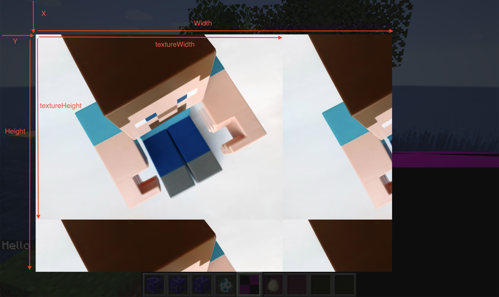
这几个参数的作用如上图。
其中没有讲到的U和V（相当于是XY，用UV是计算机图形学的一个传统）是用来指定你背景图片在实际图片中的左上角位置的。之所以要这么做，是因为对于GPU来说切换图片是一个非常耗时的工作，所以如果可能的话，你应该把所以要用的的元素放在同一张图片中，然后通过指定不同的UV，来指定它的位置。
当你的textureHeight和textureWidth小于width和height时，渲染结果如下。
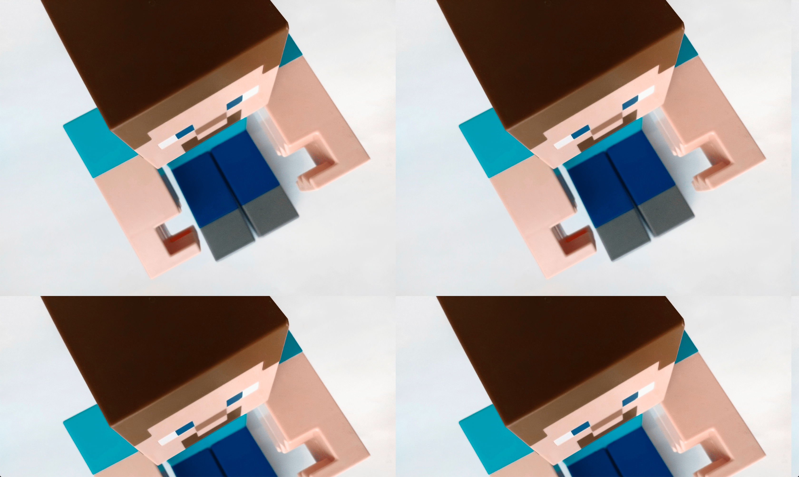
当你的textureHeight和textureWidth大于width和height时，渲染结果如下。
然后我们调用如下方法，绘制了文字。
this.drawString(this.font, content, this.width / 2 - 10, 30, 0xeb0505);
然后调用如下方法绘制了我们的组件:
this.textFieldWidget.render(mouseX, mouseY, particleTick);
this.button.render(mouseX, mouseY, particleTick);
this.sliderBar.render(mouseX, mouseY, particleTick);
至于打开一个只存在在客户端的GUI也很简单，ObsidianFirstGuiItem:
public class ObsidianFirstGuiItem extends Item {
public ObsidianFirstGuiItem() {
super(new Properties().group(ModGroup.itemGroup));
}
@Override
public ActionResult<ItemStack> onItemRightClick(World worldIn, PlayerEntity playerIn, Hand handIn) {
if (worldIn.isRemote) {
DistExecutor.runWhenOn(Dist.CLIENT, () -> () -> {
OpenGuI.openGUI();
});
}
return super.onItemRightClick(worldIn, playerIn, handIn);
}
}
你只需要先判断是不是在客户端，然后调用一个额外的类来打开GUI，DistExecutor.runWhenOn这个函数的第一个参数是用来判断物理端的，因为物理服务器上是没有Screen的，所以我们不能在这个类里触发类加载（因为Item类在物理客户端上有），我们得到另一个类里触发类加载，第一参数Dist.CLIENT就是用来指定物理端的，第二类参数是一个两层的lambda表达式，在这里面我们调用了OpenGuI.openGUI()类来打开gui，DistExecutor下有很多用来判断物理端而进行不同操作的函数，大家可以按需选用。
public class OpenGuI {
public static void openGUI() {
Minecraft.getInstance().displayGuiScreen(new ObsidianFirstGui(new StringTextComponent("test")));
}
}
因为在之前已经通过DistExecutor.runWhenOn来判断过物理端了，所以在OpenGuI类中，我们不用担心Screen缺失的问题，我们在这里调用Minecraft.getInstance().displayGuiScreen方法显示GUI，第二个参数是你GUI的标题，我们这里没有渲染标题，但是还是需要填入一个。
打开游戏你就可以看见我们的GUI被渲染出来了。
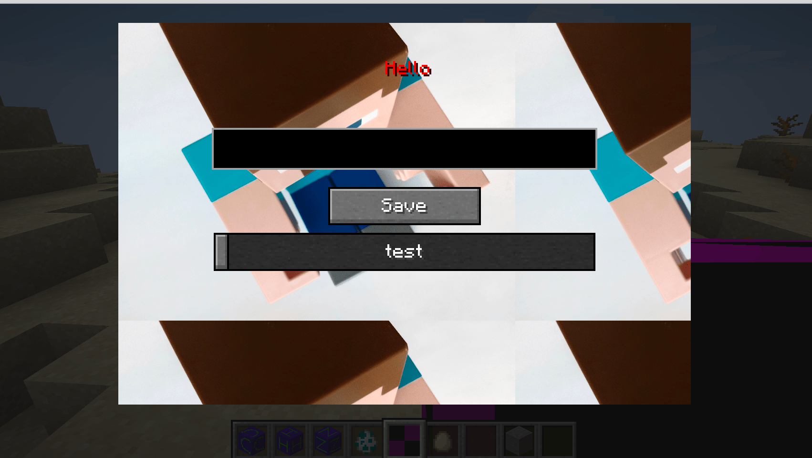
编程小课堂
在Mod开发中请不要使用Time.sleep来计时，这种行为非常非常的愚蠢，如果你需要计时，请使用游戏内置的Tick。
Container
在上一节中，我们已经学习了如何创建一个非常简单的GUI，但是那个GUI显然有些功能是实现不了的。在这节中，我们将要来学习GUI中一个非常重要的类，Container。
在开始之前我们先要回答Container是什么，已经它的存在是为了什么。Container和Screen的关系有点像是，Block和TileEntity的关系，Container本身不会被渲染，它存在的意义就是用来临时的储存数据（Container没法把数据保存到硬盘上）以及数据同步。但是很可惜的是Container所能同步的数据非常有限，不过就是Inventory和IntArray而已，如果你需要更加复杂的数据同步，那只能自己手动发包了。

这里这张图是GUI操作中数据流向图，实线和虚线代表了数据流动的方向。所以跨过中间的箭头都需要进行发包。
当你在Screen上点击按钮或者进行什么别的什么操作，最后修改的都应该是服务端的方块实体或者是Container里面的值，然后在通过它们的同步机制，同步回客户端。切记不能直接修改客户端的方块实体或者Container里的值。请注意，在客户端Container和方块实体之间是没有数据同步的。
希望你大脑里对这个过程有些印象，接下来我们就开始一步一步的实现一个非常简单的箱子。这里涉及到的类挺多的，建议大家在IntelliJ中打开源代码，自己试着理清整个调用关系。
在这节中，我们要创建一个非常简单的箱子。
首先我们先来看方块相关的代码
public class ObsidianFirstContainerBlock extends Block {
public ObsidianFirstContainerBlock() {
super(Properties.create(Material.ROCK).hardnessAndResistance(5));
}
@Override
public boolean hasTileEntity(BlockState state) {
return true;
}
@Nullable
@Override
public TileEntity createTileEntity(BlockState state, IBlockReader world) {
return new ObsidianFirstContainerTileEntity();
}
@Override
public ActionResultType onBlockActivated(BlockState state, World worldIn, BlockPos pos, PlayerEntity player, Hand handIn, BlockRayTraceResult hit) {
if (!worldIn.isRemote && handIn == Hand.MAIN_HAND) {
ObsidianFirstContainerTileEntity obsidianFirstContainerTileEntity = (ObsidianFirstContainerTileEntity) worldIn.getTileEntity(pos);
NetworkHooks.openGui((ServerPlayerEntity) player, obsidianFirstContainerTileEntity, (PacketBuffer packerBuffer) -> {
packerBuffer.writeBlockPos(obsidianFirstContainerTileEntity.getPos());
});
}
return ActionResultType.SUCCESS;
}
}
我们来看最为重要的方法，
@Override
public ActionResultType onBlockActivated(BlockState state, World worldIn, BlockPos pos, PlayerEntity player, Hand handIn, BlockRayTraceResult hit) {
if (!worldIn.isRemote && handIn == Hand.MAIN_HAND) {
ObsidianFirstContainerTileEntity obsidianFirstContainerTileEntity = (ObsidianFirstContainerTileEntity) worldIn.getTileEntity(pos);
NetworkHooks.openGui((ServerPlayerEntity) player, obsidianFirstContainerTileEntity, (PacketBuffer packerBuffer) -> {
packerBuffer.writeBlockPos(obsidianFirstContainerTileEntity.getPos());
});
}
return ActionResultType.SUCCESS;
}
大部分的内容没什么好说的，想想大家以及可以读的懂了，这里最为关键的只有一句话。
NetworkHooks.openGui((ServerPlayerEntity) player, obsidianFirstContainerTileEntity, (PacketBuffer packerBuffer) -> {
packerBuffer.writeBlockPos(obsidianFirstContainerTileEntity.getPos());
});
这句话就是打开一个包含有Container的GUI的语句。
当你执行这条命令时，Minecraft会同时在客户端和服务端各自创建一个Container，并且创建的流程不一样。我们来讲一下这个创建的流程时什么样子的。
-
服务端：这个函数的第二个参数是是一个
INamedContainerProvider接口，这里我们让我们的方块实体实现了这个接口（大部分时候你都应该这么做）。这个接口下有个叫做createMenu的方法，在服务端最终会调用这个方法来创建Container。 -
客户端：客户端的操作首先会进行一次发包处理，
NetworkHooks.openGui方法的第三个参数让你可以在发送的数据包中额外的附加数据（为了方便展示，我没有使用内置的封装好的函数），这里添加数据的方法，相信已经会自定义网络包的你，理解起来不难。当客户端接受到发送来的包之后，客户的会调用你在注册时设置的构造方法创建，具体的内容我们留到注册部分再说
接下来我们开看看我们的方块实体
public class ObsidianFirstContainerTileEntity extends TileEntity implements ITickableTileEntity, INamedContainerProvider {
private Inventory inventory = new Inventory(1);
private ObsidianFirstContainerItemNumber itemNumber = new ObsidianFirstContainerItemNumber();
public ObsidianFirstContainerTileEntity() {
super(TileEntityTypeRegistry.obsidianFirstContainerTileEntity.get());
}
@Override
public ITextComponent getDisplayName() {
return new StringTextComponent("Fist Container");
}
@Nullable
@Override
public Container createMenu(int sycID, PlayerInventory inventory, PlayerEntity player) {
return new ObsidianFirstContainer(sycID, inventory, this.pos, this.world, itemNumber);
}
@Override
public void read(CompoundNBT compound) {
this.inventory.addItem(ItemStack.read(compound.getCompound("item")));
super.read(compound);
}
@Override
public CompoundNBT write(CompoundNBT compound) {
ItemStack itemStack = this.inventory.getStackInSlot(0).copy();
compound.put("item", itemStack.serializeNBT());
return super.write(compound);
}
public Inventory getInventory() {
return inventory;
}
@Override
public void tick() {
if (!world.isRemote) {
this.itemNumber.set(0, this.inventory.getStackInSlot(0).getCount());
}
}
}
这些就是方块实体的代码，我们细细的来讲。
首先就是。
@Override
public ITextComponent getDisplayName() {
return new StringTextComponent("First Container");
}
@Nullable
@Override
public Container createMenu(int sycID, PlayerInventory inventory, PlayerEntity player) {
return new ObsidianFirstContainer(sycID, inventory, this.pos, this.world, itemNumber);
}
这两个方法是INamedContainerProvider规定的方法，可以看到我们在createMenu方法中创建了我们的Container。
接下来，我们看一个变量
private Inventory inventory = new Inventory(1);
这个变量的代表了一个只有1个「Slot（槽位）」的「Inventory（物品栏）」。请注意这里的Slot和Inventory也是只是一个抽象上的概念。

因为我们希望的我们要创建的是一个箱子，自然需要存放物品，所以需要创建一个Inventory，这个是原版已经实现好的IInvetory接口的一个类，如果需要你也可以自己实现这个接口。
至于数据的保存和恢复这里也就不在多提，大家可以自行查看。
接下来是
private ObsidianFirstContainerItemNumber itemNumber = new ObsidianFirstContainerItemNumber();
我们接下来看一看这个类。
public class ObsidianFirstContainerItemNumber implements IIntArray {
int i = 0;
@Override
public int get(int index) {
return i;
}
@Override
public void set(int index, int value) {
i = value;
}
@Override
public int size() {
return 1;
}
}
这个类继承了IIntArray，具体的内容非常的简单，相信大家都能看懂。接下去的问题就是，什么是IntArray。IntArray简单是Container可以自动同步数据的两个类中的一个，另外一个类就是我们之前提及过的Inventory。IntArray的作用是给类似于熔炉这样用进度条的GUI来同步Int值用的（熔炉的进度条是根据Int值的大小按比例绘制的）。
然后我们回过头去看TileEntity中的
@Override
public void tick() {
if (!world.isRemote) {
this.itemNumber.set(0, this.inventory.getStackInSlot(0).getCount());
}
}
我们在服务端，每个tick计算inventory中物品的数量，并将其赋值给之前创建的itemNumber。
至此方块实体部分的内容已经完成。
接下来就是我们的Container
public class ObsidianFirstContainer extends Container {
private ObsidianFirstContainerItemNumber intArray;
protected ObsidianFirstContainer(int id, PlayerInventory playerInventory, BlockPos pos, World world, ObsidianFirstContainerItemNumber intArray) {
super(ContainerTypeRegistry.obsidianFirstContainer.get(), id);
this.intArray = intArray;
trackIntArray(this.intArray);
ObsidianFirstContainerTileEntity obsidianFirstContainerTileEntity = (ObsidianFirstContainerTileEntity) world.getTileEntity(pos);
this.addSlot(new Slot(obsidianFirstContainerTileEntity.getInventory(), 0, 80, 32));
layoutPlayerInventorySlots(playerInventory, 8, 84);
}
@Override
public boolean canInteractWith(PlayerEntity playerIn) {
return true;
}
@Override
public ItemStack transferStackInSlot(PlayerEntity playerIn, int index) {
return ItemStack.EMPTY;
}
private int addSlotRange(IInventory inventory, int index, int x, int y, int amount, int dx) {
for (int i = 0; i < amount; i++) {
addSlot(new Slot(inventory, index, x, y));
x += dx;
index++;
}
return index;
}
private int addSlotBox(IInventory inventory, int index, int x, int y, int horAmount, int dx, int verAmount, int dy) {
for (int j = 0; j < verAmount; j++) {
index = addSlotRange(inventory, index, x, y, horAmount, dx);
y += dy;
}
return index;
}
private void layoutPlayerInventorySlots(IInventory inventory, int leftCol, int topRow) {
// Player inventory
addSlotBox(inventory, 9, leftCol, topRow, 9, 18, 3, 18);
// Hotbar
topRow += 58;
addSlotRange(inventory, 0, leftCol, topRow, 9, 18);
}
public IIntArray getIntArray() {
return intArray;
}
}
其实Container里的内容相对来说比较简单。
protected ObsidianFirstContainer(int id, PlayerInventory playerInventory, BlockPos pos, World world, ObsidianFirstContainerItemNumber intArray) {
super(ContainerTypeRegistry.obsidianFirstContainer.get(), id);
this.intArray = intArray;
trackIntArray(this.intArray);
ObsidianFirstContainerTileEntity obsidianFirstContainerTileEntity = (ObsidianFirstContainerTileEntity) world.getTileEntity(pos);
this.addSlot(new Slot(obsidianFirstContainerTileEntity.getInventory(), 0, 80, 32));
layoutPlayerInventorySlots(playerInventory, 8, 84);
}
首先就是构造函数。
this.intArray = intArray;
trackIntArray(this.intArray);
在这里，我们获取需要同步的IntArray并且调用trackIntArray方法将其加入同步序列中。如此，当你在客户端修改IntArray的值，服务端就可以自动同步数据了。
接下来就是添加Slot。
this.addSlot(new Slot(obsidianFirstContainerTileEntity.getInventory(), 0, 80, 32));
一个Inventory里可以有很多个Slot，这里我们需要给他添加进我们的GUI中，其中Slot第一个参数是一个Inventory，第二个参数是Inventory中ItemStack的序号，因为我们的Inventory总数只有1，所以这里填入0即可。最后两个坐标是X，Y。这个X，Y的起始点是( (this.width - this.xSize) / 2, (this.height - this.ySize) / 2)，这里的xSize和ySize我们在之后将Screen的时候会讲到。
最后的layoutPlayerInventorySlots是自定义的函数用来把玩家自带的Inventory添加到Container中，这里大家可以跟着自行计算位置，就不多讲了。
接下来是
@Override
public boolean canInteractWith(PlayerEntity playerIn) {
return true;
}
这个函数是用来判断玩家能否打开GUI，一般情况下这里都应该做一次玩家和方块的距离计算，用来防止玩家在过远的地方打开GUI，这里我比较懒就不计算了。
@Override
public ItemStack transferStackInSlot(PlayerEntity playerIn, int index) {
return ItemStack.EMPTY;
}
最后这个函数是用来控制玩家按住Shift键以后点击物品的行为，这里我也是懒得写所以直接返回空了。在默认情况下，你需要实现按住Shift讲物品放入指定空的Slot行为。
因为Container主要的作用就是数据同步，所以Container类中的内容并不多，当然Container自带的方法不止这些，大家可以自行阅读Container的注释。
然后就是我们的Screen。
public class ObsidianFirstContainerScreen extends ContainerScreen<ObsidianFirstContainer> {
private ResourceLocation OBSIDIAN_CONTAINER_RESOURCE = new ResourceLocation("neutrino", "textures/gui/container.png");
private int textureWidth = 176;
private int textureHeight = 166;
@Override
public void render(int mouseX, int mouseY, float partialTicks) {
renderBackground();
super.render(mouseX, mouseY, partialTicks);
renderHoveredToolTip(mouseX, mouseY);
}
public ObsidianFirstContainerScreen(ObsidianFirstContainer screenContainer, PlayerInventory inv, ITextComponent titleIn) {
super(screenContainer, inv, titleIn);
this.xSize = textureWidth;
this.ySize = textureHeight;
}
@Override
protected void drawGuiContainerForegroundLayer(int mouseX, int mouseY) {
this.drawString(this.font, Integer.toString(this.getContainer().getIntArray().get(0)), 82, 20, 0xeb0505);
}
@Override
protected void drawGuiContainerBackgroundLayer(float partialTicks, int mouseX, int mouseY) {
this.renderBackground();
RenderSystem.color4f(1.0F, 1.0F, 1.0F, 1.0F);
this.minecraft.getTextureManager().bindTexture(OBSIDIAN_CONTAINER_RESOURCE);
int i = (this.width - this.xSize) / 2;
int j = (this.height - this.ySize) / 2;
blit(i, j, 0, 0, xSize, ySize, this.textureWidth, textureHeight);
}
}
首先我们继承的是ContainerScreen，这个是Screen类中的一个子类，用来和Container绑定用的。比起Screen，它实现了一些额外的功能，比如按照指定的Container中的数据自动添加组件并渲染出Container中Slot（再一次提醒渲染工作都是由Screen完成，和Container无关）。
首先我们先来讲xSize和ySize，这两个变量时ContainerScreen创建的，用来设定GUI窗口的大小，这里我们就将其设置的和我背景图大小一样。
Screen内主要有两个函数drawGuiContainerBackgroundLayer和drawGuiContainerForegroundLayer，这两个函数中绘制内容时的坐标系不同。
其中drawGuiContainerBackgroundLayer的起始点是(0,0)，而drawGuiContainerForegroundLayer的起始点是`
( (this.width - this.xSize)/2 , (this.height - this.ySize)/2 )。
你应该在drawGuiContainerBackgroundLayer渲染你的背景图，而在drawGuiContainerForegroundLayer渲染你的组件（字符串，按钮等）。
如果你已经有了上一节的基础，相信渲染部分的内容并不会难到你，这里就不多加解释了。
这里多出来的是render方法，为了能让我们的GUI显示ToolTip，这里在render方法里调用了renderHoveredToolTip方法，当然这里也不要忘了调用父类的render方法。
@Override
public void render(int mouseX, int mouseY, float partialTicks) {
renderBackground();
super.render(mouseX, mouseY, partialTicks);
renderHoveredToolTip(mouseX, mouseY);
}
接下来时注册，我们首先需要注册ContainerType
public class ContainerTypeRegistry {
public static final DeferredRegister<ContainerType<?>> CONTAINERS = new DeferredRegister<>(ForgeRegistries.CONTAINERS, "neutrino");
public static RegistryObject<ContainerType<ObsidianFirstContainer>> obsidianFirstContainer = CONTAINERS.register("obsidian_first_container", () -> {
return IForgeContainerType.create((int windowId, PlayerInventory inv, PacketBuffer data) -> {
return new ObsidianFirstContainer(windowId, inv, data.readBlockPos(), Minecraft.getInstance().world.getWorld(), new ObsidianFirstContainerItemNumber());
});
});
}
可以看见我们调用了IForgeContainerType.create来创建ContainerType，其中第二个参数里所写的创建我们Container的指令，会在客户端收到网络数据包创建Container时执行，其中的windowID 就是用来在两端之间同步Container用的。data.readBlockPos()，可以看到我们从数据包里获取了之前调用NetworkHooks.openGui塞入的值。当然别忘了在你Mod的主类里将CONTAINERS添加进Mod总线中。
接下去你还需要手动把Container和ContainerScreen相绑定。
@Mod.EventBusSubscriber(bus = Mod.EventBusSubscriber.Bus.MOD)
public class ModBusEventHandler {
@SubscribeEvent
public static void onClientSetupEvent(FMLClientSetupEvent event) {
ScreenManager.registerFactory(ContainerTypeRegistry.obsidianFirstContainer.get(), (ObsidianFirstContainer screenContainer, PlayerInventory inv, ITextComponent titleIn) -> {
return new ObsidianFirstContainerScreen(screenContainer, inv, titleIn);
});
}
}
至此，我们的特殊箱子就已经实现了，打开游戏看看吧。

HUD
在这节中我们将来学习如何绘制HUD。首先以免读者不清楚，HUD或者又称为inGameGui，指的是你在游戏中看到的类似于经验条、准星之类的东西。
那我们开始吧。
Forge给我提供了一个事件让我们可以渲染HUD，这个事件是RenderGameOverlayEvent 。
@Mod.EventBusSubscriber(value = Dist.CLIENT)
public class HudClientEvent {
@SubscribeEvent
public static void onOverlayRender(RenderGameOverlayEvent event) {
if (event.getType() != RenderGameOverlayEvent.ElementType.ALL) {
return;
}
if (Minecraft.getInstance().player == null || Minecraft.getInstance().player.getHeldItem(Hand.MAIN_HAND).getItem() != ItemRegistry.obsidianHud.get()) {
return;
}
ObsidianGUI obsidianGUI = new ObsidianGUI();
obsidianGUI.render();
}
}
可以看到，我们订阅了这个事件做了一些判断，最后调用obsidianGUI.render();进行了渲染。RenderGameOverlayEvent事件有Pre和Post两个子事件，大家可以按需选用。另外RenderGameOverlayEvent这个事件包含有不同的ElementType，在渲染你的内容前（特别是要渲染图片时），务必判断一次ElementType，以防导致原版内容的错误渲染，同样的这里别忘了value = Dist.CLIENT。
if (Minecraft.getInstance().player == null || Minecraft.getInstance().player.getHeldItem(Hand.MAIN_HAND).getItem() != ItemRegistry.obsidianHud.get()) {
return;
}
这里只是简单的判断玩家手上拿的东西是不是我们规定的物品，因为渲染肯定发生在客户端，所以这里我们调用Minecraft.getInstance()。
接下来我们来看ObsidianGUI的具体内容。
public class ObsidianGUI extends AbstractGui {
private final int width;
private final int height;
private final Minecraft minecraft;
private final ResourceLocation HUD = new ResourceLocation("neutrino", "textures/gui/hud.png");
public ObsidianGUI() {
this.width = Minecraft.getInstance().getMainWindow().getScaledWidth();
this.height = Minecraft.getInstance().getMainWindow().getScaledHeight();
this.minecraft = Minecraft.getInstance();
}
public void render() {
RenderSystem.color4f(1.0F, 1.0F, 1.0F, 1.0F);
this.minecraft.getTextureManager().bindTexture(HUD);
blit(width / 2 - 16, height / 2 - 64, 0, 0, 32, 32, 32, 32);
}
}
可以看到我们继承了AbstractGui，这允许我们直接使用AbstractGui自带的一系列方法，比如blit。然后我们在构造方法里，手动的设置里类似于width hegiht等变量。
然后手动的创建了render方法，render方法的写法你之前在Screen中的render的写法是一样的。我在这里就只是渲染了一张图片而已。
打开游戏，把物品拿在手上，你应该就能看见物品被渲染出来了。

另外原版的HUD渲染内容都在IngameGui这个类中。
流体
在这节我们将来学习如何创建一个简单的流体。
首先我们要明确流体究竟是什么。你在游戏中接触的流体不外乎于两种形式，一种是装在「桶」里，另一个是在世界里不断流动。
当流体装在桶中，它属于一个叫做BucketItem。它流体在世界中不断流动，它属于的一种特殊的方块，这个方块和流体关联。（就像是方块和TileEntity关联）。

这是一张调整过渲染模型的流体在世界中存在的情况，从这张图里，你应该能很明显的感觉到在世界中的流体也是以方块的形式存在的。
不过比起方块需要自己手动实现，Minecraft提供了一个叫做FlowingFluidBlock类，我们可以直接使用。
当然我还需要流体，流体有两种状态，一种是「Source（源）」，一种是「Flowing（流动）」，想想水源的流动的水，你应该就能区分它们了。Forge提供给我们了一个叫做ForgeFlowingFluid继承FlowingFluid，来方面我们创建流体。
接下来的内容可能会互相缠绕。我大家需要仔细梳理。
首先我们来看流体的注册。
public class FluidRegistry {
public static final ResourceLocation STILL_OIL_TEXTURE = new ResourceLocation("block/water_still");
public static final ResourceLocation FLOWING_OIL_TEXTURE = new ResourceLocation("block/water_flow");
public static final DeferredRegister<Fluid> FLUIDS = new DeferredRegister<>(ForgeRegistries.FLUIDS, "neutrino");
public static RegistryObject<FlowingFluid> obsidianFluid = FLUIDS.register("obsidian_fluid", () -> {
return new ForgeFlowingFluid.Source(FluidRegistry.PROPERTIES);
});
public static RegistryObject<FlowingFluid> obsidianFluidFlowing = FLUIDS.register("obsidian_fluid_flowing", () -> {
return new ForgeFlowingFluid.Flowing(FluidRegistry.PROPERTIES);
});
public static ForgeFlowingFluid.Properties PROPERTIES = new ForgeFlowingFluid.Properties(obsidianFluid, obsidianFluidFlowing, FluidAttributes.builder(STILL_OIL_TEXTURE, FLOWING_OIL_TEXTURE).color(0xFF311cbb).density(10)).bucket(ItemRegistry.obsidianFluidBucket).block(BlockRegistry.obsidianRubikCube).slopeFindDistance(3).explosionResistance(100F);
}
可以看到，我们同样是使用了DeferredRegister来注册，这里只不过这里的泛型变成了Fluid。对于每一个流体你都需要做分别注册Source和Flowing。你可以看到我们分别调用了ForgeFlowingFluid.Source和ForgeFlowingFluid.Flowing来注册了这两部分。
注册流体时你需要传入一个ForgeFlowingFluid.Properties，这里属性规定了，Source和Flowing作为一个整体时的属性，比如当水源没有之后水流消失的速度，相对应的桶是什么，对应的方块是什么等。bucket(ItemRegistry.obsidianFluidBucket)这里我们设置的桶，block(BlockRegistry.obsidianRubikCube)这里我们设置了相对应的方块，接下去的两个是水流消失速度和防爆等级。
这个函数的前两个参数就是我们注册的Source和Flowing相对应的材质，这里我们就直接复用了原版水流的材质（请注意流体的材质需要是「动态材质」才能表现出流动的效果）。最后一个参数是一个FluidAttributes，这个是规定了这个流体的一些固有属性，比如颜色，稠度，温度，这里我们调用了FluidAttributes.builder来创建,调用density(10)设置了流体的稠度。
在这里我们还调用了color(0xFF311cbb)方法来设置流体的颜色，请注意这里的颜色是在你的贴图基础上叠加的颜色，这里颜色的顺序有点特别，每两位16进制数代表了ARGB的一个分量，顺序分别是alpha, red, green, blue，具体的信息请看FluidAttributes 类中color字段的相关注释。
当然流体还有很多的属性，具体的属性也请看FluidAttributes类中的注释。
在大部分时候流体都应该是半透明的，所以我们需要手动的设置流体的RenderType，这里别忘了value = Dist.CLIENT。
@Mod.EventBusSubscriber(bus = Mod.EventBusSubscriber.Bus.MOD,value = Dist.CLIENT)
public class RenderTypeRegistry {
@SubscribeEvent
public static void onRenderTypeSetup(FMLClientSetupEvent event) {
RenderTypeLookup.setRenderLayer(FluidRegistry.obsidianFluid.get(), RenderType.getTranslucent());
RenderTypeLookup.setRenderLayer(FluidRegistry.obsidianFluidFlowing.get(), RenderType.getTranslucent());
}
}
当然别忘了将FLUIDS添加进注册总线中。
接下来是流体方块的注册。
public static RegistryObject<FlowingFluidBlock> obsidianRubikCube = BLOCKS.register("obsidian_fluid", () -> {
return new FlowingFluidBlock(FluidRegistry.obsidianFluid, Block.Properties.create(Material.WATER).doesNotBlockMovement().hardnessAndResistance(100.0F).noDrops());
});
可以看见，我们直接新建了一个FlowingFluidBlock的实例，并将直接注册好的流体传了进去。后面的方块属性读者应该看的懂，这里就不多加解释了。
然后是相对应桶的注册。
public static RegistryObject<Item> obsidianFluidBucket = ITEMS.register("obsidian_fluid_bucket", () -> {
return new BucketItem(FluidRegistry.obsidianFluid, new Item.Properties().group(ModGroup.itemGroup).containerItem(BUCKET));
});
和方块类似这里就不多加说明了。
在流体的桶注册完成后，我还需要给桶设置在发射器发射时，能够放置我们的水源。
@Mod.EventBusSubscriber(bus = Mod.EventBusSubscriber.Bus.MOD)
public class DispenserRegister {
@SubscribeEvent
public static void onDispenserRegister(FMLCommonSetupEvent event) {
DispenserBlock.registerDispenseBehavior(ItemRegistry.obsidianFluidBucket.get(), new DefaultDispenseItemBehavior() {
private final DefaultDispenseItemBehavior dispenseItemBehavior = new DefaultDispenseItemBehavior();
/**
* Dispense the specified stack, play the dispense sound and spawn particles.
*/
public ItemStack dispenseStack(IBlockSource source, ItemStack stack) {
BucketItem bucketitem = (BucketItem) stack.getItem();
BlockPos blockpos = source.getBlockPos().offset(source.getBlockState().get(DispenserBlock.FACING));
World world = source.getWorld();
if (bucketitem.tryPlaceContainedLiquid(null, world, blockpos, null)) {
bucketitem.onLiquidPlaced(world, stack, blockpos);
return new ItemStack(Items.BUCKET);
} else {
return this.dispenseItemBehavior.dispense(source, stack);
}
}
});
}
}
这里是照抄了原版的内容，具体的添加方式可以看IDispenseItemBehavior原版是怎么添加这个行为的。
当然别忘了给物品添加材质，大家可以按照原版水桶的材质进行修改。
打开游戏，你就能看到流体出现了。

但是这时的流体还不能推动实体，你必须为你之前注册的流体添加原版water的Tag(标签)才能推动实体。
在你的resources目录下按如下结构创建。
resources
├── META-INF
│ └── mods.toml
├── assets
├── data
│ └── minecraft
│ └── tags
│ └── fluids
└── pack.mcmeta
然后在fluids文件夹下创建water.json，内容如下:
{
"replace": false,
"values": [
"neutrino:obsidian_fluid",
"neutrino:obsidian_fluid_flowing"
]
}
这里的值就是你的流体的两个注册名。
然后重新启动游戏，你的流体应该就能推动实体了。
世界生成
在这节中，我们将要来学习Minecraft中非常迷人的一部分：「世界生成」。Minecraft的世界生成可以说是Minecraft 能如此的受欢迎的一个基础所在。而我们接下来就要学习如何一步一步的自定义我们的世界生成。
在1.13之后Minecraft重写了世界生成相关的代码，世界生成和修改变得容易的很多，在开始之前我们得要明确一些类和它相对应的作用。
首先一个类是World，其实和世界生成直接相关的是它的子类ServerWorld（因为世界生成的计算都是服务端进行的）。这个是代表的你的存档游戏运行环境，在World类下面有个WorldInfo worldInfo的变量，里面存放了类似于当前的存档WorldType（超平坦、巨大化、普通）等信息。

下属于World类的是Dimension（维度），在一个世界里可以有很多个维度，比如在我们正常游戏时，就会接触到三个Dimension：EndDimension、NetherDimension和OverworldDimension，也就是末地、下届和主世界三个维度。
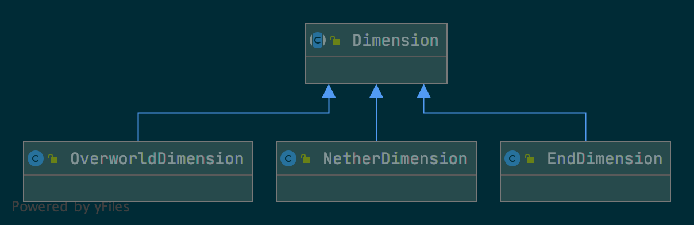
在Dimension之下就是是ChunkGenerator，正如它的名字所暗示的那样，这个类和其子类的作用就是在Minecraft中产生一个接一个的Chunk区块，而Minecraft这连绵不断的地形生成也正是它产生的。在正常游戏时末地、下届和主世界的区块生成分别对应着EndChunkGenerator、NetherChunkGenerator和OverworldChunkGenerator。如果你查看它们的继承关系的话就会发现它们都继承了NoiseChunkGenerator这个类就是Minecraft利用柏林噪音实现了地形生成算法的地方。
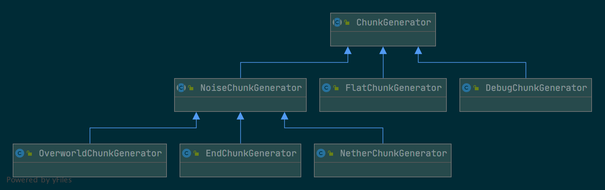
接下来在ChunkGenerator之下的就是就是Biome （生态群系）。你在游戏中能见到的所有生态群系都是这个类的子类，这个类规定了生态群系的种种特征。之所以Biome是在ChunkGenerator之下，是因为一个Chunk中可以同时存在好几个生态群系（当Chunk在生态群系的边界时）。
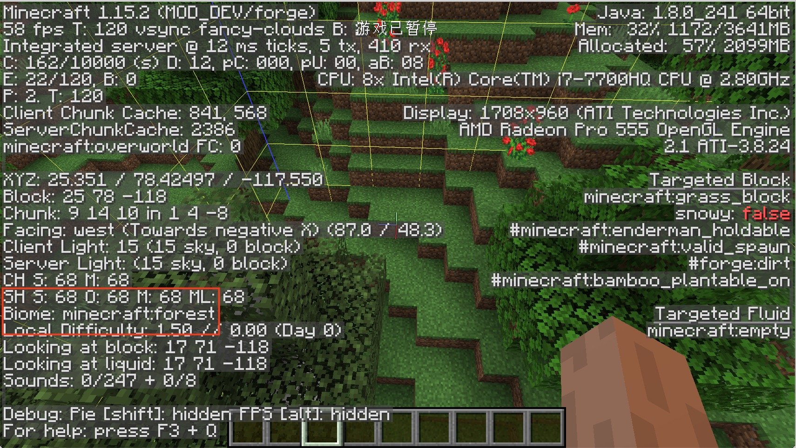
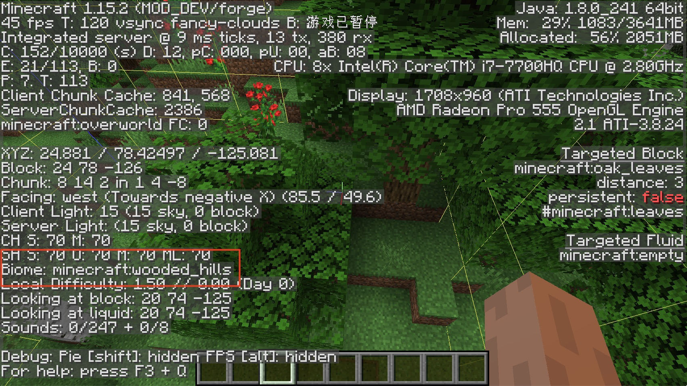
可以看到在同一个区块里可以同时存在多个生物群系。
以下是继承图的节选。

最后在Biome之下的是生物群系的四种属性Feature、Carver、Structure以及Spawn。他们的代表的东西如下图:
| 特性 | 作用 |
|---|---|
Feature | 地下的岩浆湖、矿物、废弃矿洞、地面上的花等 |
Carver | 地下的洞穴等 |
Structure | 村庄、林地府邸等（注：Structure其实是Feature的子类） |
Spawn | 在这个生物群系下会生成的生物 |
在你阅读世界生成相关的代码时可能会看见类似于NetherGenSettings名字末尾带个Settings的类，不用太害怕这种类，他们的作用只是为了配置一些属性。一个种是类似于OverworldBiomeProvider这样名字后面带一个Provider的类，这其实是一种叫做Provider model(提供者模型)的设计模式，当你看到这种类，只需要知道这些类最后会产生出他们去掉名字中Provider部分的类。
矿物生成
在这节中我们将来学习如何进行矿物生成。在学习这件之前请阅读本章的介绍，对世界生成有个大概的印象。
正如我们之前所说的，矿物生成属于Biome 的个Feature，而如果你想要添加矿物生成，其实也就是向生物群系中添加一个新的Feature。接下来看代码
@Mod.EventBusSubscriber(bus = Mod.EventBusSubscriber.Bus.MOD)
public class OreGen {
@SubscribeEvent
public static void onSetUpEvent(FMLCommonSetupEvent event) {
for (Biome biome : ForgeRegistries.BIOMES) {
biome.addFeature(GenerationStage.Decoration.UNDERGROUND_ORES,
Feature.ORE.withConfiguration(
new OreFeatureConfig(OreFeatureConfig.FillerBlockType.NATURAL_STONE,
BlockRegistry.obsidianBlock.get().getDefaultState(),
3)
).withPlacement(Placement.COUNT_DEPTH_AVERAGE.configure(new DepthAverageConfig(30, 30, 20)))
);
}
}
}
没错就这么简单。
因为所有的世界生成都是服务端的行为，所以这里我们自然需要订阅FMLCommonSetupEvent事件。
然后我们通过ForgeRegistries.BIOMES获取所有注册好的生物群系，并且调用biome.addFeature向生物群系中添加Feature（也就是我们的矿物）。Feature有不同的阶段，这里我们填入的是GenerationStage.Decoration.UNDERGROUND_ORES代表矿物生成阶段。然后就是通过Feature.ORE.withConfiguration来创建一个矿物生成的Feature。
Feature.ORE.withConfiguration(
new OreFeatureConfig(OreFeatureConfig.FillerBlockType.NATURAL_STONE,
BlockRegistry.obsidianBlock.get().getDefaultState(),
3))
.withPlacement(Placement.COUNT_DEPTH_AVERAGE.configure(new DepthAverageConfig(30, 30, 20)))
)
Feature.ORE.withConfiguration需要传入一个OreFeatureConfig用来配置我们的矿物生成Feature,因为我们是在主世界生成矿物，所以一个参数填入的是OreFeatureConfig.FillerBlockType.NATURAL_STONE，第二个参数指定你要生成方块的默认状态，这里我们选择生成我们之前创建的黑曜石方块，第三个参数控制了每次生成的最大数量。
光这样你的矿物还没发生成，因为你还没有指定你的矿物需要生成在哪里，生成几次。这就是withPlacement的作用，这里你要传入一个Placement，这个Placement是用来控制你的Feature需要生成在哪里的，原版提供了很多的Placement，这里我们使用Placement.COUNT_DEPTH_AVERAGE，调用它的configure的方法，里面需要传入一个DepthAverageConfig，这里的三个参数分别控制的，每个区块的生成次数，最低生成高度，以及生成范围。
至此，我们的矿物生成以及创建完毕。
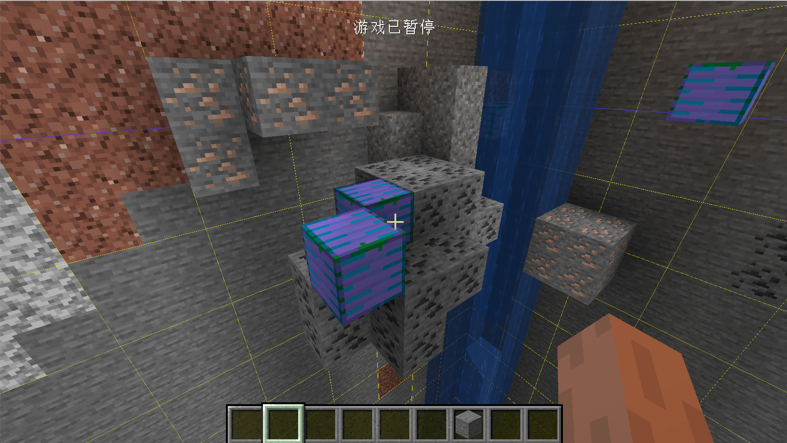
可以看见我们的矿物正常的生成了。
如果你想要更加复杂的自定义矿物生成，可以重写Feature<OreFeatureConfig>。
结构生成
在这节中我们将来学习如何创建一个自定义的结构，并且在世界中自动生成它。我们将以钻石小屋作为例子。
首先既然我们的要自定义的是一个结构，那么也就需要创建一个结构，内容如下:
public class DiamondHouseStructure extends Structure<NoFeatureConfig> {
public DiamondHouseStructure(Function<Dynamic<?>, ? extends NoFeatureConfig> configFactoryIn) {
super(configFactoryIn);
}
@Override
public boolean canBeGenerated(BiomeManager biomeManagerIn, ChunkGenerator<?> generatorIn, Random randIn, int chunkX, int chunkZ, Biome biomeIn) {
if (randIn.nextFloat() < 0.03) {
return true;
}
return false;
}
@Override
public IStartFactory getStartFactory() {
return (structure, chunkPosX, chunkPosZ, bounds, references, seed) -> {
return new Start(structure, chunkPosX, chunkPosZ, bounds, references, seed);
};
}
@Override
public String getStructureName() {
return "neutrino_house";
}
@Override
public int getSize() {
return 3;
}
public static class Start extends StructureStart {
public Start(Structure<?> structure, int chunkPosX, int chunkPosZ, MutableBoundingBox bounds, int references, long seed) {
super(structure, chunkPosX, chunkPosZ, bounds, references, seed);
}
@Override
public void init(ChunkGenerator<?> generator, TemplateManager templateManagerIn, int chunkX, int chunkZ, Biome biomeIn) {
DiamondHouseStructurePiece diamondHouseStructurePiece = new DiamondHouseStructurePiece(this.rand, chunkX * 16, chunkZ * 16);
this.components.add(diamondHouseStructurePiece);
this.recalculateStructureSize();
}
}
}
首先可以看见我们的DiamondHouseStructure继承了Structure<NoFeatureConfig>，这里的NoFeatureConfig表明了我们的结构是不需要配置文件的。
其中canBeGenerated代表了结构会生成的可能性，这里我们设置为3%。getStructureName代表了结构的名字，getSize具体作用不明，大部分原版结构值都为3。
接下来是Start类。
public static class Start extends StructureStart {
public Start(Structure<?> structure, int chunkPosX, int chunkPosZ, MutableBoundingBox bounds, int references, long seed) {
super(structure, chunkPosX, chunkPosZ, bounds, references, seed);
}
@Override
public void init(ChunkGenerator<?> generator, TemplateManager templateManagerIn, int chunkX, int chunkZ, Biome biomeIn) {
DiamondHouseStructurePiece diamondHouseStructurePiece = new DiamondHouseStructurePiece(this.rand, chunkX * 16, chunkZ * 16);
this.components.add(diamondHouseStructurePiece);
this.recalculateStructureSize();
}
}
这个类的init方法就是你添加StructurePiece（结构组件）的地方，所谓的StructurePiece就是一个结构的组成部分，一个村庄可以有不同的房子组成，每一个房子都是村庄这个结构的StructurePiece。当然我们在getStartFactory这个方法里，返回了构造这个类的方法。
接下来我们来看init方法。
在init方法里最要的是这两句话:
DiamondHouseStructurePiece diamondHouseStructurePiece = new DiamondHouseStructurePiece(this.rand, chunkX * 16, chunkZ * 16);
this.components.add(diamondHouseStructurePiece);
首先我们创建了一个自定义的StructurePiece，然后将它添加到了Structure自带的components中，也就是给我们的结构添加了一个结构组件。
最后的recalculateStructureSize，用于重新计算结构的边界大小，需要填写。
接下来我们来看看DiamondHouseStructurePiece具体的内容。
public class DiamondHouseStructurePiece extends ScatteredStructurePiece {
private static final DiamondHouseStructurePiece.Selector BUILD_STONE_SELECTOR = new DiamondHouseStructurePiece.Selector();
protected DiamondHouseStructurePiece(Random random, int x, int z) {
super(CommonEventHandler.diamondHouseStructurePieceType, random, x, 64, z, 12, 10, 15);
}
protected DiamondHouseStructurePiece(TemplateManager templateManager, CompoundNBT nbt) {
super(CommonEventHandler.diamondHouseStructurePieceType, nbt);
}
@Override
public boolean create(IWorld worldIn, ChunkGenerator<?> chunkGeneratorIn, Random randomIn, MutableBoundingBox mutableBoundingBoxIn, ChunkPos chunkPosIn) {
this.fillWithRandomizedBlocks(worldIn, mutableBoundingBoxIn, 0, 0, 0, 4, 4, 4, false, randomIn, BUILD_STONE_SELECTOR);
this.fillWithAir(worldIn, mutableBoundingBoxIn, 1, 1, 1, 3, 3, 3);
this.setBlockState(worldIn, Blocks.ACACIA_TRAPDOOR.getDefaultState().rotate(Rotation.CLOCKWISE_90), 2, 2, 0, mutableBoundingBoxIn);
this.fillWithAir(worldIn, mutableBoundingBoxIn, 2, 1, 0, 2, 1, 0);
return true;
}
static class Selector extends StructurePiece.BlockSelector {
private Selector() {
}
public void selectBlocks(Random rand, int x, int y, int z, boolean wall) {
this.blockstate = Blocks.DIAMOND_BLOCK.getDefaultState();
}
}
}
可以看到DiamondHouseStructurePiece继承了ScatteredStructurePiece类，这个类是StructurePiece子类，StructurePiece还有其他的子类，大家可以按需选用，比如其中的TemplateStructurePiece就可以让你从指定的NBT文件中加载模型。
我们回到我们的类，可以看到在构造方法里有一个CommonEventHandler.diamondHouseStructurePieceType，这个是我们之后需要注册的内容。
这里面最为重要的就是create，这里也是你「画」建筑的地方。StructurePiece提供了一系列的方法，来填充和绘制方块，大家自己看这些函数的签名就能知道其作用了。
这里还有一个内部类是Selector 它继承了StructurePiece.BlockSelector，它的让你可以随机的设置方块的种类的方块的状态，比如原版的丛林神庙，它的墙面的方块种类就是不唯一的，你可以通过这个类的selectBlocks实现同样的效果。
到此，我们的结构算是创建好了，接下来注册它
首先我们注册Structure。
public class FeatureRegistry {
public static final DeferredRegister<Feature<?>> FEATURES = new DeferredRegister<>(ForgeRegistries.FEATURES, "neutrino");
public static RegistryObject<Structure<NoFeatureConfig>> obsidianBlock = FEATURES.register("house", () -> {
return new DiamondHouseStructure(Dynamic -> {
return NoFeatureConfig.deserialize(Dynamic);
});
});
}
这里和物品、方块的注册没什么太大的区别，值得注意的是，因为Structure其实只是一种特殊的Feature，所以我们填的是DeferredRegister<Feature<?>>。
然后又因为我们的DiamondHouseStructure是没有配置文件的，所以传入了一个NoFeatureConfig.deserialize。
同样的，别忘了在你的Mod主类中将FEATURES注册到Mod总线中。
接下来我们看StructurePiece的注册。
@Mod.EventBusSubscriber(bus = Mod.EventBusSubscriber.Bus.MOD)
public class CommonEventHandler {
public static IStructurePieceType diamondHouseStructurePieceType;
@SubscribeEvent
public static void onCommonSetup(FMLCommonSetupEvent event) {
diamondHouseStructurePieceType = Registry.register(Registry.STRUCTURE_PIECE, "house", (templateManager, nbt) -> {
return new DiamondHouseStructurePiece(templateManager, nbt);
});
for (Biome biome : ForgeRegistries.BIOMES) {
biome.addStructure(FeatureRegistry.obsidianBlock.get().withConfiguration(IFeatureConfig.NO_FEATURE_CONFIG));
biome.addFeature(GenerationStage.Decoration.SURFACE_STRUCTURES, FeatureRegistry.obsidianBlock.get().withConfiguration(IFeatureConfig.NO_FEATURE_CONFIG).withPlacement(Placement.NOPE.configure(IPlacementConfig.NO_PLACEMENT_CONFIG)));
}
}
}
这里也很简单，首先我们在外边创建一个一个变量，注意类型是IStructurePieceType，然后在FMLCommonSetupEvent事件中调用Registry.register方法注册，因为我们要注册的是StructurePiece，所以第一个参数填入的是Registry.STRUCTURE_PIECE。
然后就和矿物生成的步骤类似添加结构。但是这里请注意，我们需要调用两个方法首先我们得调用addStructure添加结构，然后调用addFeature让这个结构可以生成，因为我们的Structure是NoFeatureConfig的，所以withConfiguration和withPlacement都填入相对应的NoFeatureConfig就行。
到此，结构已经注册和添加完毕，打开游戏，新建一个存档看看，你应该就能发现世界中自然生成的钻石小屋了。

编程小课堂
当你不知道应该如何使用一个类时，可以去Github上搜索看看如何使用，一般情况下都能找到别人使用的例子。
自定义生物群系和世界类型
在这节中，我们将来学习如何添加一个自定义的生物群系，
和结构类似，首先我们的新建一个类，继承原版的生物群系。
public class ObsidianBiome extends Biome {
protected ObsidianBiome(Builder biomeBuilder) {
super(biomeBuilder);
this.addFeature(GenerationStage.Decoration.UNDERGROUND_ORES, Feature.ORE.withConfiguration(new OreFeatureConfig(OreFeatureConfig.FillerBlockType.NATURAL_STONE, Blocks.GOLD_ORE.getDefaultState(), 9)).withPlacement(Placement.COUNT_RANGE.configure(new CountRangeConfig(20, 32, 32, 80))));
this.addSpawn(EntityClassification.AMBIENT, new SpawnListEntry(EntityType.WITHER_SKELETON, 30, 5, 10));
DefaultBiomeFeatures.addCarvers(this);
}
}
可以看到这里的内容非常的简单，不过就是给我的的生物群系添加Feature子类的，之前已经写过自然生成的大家对这些方法并不陌生。唯一一个值得说的是DefaultBiomeFeatures，原版在这里定义了一些预先设置好的Feature、Structure、Carvers和Spawn，大家可以直接调用里面自带的方法。
接下来就是注册我们的生物群系
public class BiomeRegistry {
public static final DeferredRegister<Biome> BIOMES = new DeferredRegister<>(ForgeRegistries.BIOMES, "neutrino");
public static RegistryObject<ObsidianBiome> obsidianBiome = BIOMES.register("obsidian_biome", () -> {
return new ObsidianBiome(new Biome.Builder().category(Biome.Category.PLAINS)
.surfaceBuilder(SurfaceBuilder.DEFAULT,
new SurfaceBuilderConfig(Blocks.OBSIDIAN.getDefaultState(), Blocks.STONE.getDefaultState(), Blocks.END_STONE.getDefaultState())
)
.scale(3f)
.downfall(0.5f)
.precipitation(Biome.RainType.SNOW)
.depth(1f)
.temperature(0.7f)
.waterColor(0x0c0a15)
.waterFogColor(0x632ebf)
);
});
}
这里的内容也类似，因为这里的参数过多，很多参数也没发简单的解释，这里就不多加解释为什么了。我建议大家自行参照原版的实现填写内容。
当然别忘了在Mod主类中，将BIOMES注册到Mod总线中。
创建完成之后，接下来就是将我们的生物群系添加到主世界的世界生成中。
@Mod.EventBusSubscriber(bus = Mod.EventBusSubscriber.Bus.MOD)
public class CommonSetupEvent {
@SubscribeEvent
public static void onCommonSetup(FMLCommonSetupEvent event) {
BiomeManager.addBiome(BiomeManager.BiomeType.COOL, new BiomeManager.BiomeEntry(BiomeRegistry.obsidianBiome.get(), 1000));
}
}
这里我们在FMLCommonSetupEvent世界中，调用BiomeManager.addBiome添加了我们的生物群系，BiomeManager.BiomeEntry构造方法的第二个参数是权重，这里我们填的高点让我们的生物群系更容易被找到。
打开游戏寻找一下，应该就能看见我们的生物群系了。

但是寻找生物群系有时候是非常麻烦的事情，我们可以创建一个WorldType来帮助我们调试生物群系。所谓的WorldType就是原版中的默认、超平坦、巨大化等。
当然，创建一个自定义的也非常简单
public class ObsidianWorldType extends WorldType {
public ObsidianWorldType() {
super("neutrino_type");
}
@Override
public ChunkGenerator<?> createChunkGenerator(World world) {
OverworldGenSettings settings = new OverworldGenSettings();
SingleBiomeProvider singleBiomeProvider = new SingleBiomeProvider(new SingleBiomeProviderSettings(world.getWorldInfo()).setBiome(BiomeRegistry.obsidianBiome.get()));
return new OverworldChunkGenerator(world, singleBiomeProvider, settings);
}
}
这里我们直接继承了WorldType类。
它的构造方法里需要填入一个名字，请注意这个名字不能超过16个字符
然后就是他的createChunkGenerator方法，这里需要返回一个ChunkGenerator，因为我们希望能像原版主世界的一样的地形起伏，所以返回的是OverworldChunkGenerator。因为我们只需要生成一种生物群系，所以在这里用了 SingleBiomeProvider(单一生物群系提供器)。还有一个OverworldGenSettings就没什么好讲的了。
创建完成之后，我们只需要在你的主类中，创建一个变量实例化它就行。
@Mod("neutrino")
public class Neutrino {
public static final ObsidianWorldType obsidianWorldType = new ObsidianWorldType();
public Neutrino() {
...代码省略...
此时打开游戏，你应该就能看见新的世界类型了

创建一个存档试试吧。
自定义维度与区块生成器以及生物群系提供器
首先先原谅我起了这么长的一个标题。在这节中，我们将要来学习如何生成一个维度，在这个过程中我们还会学习到如何写区块生成器以及生物群系提供器。
在开始我们的代码之前，我们得先来理一下维度生成的过程是什么样子的。
首先我们有一个Dimension，他规定了维度的高度、天空的颜色等。在Dimension中有一个ChunkGenerator，它负责根据特定的算法决定了维度的地形。在ChunkGenerator里有个BiomeProvider，它决定了特定地方是什么生物群系。然后Minecraft会根据生物群系添加类似于生物，结构等东西。
知道了这个过程我们就可以来创建我们的维度了。Forge在这个过程之上还提供了一个叫做ModDimension来自动的帮我们做了类似于数据保存与恢复，客户端和服务端创建维度时发包等操作。所以我们首先需要新建一个自己的ModDimension。
public class ObsidianModDimensions extends ModDimension {
@Override
public BiFunction<World, DimensionType, ? extends Dimension> getFactory() {
return (world, type) -> {
return new ObsidianDimension(world, type);
};
}
}
可以看到这里的内容非常简单，只是返回了一个我们自己的维度而已。
接下来来看维度的具体内容。
public class ObsidianDimension extends Dimension {
public ObsidianDimension(World world, DimensionType dimensionType) {
super(world, dimensionType, 0f);
}
@Override
public ChunkGenerator<?> createChunkGenerator() {
return new ObsidianChunkGenerator(world, new ObsidianBiomeProvider());
}
@Nullable
@Override
public BlockPos findSpawn(ChunkPos chunkPosIn, boolean checkValid) {
return null;
}
@Nullable
@Override
public BlockPos findSpawn(int posX, int posZ, boolean checkValid) {
return null;
}
@Override
public int getActualHeight() {
return 256;
}
@Override
public float calculateCelestialAngle(long worldTime, float partialTicks) {
int j = 6000;
float f1 = (j + partialTicks) / 24000.0F - 0.25F;
if (f1 < 0.0F) {
f1 += 1.0F;
}
if (f1 > 1.0F) {
f1 -= 1.0F;
}
float f2 = f1;
f1 = 1.0F - (float) ((Math.cos(f1 * Math.PI) + 1.0D) / 2.0D);
f1 = f2 + (f1 - f2) / 3.0F;
return f1;
}
@Override
public boolean isSurfaceWorld() {
return true;
}
@Override
public boolean hasSkyLight() {
return true;
}
@Override
public Vec3d getFogColor(float celestialAngle, float partialTicks) {
return new Vec3d(0, 0, 0);
}
@Override
public boolean canRespawnHere() {
return false;
}
@Override
public boolean doesXZShowFog(int x, int z) {
return false;
}
}
我们首先来看维度的构造方法，
public ObsidianDimension(World world, DimensionType dimensionType) {
super(world, dimensionType, 0f);
}
这里的0F具体变量名我还不能确定，应该是类似于particalTick之类的，这里填入0就行。
其他除了createChunkGenerator方法之外的所有方法都是用来配置维度的属性。稍微值得一提的是calculateCelestialAngle，这是用来计算星体在天空中的角度用的。
@Override
public ChunkGenerator<?> createChunkGenerator() {
return new ObsidianChunkGenerator(world, new ObsidianBiomeProvider());
}
我们在createChunkGenerator创建并返回了我们自定义的ChunkGenerator，并且给它了一个自定义的BiomeProvider，接下来我们来看看，这两个是如何实现的。
首先是我们自定义的ChunkGenerator
public class ObsidianChunkGenerator extends ChunkGenerator<GenerationSettings> {
public ObsidianChunkGenerator(IWorld world, BiomeProvider provider) {
super(world, provider, createDefault());
}
public static GenerationSettings createDefault() {
GenerationSettings config = new GenerationSettings();
config.setDefaultBlock(Blocks.DIAMOND_BLOCK.getDefaultState());
config.setDefaultFluid(Blocks.LAVA.getDefaultState());
return config;
}
@Override
public void generateSurface(WorldGenRegion region, IChunk chunk) {
BlockState bedrock = Blocks.BEDROCK.getDefaultState();
BlockState stone = Blocks.STONE.getDefaultState();
ChunkPos chunkpos = chunk.getPos();
BlockPos.Mutable pos = new BlockPos.Mutable();
int x;
int z;
for (x = 0; x < 16; x++) {
for (z = 0; z < 16; z++) {
chunk.setBlockState(pos.setPos(x, 0, z), bedrock, false);
}
}
for (x = 0; x < 16; x++) {
for (z = 0; z < 16; z++) {
int realx = chunkpos.x * 16 + x;
int realz = chunkpos.z * 16 + z;
int height = (int) (65 + Math.sin(realx / 20.0f) * 10 + Math.cos(realz / 20.0f) * 10);
for (int y = 1; y < height; y++) {
chunk.setBlockState(pos.setPos(x, y, z), stone, false);
}
}
}
}
@Override
public int getGroundHeight() {
return world.getSeaLevel() + 1;
}
@Override
public void makeBase(IWorld worldIn, IChunk chunkIn) {
}
@Override
public int func_222529_a(int p_222529_1_, int p_222529_2_, Heightmap.Type heightmapType) {
return 0;
}
}
我们的类继承了ChunkGenerator<GenerationSettings>这里的GenerationSettings说明了我们的需要一个GenerationSettings。这里我们直接继承了ChunkGenerator，并且自己实现了地形生成算法，如果你想要原版的地形生成算法，你可以选择继承NoiseChunkGenerator。
我们来看构造方法。
public ObsidianChunkGenerator(IWorld world, BiomeProvider provider) {
super(world, provider, createDefault());
}
public static GenerationSettings createDefault() {
GenerationSettings config = new GenerationSettings();
config.setDefaultBlock(Blocks.DIAMOND_BLOCK.getDefaultState());
config.setDefaultFluid(Blocks.LAVA.getDefaultState());
return config;
}
可以看到，我们直接调用createDefault创建了一个默认的GenerationSettings，然后设置了默认的方块和流体。这是一个最为简单的GenerationSettings了，如果你想要对你的维度进行更加复杂的配置，你可以选择继承并创建一个你自己的GenerationSettings。
接下来我们在generateSurface写了一个简单的地形生成算法，无非就是按照Sin函数周期的生成地形而已。其他的函数保持默认。
接下来是我们的BiomeProvider
public class ObsidianBiomeProvider extends BiomeProvider {
private static final List<Biome> BIOMES = new ArrayList<>(Arrays.asList(Biomes.PLAINS, Biomes.OCEAN));
private Random random;
protected ObsidianBiomeProvider() {
super(new HashSet<>(BIOMES));
random = new Random();
}
@Override
public Biome getNoiseBiome(int x, int y, int z) {
return BIOMES.get(random.nextInt(2));
}
}
这里的内容也非常简单，无非是声明这个维度有的生物群系而已。
@Override
public Biome getNoiseBiome(int x, int y, int z) {
return BIOMES.get(random.nextInt(2));
}
这个是用来给指定位置返回生物群系用的，这里我们就随机从两个声明的生物群系中返回了一个。
这样我们的类就创建完毕了，接下来就是注册。
首先你得注册ModDimensions。
public class ModDimensionRegistry {
public static final DeferredRegister<ModDimension> MOD_DIMENSION = new DeferredRegister<>(ForgeRegistries.MOD_DIMENSIONS, "neutrino");
public static RegistryObject<ObsidianModDimensions> obsidianModDimension = MOD_DIMENSION.register("obsidian_mod_dimension", () -> {
return new ObsidianModDimensions();
});
}
同样的，我我们用了DeferredRegister，就不多说了，别忘了将MOD_DIMENSION 在你的Mod主类里添加到Mod总线上。
接下是是注册我们的Dimensions:
@Mod.EventBusSubscriber
public class DimensionsEventHandler {
public static final ResourceLocation DIMENSION_ID = new ResourceLocation("neutrino", "obsidian");
public static DimensionType DIMENSION_TYPE;
@SubscribeEvent
public static void onDimensionsRegistry(RegisterDimensionsEvent event) {
if (DimensionType.byName(DIMENSION_ID) == null) {
DIMENSION_TYPE = DimensionManager.registerDimension(DIMENSION_ID, ModDimensionRegistry.obsidianModDimension.get(), null, true);
}
}
}
可以看见我们监听了Forge总线上的RegisterDimensionsEvent事件，然后调用DimensionManager.registerDimension注册注册了我们的维度。这里的if语句是为了避免我们重复注册维度导致游戏崩溃。
这里的DIMENSION_ID代表的是你Dimension的名字请保证是唯一的，DIMENSION_TYPE之后如果你需要可以用来获取你注册的Dimension，这里我们不会用到它，当还是保留作为演示。
至此我们的维度就创建完毕了。
创建一个世界，输入Forge提供的切换维度的命令。
/forge setdimension Dev neurino:obsdian
就可以进入我们创建的维度了。

因为我们没有设置天空颜色之类的，所以看上很奇怪，但是这就是我们的维度了。
数据包
在1.13之后，Mojang推出了Data Pack，将合成表凋落物等都改成了用json文件描述，作为Mod开发者的我们自然也可以利用这点，来编写我们自己的Data Pack。读者在阅读这章之前，请确保自己对Data Pack的制作有所了解，我在这里不会一一涉及每个配方，只会略微的提及要注意的点。
配方
请注意，在阅读本章节之前，请先学习数据包的制作与使用，不懂的话请阅读WIKI中相关的内容
在这节中，我们将要来学习如何添加配方，这里我们将以合成配方，和熔炼配方举例。
正如原版的配方是放在数据包内，我们Mod的配方也应该放在我们的自己的数据包内，首先第一步就是创建我们Mod的数据包。请按照下面的结构性在你的resources文件夹下创建目录。
resources
├── META-INF
│ └── mods.toml
├── assets
├── data
│ ├── minecraft
│ └── neutrino
│ └── recipes
└── pack.mcmeta
其中的data/neutrino就是你自己的数据包了。
接下在recipes文件夹下创建内容。这里你创建的文件名随意，一般情况下我都会写成和物品注册名同名。
接下来举两个例子。
obsidian_block.json:
{
"type": "minecraft:crafting_shaped",
"pattern": [
"###",
"###",
"###"
],
"key": {
"#": {
"item": "neutrino:obsidian_ingot"
}
},
"result": {
"item": "neutrino:obsidian_block",
"count": 1
}
}
obsidian_ingot.json
{
"type": "minecraft:smelting",
"ingredient": {
"item": "minecraft:obsidian"
},
"result": "neutrino:obsidian_ingot",
"experience": 0.35,
"cookingtime": 200
}
可以看到，这里和原版的数据包最大的不同就是我们通过类似neutrino:obsidian_ingot指定了，Mod中的物品，而通过minecraft:obsidian指定了原版的物品。
创建完成以后目录结构如下:
resources
├── META-INF
│ └── mods.toml
├── assets
├── data
│ ├── minecraft
│ └── neutrino
│ └── recipes
│ ├── obsidian_block.json
│ └── obsidian_ingot.json
└── pack.mcmeta
掉落物配方
请注意，在阅读本章节之前，请先学习数据包的制作与使用，不懂的话请阅读WIKI中相关的内容
同样的，我们先创建目录，这里我们以方块的掉落举例。
resources
├── META-INF
│ └── mods.toml
├── assets
├── data
│ ├── minecraft
│ └── neutrino
│ ├── loot_tables
│ │ └── blocks
│ └── recipes
│ ├── obsidian_block.json
│ └── obsidian_ingot.json
└── pack.mcmeta
在loot_tables/blocks下创建和你方块注册名相同的Json文件。这里我们以我们创建的obsidian_block为例。
obsidian_block.json：
{
"type": "minecraft:block",
"pools": [
{
"rolls": 1,
"entries": [
{
"type": "minecraft:item",
"name": "neutrino:obsidian_block"
}
],
"conditions": [
{
"condition": "minecraft:survives_explosion"
}
]
}
]
}
同样的，这里你可以通过neutrino:obsidian_block来指定你的物品。
可能很多读者，对于原版的Loot_table很难理解，这里我可以举个例子，你就把Loot_table当作是在赌场里抽奖，里面配置的信息不过就是奖品是什么，可以抽几次，什么条件下可以抽，什么情况下可以多抽几次。
Data Generator
命令
在这节中，我们将来学习如何向Minecraft中添加一个命令。首先要明确的是命令是一个服务端只在服务端存在的东西（虽然也有客户端的命令，但是我在写这段时还没有实现）。
接下来开始我们的实现吧。
/neurino test
这里我们以上面这条命令为例。
@Mod.EventBusSubscriber
public class CommandEventHandler {
@SubscribeEvent
public static void onServerStaring(FMLServerStartingEvent event) {
CommandDispatcher<CommandSource> dispatcher = event.getCommandDispatcher();
LiteralCommandNode<CommandSource> cmd = dispatcher.register(
Commands.literal("neutrino").then(
Commands.literal("test")
.requires((commandSource) -> {
return commandSource.hasPermissionLevel(0);
})
.executes(TestCommand.instance)
)
);
dispatcher.register(Commands.literal("nu").redirect(cmd));
}
}
可以看见，我们这里监听了FMLServerStartingEvent事件，你的命令注册将会在这里完成。
我们先不看内容，先来理解Minecraft是如何解析命令的。
在我们的例子中，Minecraft首先会根据预设试图解析有没有neutrino，如果有，接着解析在neutrino下有没有test命令，如果有就继续解析或者执行预设的程序，这里我们的命令只有两级，所以解析成功以后就直接运行预设的程序了。
而我们的代码也对应着这个解析过程，我们来仔细观察一下dispatcher.register中的代码。
Commands.literal("neutrino").then(
Commands.literal("test")
.requires((commandSource) -> {
eturn commandSource.hasPermissionLevel(0);
})
.executes(TestCommand.instance)
)
Commands.literal代表着这是一个命令，具体来说是个没有参数的命令，这里命令就是neutrino。如果你需要有参数的命令Commands下还有别的类可以使用。then指定了，这个命令并没有到头，如果匹配了这个命令要继续接着解析。
Commands.literal("test”)这里就是上一条命令子命令的开始，这里的requires表面的执行权限是所有玩家都可以执行的。比起上一条命令，这里没有填入then方法，而是用了executes方法，这说明着我们的命令解析结束了。匹配成功之后就要自行TestCommand.instance这个实例所规定的操作。具体什么内容我们之后再看。
dispatcher.register(Commands.literal("nu").redirect(cmd));
而这条句话则是一个重定向，使得neutrino和nu等价。
public class TestCommand implements Command<CommandSource> {
public static TestCommand instance = new TestCommand();
@Override
public int run(CommandContext<CommandSource> context) throws CommandSyntaxException {
context.getSource().sendFeedback(new StringTextComponent("Hello,world"), false);
return 0;
}
}
这就是我们具体要执行操作的类，可以看到我们继承了Command<CommandSource>，它有个run需要实现，这个run方法里的内容就是，当你命令匹配成功时需要执行的东西。
这里我们就简单的实现了一个向玩家聊天框发送Hello, World的功能。
至此，我们的命令已经完成。打开游戏输入命令试试吧。

进度
配置文件
在这节中，我们将要来学习配置文件的编写。在1.12之后，Forge将配置文件格式改成Toml。
现在我们开始吧
为了理解方便，我先把最后生成出的配置文件格式粘贴出来
#General settings
[general]
#Test config value
#Range: > 0
value = 10
public class Config {
public static ForgeConfigSpec COMMON_CONFIG;
public static ForgeConfigSpec.IntValue VALUE;
static {
ForgeConfigSpec.Builder COMMON_BUILDER = new ForgeConfigSpec.Builder();
COMMON_BUILDER.comment("General settings").push("general");
VALUE = COMMON_BUILDER.comment("Test config value").defineInRange("value", 10, 0, Integer.MAX_VALUE);
COMMON_BUILDER.pop();
COMMON_CONFIG = COMMON_BUILDER.build();
}
}
创建一个配置文件可以大致分为一下几个部分，首先你得创建一个Builder，然后向这个Builder塞入你需要的配置选项，以及注释等，最后调用其build方法，构建出我们的配置实例。
我们先来看静态代码块中的内容。
首先我们调用ForgeConfigSpec.Builder()创建了一个Builder。
接下来的push和pop是一组方法，必须配合使用，每一个comment对应了配置文件中一个节（也就是中括号的部分），其中的push规定了节的名字，comment则是添加了注释。
ForgeConfigSpec.IntValue规定了我们的值，这里的值的允许的种类可以有：EnumValue、LongValue、IntValue、BoolenValue、DoubleValue。
我们在这里通过defineInRange方法定义了我们配置文件中选项的名字，默认值，以及值的范围。
最后我们通过COMMON_BUILDER.build()，构建出了我们配置文件的实例。
当然，你还需要注册这个配置文件，回到你的Mod主类的构造方法中，添加
ModLoadingContext.get().registerConfig(ModConfig.Type.COMMON, Config.COMMON_CONFIG);
Forge 提供了不同种类的配置文件，比如服务端起效，客户端起效的等，这里我们通过ModConfig.Type.COMMON选用了通用的配置文件。
到此你配置文件就已经注册完毕了。
你的配置文件的名字将会是modid-common.toml。
使用配置文件里的值，也是非常的简单。
public class ConfigureTestItem extends Item {
public ConfigureTestItem() {
super(new Properties().group(ModGroup.itemGroup));
}
@Override
public ActionResult<ItemStack> onItemRightClick(World worldIn, PlayerEntity playerIn, Hand handIn) {
if (!worldIn.isRemote) {
playerIn.sendMessage(new StringTextComponent(Integer.toString(Config.VALUE.get())));
}
return super.onItemRightClick(worldIn, playerIn, handIn);
}
}
直接通过Config.VALUE.get()就可以获取配置文件中的值了。
修改你的配置文件，你可以看到物品栏的消息也发生了改变。
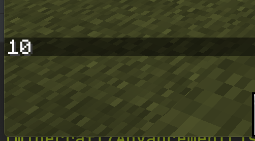
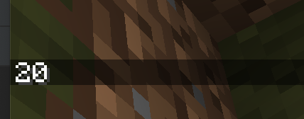
药水
粒子效果
在这节中我们将要来创建一个新的例子效果。
首先我们来创建例子效果类。
public class ObsidianParticle extends SpriteTexturedParticle {
protected ObsidianParticle(World world, double x, double y, double z, Vec3d speed, Color color, float diameter) {
super(world, x, y, z, speed.x, speed.y, speed.z);
maxAge = 100;
motionX = speed.x;
motionY = speed.y;
motionZ = speed.z;
setColor(color.getRed() / 255F, color.getGreen() / 255F, color.getBlue() / 255F);
this.setAlphaF(color.getAlpha());
final float PARTICLE_SCALE_FOR_ONE_METRE = 0.5F;
particleScale = PARTICLE_SCALE_FOR_ONE_METRE * diameter;
this.canCollide = true;
}
@Override
public IParticleRenderType getRenderType() {
return IParticleRenderType.PARTICLE_SHEET_TRANSLUCENT;
}
}
可以看到，这里我们继承了SpriteTexturedParticle，虽然粒子效果的基类是Particle但是，在绝大部分时候你需要继承的都是SpriteTexturedParticle。这个类的意思是将使用一张材质作为粒子效果的显示。
motionX = speed.x;
motionY = speed.y;
motionZ = speed.z;
在这里我们设置的粒子效果的运动速度，在默认情况下TexturedParticle类的构造方法会随机给进行随机人扰动，在这里我们不希望有这个随机的扰动，所以手动设置的了速度。
setColor(color.getRed() / 255F, color.getGreen() / 255F, color.getBlue() / 255F);
this.setAlphaF(color.getAlpha());
这两行则是设置了颜色和透明度
final float PARTICLE_SCALE_FOR_ONE_METRE = 0.5F;
particleScale = PARTICLE_SCALE_FOR_ONE_METRE * diameter;
这里我们设置了粒子效果的大小。
this.canCollide = true;
这里我们设置了粒子效果可以被碰撞。
@Override
public IParticleRenderType getRenderType() {
return IParticleRenderType.PARTICLE_SHEET_TRANSLUCENT;
}
这里我们设置了粒子效果是以半透明的方式渲染。
可以看见，创建一个例子效果需要非常多的数据，Minecraft额外提供了一个接口用来，存放和处理这些创建例子效果的数据,这个接口就是IParticleData。
另外，这里在这个类中，我们还初始化里一个IDeserializer<ObsidianParticleData>这里的两个方法是用来解析/particle这里命令行的参数用的，具体的方式，代码非常的好懂，这里就不多说了。
public class ObsidianParticleData implements IParticleData {
private Vec3d speed;
private Color color;
private float diameter;
public static final IDeserializer<ObsidianParticleData> DESERIALIZER = new IDeserializer<ObsidianParticleData>() {
@Override
public ObsidianParticleData deserialize(ParticleType<ObsidianParticleData> particleTypeIn, StringReader reader) throws CommandSyntaxException {
final int MIN_COLOUR = 0;
final int MAX_COLOUR = 255;
reader.expect(' ');
double speedX = reader.readDouble();
reader.expect(' ');
double speedY = reader.readDouble();
reader.expect(' ');
double speedZ = reader.readDouble();
reader.expect(' ');
int red = MathHelper.clamp(reader.readInt(), MIN_COLOUR, MAX_COLOUR);
reader.expect(' ');
int green = MathHelper.clamp(reader.readInt(), MIN_COLOUR, MAX_COLOUR);
reader.expect(' ');
int blue = MathHelper.clamp(reader.readInt(), MIN_COLOUR, MAX_COLOUR);
reader.expect(' ');
int alpha = MathHelper.clamp(reader.readInt(), 1, MAX_COLOUR);
reader.expect(' ');
float diameter = reader.readFloat();
return new ObsidianParticleData(new Vec3d(speedX, speedY, speedZ), new Color(red, green, blue, alpha), diameter);
}
@Override
public ObsidianParticleData read(ParticleType<ObsidianParticleData> particleTypeIn, PacketBuffer buffer) {
final int MIN_COLOUR = 0;
final int MAX_COLOUR = 255;
double speedX = buffer.readDouble();
double speedY = buffer.readDouble();
double speedZ = buffer.readDouble();
int red = MathHelper.clamp(buffer.readInt(), MIN_COLOUR, MAX_COLOUR);
int green = MathHelper.clamp(buffer.readInt(), MIN_COLOUR, MAX_COLOUR);
int blue = MathHelper.clamp(buffer.readInt(), MIN_COLOUR, MAX_COLOUR);
int alpha = MathHelper.clamp(buffer.readInt(), 1, MAX_COLOUR);
float diameter = buffer.readFloat();
return new ObsidianParticleData(new Vec3d(speedX, speedY, speedZ), new Color(red, green, blue, alpha), diameter);
}
};
public ObsidianParticleData(Vec3d speed, Color color, float diameter) {
this.speed = speed;
this.color = color;
this.diameter = diameter;
}
@Override
public ParticleType<?> getType() {
return ParticleRegistry.obsidianParticle.get();
}
@Override
public void write(PacketBuffer buffer) {
buffer.writeDouble(this.speed.x);
buffer.writeDouble(this.speed.y);
buffer.writeDouble(this.speed.z);
buffer.writeInt(this.color.getRed());
buffer.writeInt(this.color.getGreen());
buffer.writeInt(this.color.getBlue());
buffer.writeInt(this.color.getAlpha());
buffer.writeFloat(this.diameter);
}
@Override
public String getParameters() {
return String.format(Locale.ROOT, "%s %.2f %i %i %i %i %.2d %.2d %.2d",
this.getType().getRegistryName(), diameter, color.getRed(), color.getGreen(), color.getBlue(), color.getAlpha(), speed.getX(), speed.getY(), speed.getZ());
}
public Vec3d getSpeed() {
return speed;
}
public Color getColor() {
return color;
}
public float getDiameter() {
return diameter;
}
}
结下来，我们需要一个ParticleType
public class ObsidianParticleType extends ParticleType<ObsidianParticleData> {
public ObsidianParticleType() {
super(false, ObsidianParticleData.DESERIALIZER);
}
}
第一参数是用来控制粒子效果在视角看不到的时候会不会渲染，这里我们选择不渲染。第二个参数就是我们的命令行解析器。
然后让我们来注册它。
public class ParticleRegistry {
public static final DeferredRegister<ParticleType<?>> PARTICLE_TYPES = new DeferredRegister<>(ForgeRegistries.PARTICLE_TYPES, "neutrino");
public static RegistryObject<ParticleType<ObsidianParticleData>> obsidianParticle = PARTICLE_TYPES.register("obsidian_particle", () -> {
return new ObsidianParticleType();
});
}
我命还需要一个IParticleFactory，用来在客户端显示创建我们的例子效果。
public class ObsidianParticleFactory implements IParticleFactory<ObsidianParticleData> {
private final IAnimatedSprite sprites;
public ObsidianParticleFactory(IAnimatedSprite sprite) {
this.sprites = sprite;
}
@Nullable
@Override
public Particle makeParticle(ObsidianParticleData typeIn, World worldIn, double x, double y, double z, double xSpeed, double ySpeed, double zSpeed) {
ObsidianParticle particle = new ObsidianParticle(worldIn, x, y, z, typeIn.getSpeed(), typeIn.getColor(), typeIn.getDiameter());
particle.selectSpriteRandomly(sprites);
return particle;
}
}
这里的makeParticle就是通过IParticleData的数据创建例子效果的地方。
particle.selectSpriteRandomly(sprites);
这句话的意思是随机加载我们例子效果json文件里的一个材质。
同样的，这个也需要注册，别忘了value = Dist.CLIENT。
@Mod.EventBusSubscriber(bus = Mod.EventBusSubscriber.Bus.MOD, value = Dist.CLIENT)
public class ParticleFactoryRegistry {
@SubscribeEvent
public static void onParticleFactoryRegistration(ParticleFactoryRegisterEvent event) {
Minecraft.getInstance().particles.registerFactory(ParticleRegistry.obsidianParticle.get(), (sprite) -> {
return new ObsidianParticleFactory(sprite);
});
}
}
接下来我们需要创建为我们粒子效果指定材质，请注意，如果你没有指定材质，游戏是无法启动的。
.
├── META-INF
│ └── mods.toml
├── assets
│ └── neutrino
│ ├── blockstates
│ ├── lang
│ ├── models
│ ├── particles
│ │ └── obsidian_particle.json
│ ├── sounds
│ ├── sounds.json
│ └── textures
│ ├── block
│ ├── entity
│ ├── gui
│ ├── item
│ └── particle
│ └── obsidian_particle.png
├── data
└── pack.mcmeta
像如上的目录创建particles文件夹，和textures/particle文件夹。
然后在particles文件里创建和你注册名相同的json文件，里面内容如下:
{
"textures": [
"neutrino:obsidian_particle"
]
}
这里我们指定里粒子效果的材质。
然后在textures/particle下添加我们的材质。
启动游戏，输入如下命令，就可以生成我们的粒子效果了。
/particle neutrino:obsidian_particle 0 0 0 0 0 255 100 3

音效
在这节中，我们讲学习如何向给我的Mod添加音效，非常的简单，就让我开始吧。
public class SoundEventRegistry {
public static final DeferredRegister<SoundEvent> SOUNDS = new DeferredRegister<>(ForgeRegistries.SOUND_EVENTS, "neutrino");
public static RegistryObject<SoundEvent> meaSound = SOUNDS.register("mea", () -> {
return new SoundEvent(new ResourceLocation("neutrino", "mea"));
});
}
就这两句话，就可以注册我们的音效了。
接下来我们来添加音效，在你的Resource目录下创建如下的文件和目录。
resources
├── META-INF
│ └── mods.toml
├── assets
│ └── neutrino
│ ├── blockstates
│ ├── lang
│ ├── models
│ ├── sounds
│ ├── sounds.json
│ └── textures
├── data
└── pack.mcmeta
在这里我们创建了一个sounds.json，这个文件的具体格式请参照Wiki。
内容如下
{
"mea": {
"subtitle": "mea",
"replace": "true",
"sounds": [
{
"name": "neutrino:mea",
"steam": true
}
]
}
}
请注意，最外面的键名和你之前ResourceLocation中第二个参数应该是一样的。然后我们在name中指定了具体的声音文件。请注意，Minecraft只允许载入ogg格式的音频文件。
接下来，我们将制作好的音频文件放入sounds文件内。
resources
├── META-INF
│ └── mods.toml
├── assets
│ └── neutrino
│ ├── blockstates
│ ├── lang
│ ├── models
│ ├── sounds
│ │ └── mea.ogg
│ ├── sounds.json
│ └── textures
├── data
└── pack.mcmeta
放置好的目录如上。
接下来就可创建物品来使用我们的音效了
public class SoundTestItem extends Item {
public SoundTestItem() {
super(new Properties().group(ModGroup.itemGroup));
}
@Override
public ActionResult<ItemStack> onItemRightClick(World worldIn, PlayerEntity playerIn, Hand handIn) {
if (worldIn.isRemote) {
worldIn.playSound(playerIn, playerIn.getPosition(), SoundEventRegistry.meaSound.get(), SoundCategory.AMBIENT, 10f, 1f);
}
return super.onItemRightClick(worldIn, playerIn, handIn);
}
}
打开游戏试试吧，我们应该成功添加了音效。
用户输入
这一节中我们将来学习如何获取用户输入。这里我们将以快捷键举例。请注意，所有的用户输入都是客户端行为。
@Mod.EventBusSubscriber(value = Dist.CLIENT)
public class KeyBoardInput {
public static final KeyBinding MESSAGE_KEY = new KeyBinding("key.message",
KeyConflictContext.IN_GAME,
KeyModifier.CONTROL,
InputMappings.Type.KEYSYM,
GLFW.GLFW_KEY_J,
"key.category.neutrino");
@SubscribeEvent
public static void onKeyboardInput(InputEvent.KeyInputEvent event) {
if (MESSAGE_KEY.isPressed()) {
assert Minecraft.getInstance().player != null;
Minecraft.getInstance().player.sendMessage(new StringTextComponent("You Press J"));
}
}
}
首先我们创建了一个KeyBinding，这个就是一个可以配置的快捷键，具体的参数非常简单，这里就不多加说明了，别忘了value = Dist.CLIENT，因为用户输入是物理客户端才有的东西。
可以看到，我们监听了Forge总线上的InputEvent.KeyInputEvent，即键盘输入事件。InputEvent下还有其他子事件，大家可以按需选用。在这里我们判断当我的快捷键按下时，给玩家发送一个消息。
当然我们还需要注册我们的快捷键。
@Mod.EventBusSubscriber(bus = Mod.EventBusSubscriber.Bus.MOD, value = Dist.CLIENT)
public class KeybindingRegistry {
@SubscribeEvent
public static void onClientSetup(FMLClientSetupEvent event) {
ClientRegistry.registerKeyBinding(KeyBoardInput.MESSAGE_KEY);
}
}
因为按钮按下是个客户端行为，所有这里我们选用FMLClientSetupEvent事件，在里面调用ClientRegistry.registerKeyBinding方法注册我们的快捷键，同样的在这里别忘了value = Dist.CLIENT。
打开游戏按下我们之前设置的快捷键，就可以看到我们的消息了。
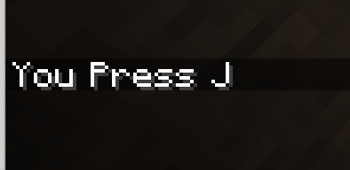
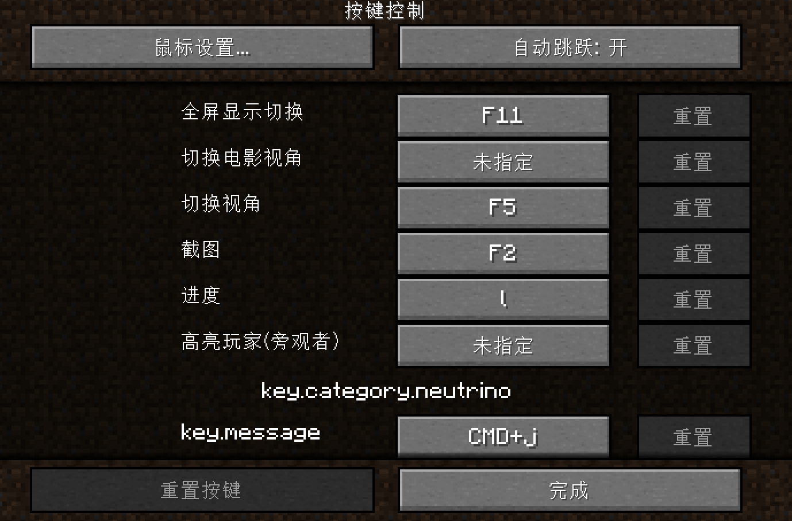
注：因为我的系统时macOS，所以这里显示的是CMD。
与其他mod的兼容
Access Transformer
请注意，在没有确定你必须要使用AT的情况下，请务必不要随意使用AT，会有兼容性风险
虽然Forge已经为我们做了绝大多数的工作来方便我们开发mod，但是在极少数的情况下，我们会发现Forge没有提供给我们接口让我来修改原版的内容，而原版的方法、字段等又是private的，我们没法调用它们。
在这种情况下，Forge提供给我了一种叫做Access Transformer（简称AT）的工具，让我们能够修改原版内容的调用权限，把private改成public。
这里我们以给堆肥桶添加新的物品为例。
如果你查看过原版ComposterBlock的代码，你会注意到，原版调用了registerCompostable函数来添加堆肥桶运行添加进入的物品，但是这个方法是private的，我们没法直接调用。
private static void registerCompostable(float chance, IItemProvider itemIn) {
CHANCES.put(itemIn.asItem(), chance);
}
这时我们就可以使用AT来把这个private变成public，来向堆肥桶里添加新的物品。
首先我们需要编辑我们的build.gralde中，如下这部分，将AT相关的注释删除。
minecraft {
// The mappings can be changed at any time, and must be in the following format.
// snapshot_YYYYMMDD Snapshot are built nightly.
// stable_# Stables are built at the discretion of the MCP team.
// Use non-default mappings at your own risk. they may not always work.
// Simply re-run your setup task after changing the mappings to update your workspace.
mappings channel: 'snapshot', version: '20200512-1.15.1'
// makeObfSourceJar = false // an Srg named sources jar is made by default. uncomment this to disable.
accessTransformer = file('src/main/resources/META-INF/accesstransformer.cfg')
然后在META-INF文件夹下，创建accesstransformer.cfg文件。
.
├── META-INF
│ ├── accesstransformer.cfg
│ └── mods.toml
├── assets
├── data
└── pack.mcmeta
在accesstransformer.cfg里填入的就是你的AT指令。
具体的格式如下，内容出自Sponge 文档
有三种不同类型的 AT，分别用于对类、字段、和方法作出修改。Access Transformer配置中的每一行由两个（对于类而言）或三个（对于方法和字段而言）部分，部分与部分之间使用空格隔开。
- 用于修改方法或字段的访问级标识符，如
public或protected等。如果你还想同时去除final修饰符，你可以在其后添加-f标记，如public-f- 一个类的全名，如
net.minecraft.server.MinecraftServer- 字段或方法的 Searge 名（方法需要添加相应的方法签名），如
field_54654_a或func_4444_a()V你可以通过添加
#前缀以添加注释。一个良好的习惯是为每行 AT 都写相应的注释，这样每一个字段或方法的引用就一目了然。下面是几行 Access Transformer 的示例：
public-f net.minecraft.server.MinecraftServer field_71308_o # anvilFile public net.minecraft.server.MinecraftServer func_71260_j()V # stopServer public-f net.minecraft.item.ItemStack
如果你需要获取原版的SRG和MCP映射，你可以运行ForgeGradle提供的creteMcpToSrgtask.
运行结束后，你就可以在build/createSrgToMcp目录下，找到对应的表了。

但其实，我们不需要直接写AT，在discord 上有个叫做K9的机器，你可以在MCP Bot的Discord Server中的#bot-spam找到它，建议是直接私聊它。
输入!mcp 你要查询的内容，在我们的例子里就是!mcp registerCompostable，它会自动返回相关的SRG名等信息，其中就包括了AT。
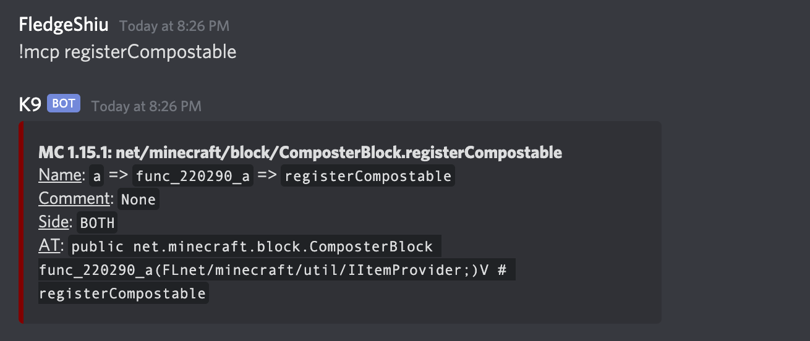
其中最下面的这一行就是AT。
然后我们将其复制到accesstransformer.cfg中:
public net.minecraft.block.ComposterBlock func_220290_a(FLnet/minecraft/util/IItemProvider;)V # registerCompostable
接下来，我们需要刷新我们的Gradle。
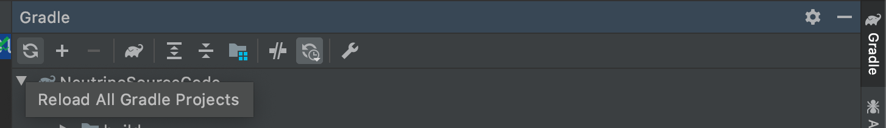
点击Gradle面板中的Reload All Gradle Projects，等待刷新完成。
在刷新完成后，你再次查看ComposterBlock的代码，你就会发现registerCompostable这个静态方法变成public的了。
接下来我们就可以来添加新的物品了。
@Mod.EventBusSubscriber(bus = Mod.EventBusSubscriber.Bus.MOD)
public class ATDemo {
@SubscribeEvent
public static void addNewItemToComposterBlock(FMLLoadCompleteEvent event) {
ComposterBlock.registerCompostable(0.3F, Items.OAK_LEAVES);
ComposterBlock.registerCompostable(0.3F, Items.SPRUCE_LEAVES);
ComposterBlock.registerCompostable(0.3F, Items.BIRCH_LEAVES);
ComposterBlock.registerCompostable(0.3F, Items.JUNGLE_LEAVES);
ComposterBlock.registerCompostable(0.3F, Items.ACACIA_LEAVES);
ComposterBlock.registerCompostable(0.3F, Items.DARK_OAK_LEAVES);
}
}
这里我们将原版的一些树叶添加了进去，启动游戏，现在你应该就可以向堆肥器里塞入树叶了。